print( *( Augen := [6, 2, 1, 2] ) )
print(f"Das Würfelergebnis an Indexposition 2 lautet: {Augen[2]}")6 2 1 2
Das Würfelergebnis an Indexposition 2 lautet: 12016 stellte eine Studie fest, dass ein Fünftel aller wissenschaftlichen Artikel im Bereich der Genetik auf der Grundlage von durch die Tabellenkalkulation Excel verfälschten Daten durchgeführt wurde (Ziemann, Eren, und El-Osta 2016). Genbezeichnungen wie “MARCH1” wurden fälschlicherweise in ein Datumsformat umgewandelt. 2021 wurde diese Schätzung des Anteils betroffener Arbeiten sogar auf 30 Prozent angehoben. (heise online)
Am Beginn der computergestützten Datenanalyse steht das Einlesen von Daten aus Dateien. In der Praxis ist das Einlesen von Daten alles andere als trivial. Daten werden in einer Vielzahl von Dateiformaten gespeichert. Deshalb ist es in der Datenanalyse erforderlich, mit verschiedenen Dateiformaten umgehen zu können: mit wenigen Kilobyte großen Textdateien, offenen und proprietären Formaten gängiger Büroanwendungen und mehreren hundert Megabyte großen Dateien in speziell für den Austausch wissenschaftlicher Daten entwickelten Formaten. Programmiersprachen wie Python und R bringen verschiedene Werkzeuge zum Lesen, Bearbeiten und Speichern von verschiedenen Dateiformaten mit. Spezialisierte Pakete ergänzen den Werkzeugkasten.
Die praktischen Herausforderungen der Datenanalyse beschränken sich jedoch nicht nur auf technische Aspekte. Oftmals bereitet der innere Aufbau von Datensätzen die größten Schwierigkeiten. Ein wichtiger Bestandteil des Einlesens strukturierter Datensätze besteht darin, Fehler im Datensatz zu suchen und ggf. zu bereinigen. Dasu und Johnson schreiben:
“Unfortunately, the data set is usually dirty, composed of many tables, and has unknown properties. Before any results can be produced, the data must be cleaned and explored—often a long and difficult task. […] In our experience, the tasks of exploratory data mining and data cleaning constitute 80% of the effort that determines 80% of the value of the ultimate data mining results.” (Dasu und Johnson (2003), S. ix)
Das Einlesen strukturierter Datensätze umfasst somit den gesamten Prozess des technischen Zugriffs auf Dateien, der Organisation, Fehlersuche und -korrektur sowie des Abspeicherns der Daten in einer für die weitere Bearbeitung geeigneten Form.
In der praktischen Datenanalyse helfen zwei einfache Tipps beim Einlesen strukturierter Datensätze:
Schauen Sie sich Ihre Daten an, bevor Sie diese mit Python einlesen! Dafür reicht ein Texteditor oder ein Tabellenkalkulationsprogramm (hier die automatische Erkennung und Umwandlung von Datumsformaten beachten). Ein kurzer Blick genügt, um die verwendeten Zeichentrenner, Tausendertrennzeichen, Datumsformate, die Kodierung fehlender Werte und die Unicode-Kodierung (wie UTF-8) zu identifizieren.
Dies ist aber nicht immer möglich, beispielsweise wenn Ihr Datensatz aus hunderten Spalten und zehntausenden Zeilen besteht. Dieser Baustein vermittelt deshalb die Handwerkszeuge, um Datensätze ausschließlich mit den in Python verfügbaren Mitteln einzulesen.
Es ist nicht erforderlich, die Besonderheiten aller hier vorgestellten Pakete und Funktionen auswendig zu beherrschen. Dafür ist das Themenfeld zu komplex und nicht selten ändert sich das Verhalten von Funktionen mit der Weiterentwicklung der Programmiersprache. Die hier vorgestellten Besonderheiten von Funktionen dienen jedoch als mentale Ankerpunkte, die als Anknüpfungspunkt dienen sollen, wenn Sie in der Praxis auf Probleme stoßen.
Benutzen Sie die Dokumentation! Auf diese Weise erhalten Sie einen vollständigen Überblick über standardmäßig gesetzte und optional verfügbare Parameter. Außerdem erkennen Sie Änderungen in der Programmausführung und vermeiden so unerwartete Fehler.
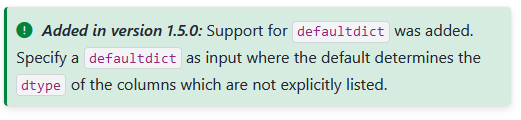
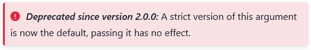
Bevor wir uns mit den praktischen Herausforderungen des Einlesens strukturierter Datensätze beschäftigten, werden zunächst einige Merkmale von Datensätzen behandelt, um ein grundlegendes Verständnis der Begrifflichkeiten zu schaffen und den Umgang der in der Basis von Python enthaltenen Werkzeuge zu vermitteln. Am Ende dieses Kapitels wird mit tidy data ein grundlegendes Konzept zur Organisation von Datensätzen vorgestellt.
Ein Datensatz ist eine Sammlung zusammengehöriger Daten. Datensätze enthalten einer oder mehreren Variablen zugeordnete Werte. Jeder Datensatz besitzt ein technisches Format, eine Struktur, mindestens eine Variable und mindestens einen Wert.
Das technische Format eines Datensatzes gibt vor, mit welchen Mitteln Daten eingelesen, bearbeitet und gespeichert werden können. Einige Beispiele sind:
Druckerzeugnis, z. B. Telefonbuch: manuelles Ablesen von Name und Telefonnummer, irreversible Bearbeitung per Stift
Lochkarte, z. B. Parkschein: Lesegerät erkennt Lochung und gewährt eine Freistunde, irreversible Bearbeitung mit Stanzgerät
Textdatei, z. B. Einwohnerzahl nach Bundesländern: Kann mit einer Vielzahl von Computerprogrammen wie Texteditor, Tabellenkalkulationsprogramm oder Programmierumgebung eingelesen, bearbeitet und gespeichert werden.
Hierarchical Data Format HDF5, z. B. räumliche Daten zur Blitzdichte: benötigt spezialisierte Programme oder Pakete
Datensätze speichern Daten in einer definierten n-dimensionalen Struktur.
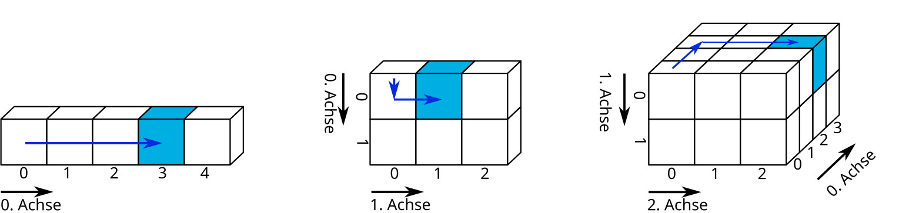
slicing von Marc Fehr ist lizensiert unter CC-BY-4.0 und abrufbar auf GitHub. 2024
Die einfachste Form sind eindimensionale Datensätze, die Werte einer einzigen Variablen zuordnen. Eindimensionale Datensätze mit Werten des gleichen Typs (bspw. Zahlen) werden Vektor genannt. Eindimensionale Datensätze, die unterschiedliche Datentypen enthalten können, heißen Liste. Eindimensionale Datensätze verfügen lediglich über eine Achse: den Index, über den Elemente angesprochen werden können.
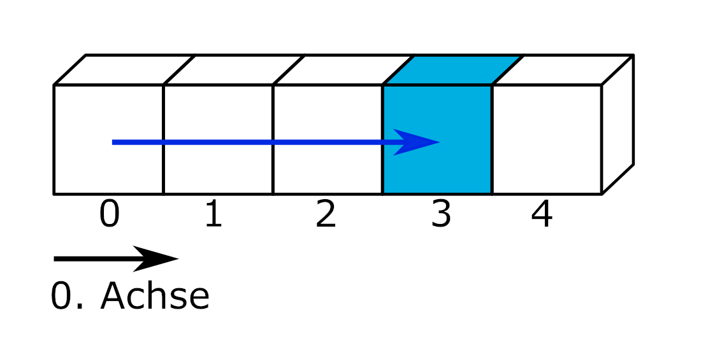
slicing von Marc Fehr ist lizensiert unter CC-BY-4.0 und abrufbar auf GitHub. Die Grafik wurde auf den gezeigten Teil beschnitten und die obenstehende Beschriftung entfernt. 2024
Beispiele eindimensionaler Datensätze sind ein Einkaufszettel oder die Urliste eines Würfelexperiments. Über den Index kann beispielsweise das Würfelergebnis an der Indexposition 2 ausgegeben werden.
print( *( Augen := [6, 2, 1, 2] ) )
print(f"Das Würfelergebnis an Indexposition 2 lautet: {Augen[2]}")6 2 1 2
Das Würfelergebnis an Indexposition 2 lautet: 1An dieser Stelle eine kleine Wiederholung aus dem Werkzeugbaustein Python:
Die Pythonbasis greift über Dateiobjekte auf Dateien zu. Die Funktionen und Methoden haben Sie im Querverweis auf w-python kennengelernt. Der Zugriff auf Dateien über die Pythonbasis ist eine verlässliche Rückfalloption und darüber hinaus nützlich, um die Enkodierung einer Datei zu bestimmen.
os.getcwd() aus dem Modul os gibt das aktuelle Arbeitsverzeichnis aus, mit der Funktion os.cwd(pfad) kann es gewechselt werden.open(dateipfad, mode = 'r') öffnet eine Datei im Lesemodus und gibt ein Dateiobjekt zurück.dateiobjekt.name, os.path.basename(dateiobjekt.name), dateiobjekt.closed, dateiobjekt.mode, dateiobjekt.encodingdateiobjekt.read(), dateiobjekt.readline(), dateiobjekt.readlines() oder der Funktion list(dateiobjekt) ausgelesen werden.dateiobjekt.close() schließt die Datei und gibt sie somit wieder für andere Programme frei.Lesen Sie die Datei “python.txt” unter dem dateipfad “skript/01-daten/” ein.
Bestimmen Sie die Enkodierung der Datei.
Entfernen Sie die die erste Zeile aus dem Text und geben Sie den Text mit Python aus.
Wie kann der Text korrekt dargestellt werden?
dateipfad = "01-daten/" + "python.txt"
dateiobjekt = open(dateipfad, mode = 'r')
# Enkodierung der Datei bestimmen
print(f"Die Enkodierung der Datei lautet: {dateiobjekt.encoding}")
# Text ausgeben
text_als_liste = list(dateiobjekt)
for i in range(1, len(text_als_liste)):
print(text_als_liste[i])
# Datei schließen.
dateiobjekt.close()Die Enkodierung der Datei lautet: UTF-8
Python ist eine universell nutzbare, üblicherweise interpretierte, höhere Programmiersprache.[14] Sie hat den Anspruch, einen gut lesbaren, knappen Programmierstil zu fördern.[15] So werden beispielsweise Blöcke nicht durch geschweifte Klammern, sondern durch Einrückungen strukturiert.
Python wurde mit dem Ziel größter Einfachheit und Übersichtlichkeit entworfen. Dies wird vor allem durch zwei Maßnahmen erreicht. Zum einen kommt die Sprache mit relativ wenigen Schlüsselwörtern aus.[49] Zum anderen ist die Syntax reduziert und auf Übersichtlichkeit optimiert. Dadurch lassen sich Python-basierte Skripte deutlich knapper formulieren als in anderen Sprachen.[50]
Van Rossum legte bei der Entwicklung großen Wert auf eine Standardbibliothek, die überschaubar und leicht erweiterbar ist. Dies war Ergebnis seiner schlechten Erfahrung mit der Sprache ABC, in der das Gegenteil der Fall ist.[51] Dieses Konzept ermöglicht, in Python Module aufzurufen, die in anderen Programmiersprachen geschrieben wurden, etwa um Schwächen von Python auszugleichen. Beispielsweise können für zeitkritische Teile in maschinennäheren Sprachen wie C implementierte Routinen aufgerufen werden.
Auszug aus https://de.wikipedia.org/wiki/Python_(Programmiersprache), abgerufen am 20.02.2025Enkodierung UTF-8 auswählen.
# Mit europäischen Sonderzeichen kompatible Enkodierung UTF-8 wählen
dateiobjekt = open(dateipfad, mode = 'r', encoding = 'utf-8')
# Text ausgeben
text_als_liste = list(dateiobjekt)
for i in range(1, len(text_als_liste)):
print(text_als_liste[i])
# Datei schließen.
dateiobjekt.close()
Python ist eine universell nutzbare, üblicherweise interpretierte, höhere Programmiersprache.[14] Sie hat den Anspruch, einen gut lesbaren, knappen Programmierstil zu fördern.[15] So werden beispielsweise Blöcke nicht durch geschweifte Klammern, sondern durch Einrückungen strukturiert.
Python wurde mit dem Ziel größter Einfachheit und Übersichtlichkeit entworfen. Dies wird vor allem durch zwei Maßnahmen erreicht. Zum einen kommt die Sprache mit relativ wenigen Schlüsselwörtern aus.[49] Zum anderen ist die Syntax reduziert und auf Übersichtlichkeit optimiert. Dadurch lassen sich Python-basierte Skripte deutlich knapper formulieren als in anderen Sprachen.[50]
Van Rossum legte bei der Entwicklung großen Wert auf eine Standardbibliothek, die überschaubar und leicht erweiterbar ist. Dies war Ergebnis seiner schlechten Erfahrung mit der Sprache ABC, in der das Gegenteil der Fall ist.[51] Dieses Konzept ermöglicht, in Python Module aufzurufen, die in anderen Programmiersprachen geschrieben wurden, etwa um Schwächen von Python auszugleichen. Beispielsweise können für zeitkritische Teile in maschinennäheren Sprachen wie C implementierte Routinen aufgerufen werden.
Auszug aus https://de.wikipedia.org/wiki/Python_(Programmiersprache), abgerufen am 20.02.2025Zweidimensionale Datensätze organisieren Werte in einer aus Zeilen und Spalten bestehenden Matrix oder einem Dataframe. Eine Matrix enthält nur einen Datentyp (bspw. Zahlen), ein Dataframe kann unterschiedliche Datentypen enthalten (bspw. Zahlen und Wahrheitswerte). In Python stellt das Modul Pandas die DataFrame-Struktur bereit. [hier Querverweis auf w-Pandas]
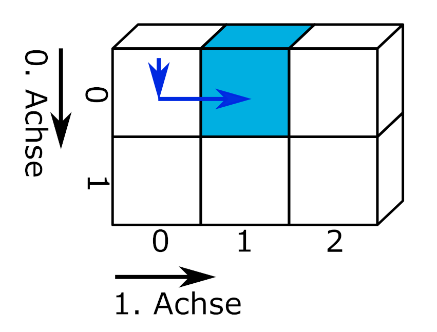
slicing von Marc Fehr ist lizensiert unter CC-BY-4.0 und abrufbar auf GitHub. Die Grafik wurde auf den gezeigten Teil beschnitten und die obenstehende Beschriftung entfernt. 2024
Typischerweise entspricht in zweidimensionalen Datensätzen jede Spalte einer Variablen und jede Zeile einer Beobachtung. Variablen speichern alle Werte eines Merkmals, zum Beispiel des Würfelergebnisses. Beobachtungen speichern alle Werte, die für eine Beobachtungseinheit gemessen wurden, z. B. für eine Person. (Wickham 2014, 3)
import pandas as pd
messung1 = pd.DataFrame({'Name': ['Hans', 'Elke', 'Jean', 'Maya'], 'Geburtstag': ['26.02.', '14.03.', '30.12.', '07.09.'], 'Würfelfarbe': ['rosa', 'rosa', 'blau', 'gelb'], 'Summe Augen': [17, 12, 8, 23]})
messung1| Name | Geburtstag | Würfelfarbe | Summe Augen | |
|---|---|---|---|---|
| 0 | Hans | 26.02. | rosa | 17 |
| 1 | Elke | 14.03. | rosa | 12 |
| 2 | Jean | 30.12. | blau | 8 |
| 3 | Maya | 07.09. | gelb | 23 |
Über die Angabe der Indizes entlang der 0. (Zeilen) und der 1. Achse (Spalten) kann die Summe der gewürfelten Augen einer Person ausgegeben werden.
print(f"Jean würfelte {messung1.iloc[2, 3]} Augen")Jean würfelte 8 AugenEs ist aber auch möglich, zunächst eine Spalte auszuwählen und dann wie bei einem eindimensionalen Datensatz den Wert an einer Indexposition aufzurufen. Dies wird verkettete Indexierung genannt.
print(f"Jean würfelte {messung1['Summe Augen'][2]} Augen")Jean würfelte 8 AugenDie verkettete Indexierung erzeugt in Pandas abhängig vom Kontext eine Kopie des Objekts oder greift auf den Speicherbereich des Objekts zu. Mit Pandas 3.0 wird die verkettete Indexierung nicht mehr unterstützt, das Anlegen einer Kopie wird zum Standard werden. Weitere Informationen erhalten Sie im zitierten Link.
“Whether a copy or a reference is returned for a setting operation, may depend on the context. This is sometimes called chained assignment and should be avoided. See Returning a View versus Copy.”
Zweidimensionale Datensätze werden zumeist in einer aus Zeilen und Spalten bestehenden Matrix dargestellt. Den zeilenweise eingetragenen Beobachtungen werden Werte für die in den Spalten organisierten Variablen zugeordnet. Diese Art Daten darzustellen, wird wide-Format genannt: Mit jeder zusätzlich gemessenen Variablen wird der Datensatz breiter.
Eine andere Art Daten zu organisieren und über Daten nachzudenken, ist die Darstellung im long-Format. Einige Programme und Pakete erfordern Daten im long-Format oder profitieren zumindest davon beispielsweise bei der Erstellung von Grafiken. Schauen wir uns zunächst noch einmal den Datensatz messung1 im wide-Format an. Welche Beobachtungseinheiten gibt es? Welche Variablen wurden erhoben?
| Name | Geburtstag | Würfelfarbe | Summe Augen | |
|---|---|---|---|---|
| 0 | Hans | 26.02. | rosa | 17 |
| 1 | Elke | 14.03. | rosa | 12 |
| 2 | Jean | 30.12. | blau | 8 |
| 3 | Maya | 07.09. | gelb | 23 |
Vermutlich werden Sie davon ausgehen, dass die Beobachtungseinheiten Hans, Elke, Jean und Maya sind und die Variablen Geburtstag, Würfelfarbe und Summe Augen. Es ist aber auch denkbar, dass die Beobachtungseinheit Person mit 0, 1, 2 und 3 kodiert wurde (dem Zeilenindex des Datensatzes) und die Spalte Name ebenfalls eine der erhobenen Variablen ist. Ebenso könnte es nur zwei Variablen, Würfelfarbe und Summe Augen, geben, während die Spalten Name und Geburtstag die beobachteten Personen kodieren. Stellen Sie sich vor, es gäbe eine zweite Person mit dem Namen Hans. Dann könnten die Würfelergebnisse der Personen mit dem Namen Hans nur über den Geburtstag am 26.02. oder 11.11. korrekt zugeordnet werden.
messung1 = pd.DataFrame({'Name': ['Hans', 'Elke', 'Jean', 'Maya', 'Hans'], 'Geburtstag': ['26.02.', '14.03.', '30.12.', '07.09.', '11.11.'], 'Würfelfarbe': ['rosa', 'rosa', 'blau', 'gelb', 'rosa'], 'Summe Augen': [12, 17, 8, 23, 7]})
messung1| Name | Geburtstag | Würfelfarbe | Summe Augen | |
|---|---|---|---|---|
| 0 | Hans | 26.02. | rosa | 12 |
| 1 | Elke | 14.03. | rosa | 17 |
| 2 | Jean | 30.12. | blau | 8 |
| 3 | Maya | 07.09. | gelb | 23 |
| 4 | Hans | 11.11. | rosa | 7 |
Das long-Format macht diese Überlegungen explizit, indem identifizierende Variablen (identification variables, kurz: id vars) und gemessene Variablen (measure variables oder value vars) unterschieden werden. Die Transformation eines Datensatzes aus dem wide-Format ins long-Format wird melting (schmelzen) genannt. Das Modul Pandas bietet die Funktion pd.melt(frame, id_vars = None). Diese erwartet einen DataFrame. Im optionalen Argument id_vars wird angegeben, welche Spalten die identifizierenden Variablen sind.
messung1_long = pd.melt(messung1, id_vars = ['Name', 'Geburtstag'])
messung1_long| Name | Geburtstag | variable | value | |
|---|---|---|---|---|
| 0 | Hans | 26.02. | Würfelfarbe | rosa |
| 1 | Elke | 14.03. | Würfelfarbe | rosa |
| 2 | Jean | 30.12. | Würfelfarbe | blau |
| 3 | Maya | 07.09. | Würfelfarbe | gelb |
| 4 | Hans | 11.11. | Würfelfarbe | rosa |
| 5 | Hans | 26.02. | Summe Augen | 12 |
| 6 | Elke | 14.03. | Summe Augen | 17 |
| 7 | Jean | 30.12. | Summe Augen | 8 |
| 8 | Maya | 07.09. | Summe Augen | 23 |
| 9 | Hans | 11.11. | Summe Augen | 7 |
Im long-Format werden die gemessenen Variablen in der Spalte variable aufgeführt und deren Wert in der Spalte value eingetragen. Mit jeder zusätzlich erhobenen Variablen wird der Datensatz länger.
Wenn Sie die Unterscheidung von identifizierenden und gemessenen Variablen zu Ende denken, kann der Variablenname selbst als eine identifizierende Variable für den Wert in der Spalte value aufgefasst werden. Ein Datensatz kann als eine Struktur verstanden werden, die genau eine gemessene Variable, nämlich value, und eine Anzahl identifizierender Variablen besitzt. Dies kann im long-Format wie folgt dargestellt werden.
messung1_all_id = pd.melt(messung1, id_vars = ['Name', 'Geburtstag', 'Würfelfarbe'])
messung1_all_idIn dieser Darstellung wird beispielsweise der erste Wert 12 durch Name = Hans, Geburtstag = 26.02., Würfelfarbe = rosa und variable = Summe Augen identifiziert.
| Name | Geburtstag | Würfelfarbe | variable | value | |
|---|---|---|---|---|---|
| 0 | Hans | 26.02. | rosa | Summe Augen | 12 |
| 1 | Elke | 14.03. | rosa | Summe Augen | 17 |
| 2 | Jean | 30.12. | blau | Summe Augen | 8 |
| 3 | Maya | 07.09. | gelb | Summe Augen | 23 |
| 4 | Hans | 11.11. | rosa | Summe Augen | 7 |
Much wow. Such architecture. von Dmitry Kudryavtsev ist verfügbar unter https://yieldcode.blog/post/bloat-in-software-engineering/. Das Bild wird wahrscheinlich wieder entfernt.
Was passiert, wenn auch die Variable Summe Augen dem Argument id_vars übergeben wird?
Der Befehl messung1_all_id = pd.melt(messung1, id_vars = ['Name', 'Geburtstag', 'Würfelfarbe', 'Summe Augen']) produziert einen leeren Dataframe, weil keine gemessenen Werte verbleiben.
Auch der umgekehrte Fall ist möglich: Werden beim melting keine id_vars angegeben, werden alle Spalten als gemessene Variablen behandelt.
messung1_no_id = pd.melt(messung1)
messung1_no_id| variable | value | |
|---|---|---|
| 0 | Name | Hans |
| 1 | Name | Elke |
| 2 | Name | Jean |
| 3 | Name | Maya |
| 4 | Name | Hans |
| 5 | Geburtstag | 26.02. |
| 6 | Geburtstag | 14.03. |
| 7 | Geburtstag | 30.12. |
| 8 | Geburtstag | 07.09. |
| 9 | Geburtstag | 11.11. |
| 10 | Würfelfarbe | rosa |
| 11 | Würfelfarbe | rosa |
| 12 | Würfelfarbe | blau |
| 13 | Würfelfarbe | gelb |
| 14 | Würfelfarbe | rosa |
| 15 | Summe Augen | 12 |
| 16 | Summe Augen | 17 |
| 17 | Summe Augen | 8 |
| 18 | Summe Augen | 23 |
| 19 | Summe Augen | 7 |
Die Umkehroperation zum melting wird casting (gießen) oder pivoting (schwenken) genannt. Dabei wird ein im long-Format vorliegender Datensatz in das wide-Format konvertiert. Die Pandas Funktion pd.pivot(data, columns, index) nimmt einen melted DataFrame entgegen und konveriert diesen aus den einzigartigen Werten in columns (= Spaltennamen des DataFrame im wide-Format) und den einzigartigen Werten in index (= Zeilenindex des DataFrame im wide-Format). Wird der Funktion keine Spalte für index übergeben, wird der bestehende Index des melted DataFrame verwendet (der mit 20 Zeilen natürlich viel zu lang ist.) Da das Objekt messung1_no_id keine geeignete Indexspalte besitzt, muss diese vor dem casting erzeugt werden. Dies ist mit der Methode messung1_no_id.groupby('variable').cumcount() möglich, die die Anzahl jeder Ausprägung in der übergebenen Spalte bei 0 beginnend durchzählt. (Ein direktes Ersetzen des Index ist auf diese Weise nicht möglich, da der Index des an pd.pivot(data, columns, index) übergebenen DataFrames keine Doppelungen enthalten darf.)
# pd.pivot() benötigt einen Index oder benutzt den bestehenden Index, des melted_df, der zu lang ist
# Deshalb eine zusätzliche Spalte in messung1_no_id einfügen
## einfach: messung1_no_id['new_index'] = list(range(0, 5)) * 4
## allgemein: messung1_no_id['new_index'] = messung1_no_id.groupby('variable').cumcount()
# Spalte new_index einfügen
messung1_no_id['new_index'] = messung1_no_id.groupby('variable').cumcount()
print (f"Der Datensatz im long-Format mit zusätzlicher Spalte new_index:\n{messung1_no_id}")
# casting
messung1_cast = pd.pivot(messung1_no_id, index = 'new_index', columns = 'variable', values = 'value')
print(f"\nDer Datensatz im wide-Format:\n{messung1_cast}")Der Datensatz im long-Format mit zusätzlicher Spalte new_index:
variable value new_index
0 Name Hans 0
1 Name Elke 1
2 Name Jean 2
3 Name Maya 3
4 Name Hans 4
5 Geburtstag 26.02. 0
6 Geburtstag 14.03. 1
7 Geburtstag 30.12. 2
8 Geburtstag 07.09. 3
9 Geburtstag 11.11. 4
10 Würfelfarbe rosa 0
11 Würfelfarbe rosa 1
12 Würfelfarbe blau 2
13 Würfelfarbe gelb 3
14 Würfelfarbe rosa 4
15 Summe Augen 12 0
16 Summe Augen 17 1
17 Summe Augen 8 2
18 Summe Augen 23 3
19 Summe Augen 7 4
Der Datensatz im wide-Format:
variable Geburtstag Name Summe Augen Würfelfarbe
new_index
0 26.02. Hans 12 rosa
1 14.03. Elke 17 rosa
2 30.12. Jean 8 blau
3 07.09. Maya 23 gelb
4 11.11. Hans 7 rosaDas Ergebnis entspricht noch nicht dem ursprünglichen Datensatz im wide-Format. Um das Ausgangsformat wiederherzustellen, müssen die Spalten in die ursprüngliche Reihenfolge gebracht sowie der Index und dessen Beschriftung zurückgesetzt werden.
# Spalten anordnen, Index zurücksetzen
messung1_cast = messung1_cast[['Name', 'Geburtstag', 'Würfelfarbe', 'Summe Augen']]
messung1_cast.reset_index(drop = True, inplace = True)
messung1_cast.rename_axis(None, axis = 1, inplace = True)
print(f"\nDer Datensatz im wide-Format mit zurückgesetztem Index:\n\n{messung1_cast}")
Der Datensatz im wide-Format mit zurückgesetztem Index:
Name Geburtstag Würfelfarbe Summe Augen
0 Hans 26.02. rosa 12
1 Elke 14.03. rosa 17
2 Jean 30.12. blau 8
3 Maya 07.09. gelb 23
4 Hans 11.11. rosa 7Auch wenn Sie mit Datensätzen im wide-Format arbeiten, ist die Unterscheidung identifizierender und gemessener Variablen nützlich, um Datensätze zu organisieren. siehe 2.5
Oben wurde das Objekt messung1_long mit dem Befehl messung1_long = pd.melt(messung1, id_vars = ['Name', 'Geburtstag']) angelegt.
Benutzen Sie die Funktion pd.DataFrame.pivot(), um den Datensatz messung1 wieder ins wide-Format zu transformieren.
| Name | Geburtstag | variable | value | |
|---|---|---|---|---|
| 0 | Hans | 26.02. | Würfelfarbe | rosa |
| 1 | Elke | 14.03. | Würfelfarbe | rosa |
| 2 | Jean | 30.12. | Würfelfarbe | blau |
| 3 | Maya | 07.09. | Würfelfarbe | gelb |
| 4 | Hans | 11.11. | Würfelfarbe | rosa |
| 5 | Hans | 26.02. | Summe Augen | 12 |
| 6 | Elke | 14.03. | Summe Augen | 17 |
| 7 | Jean | 30.12. | Summe Augen | 8 |
| 8 | Maya | 07.09. | Summe Augen | 23 |
| 9 | Hans | 11.11. | Summe Augen | 7 |
# Spalte new_index einfügen
messung1_long['new_index'] = messung1_long.groupby('variable').cumcount()
# casting
messung1_long_cast = pd.pivot(messung1_long, index = 'new_index', columns = 'variable', values = 'value')
# Spalten anordnen, Index zurücksetzen
messung1_long_cast = messung1_cast[['Name', 'Geburtstag', 'Würfelfarbe', 'Summe Augen']]
messung1_long_cast.reset_index(drop = True, inplace = True)
messung1_long_cast.rename_axis(None, axis = 1, inplace = True)
messung1_long_cast| Name | Geburtstag | Würfelfarbe | Summe Augen | |
|---|---|---|---|---|
| 0 | Hans | 26.02. | rosa | 12 |
| 1 | Elke | 14.03. | rosa | 17 |
| 2 | Jean | 30.12. | blau | 8 |
| 3 | Maya | 07.09. | gelb | 23 |
| 4 | Hans | 11.11. | rosa | 7 |
Drei- oder mehrdimensionale Datensätze organisieren komplexe Datenstrukturen in sogenannten Arrays. Arrays sind n-dimensionale Datenstrukturen und damit zugleich ein Oberbegriff. So ist eine Liste ein eindimensionales Array, eine Matrix ein zweidimensionales Array und eine Excel-Datei mit mehreren Arbeitsblättern für jährlich erhobene Umfragedaten ein 3-dimensionales Array (Arbeitsblätter, Zeilen, Spalten). Abhängig vom verwendeten Modul können Arrays ein oder mehrere Datentypen enthalten.
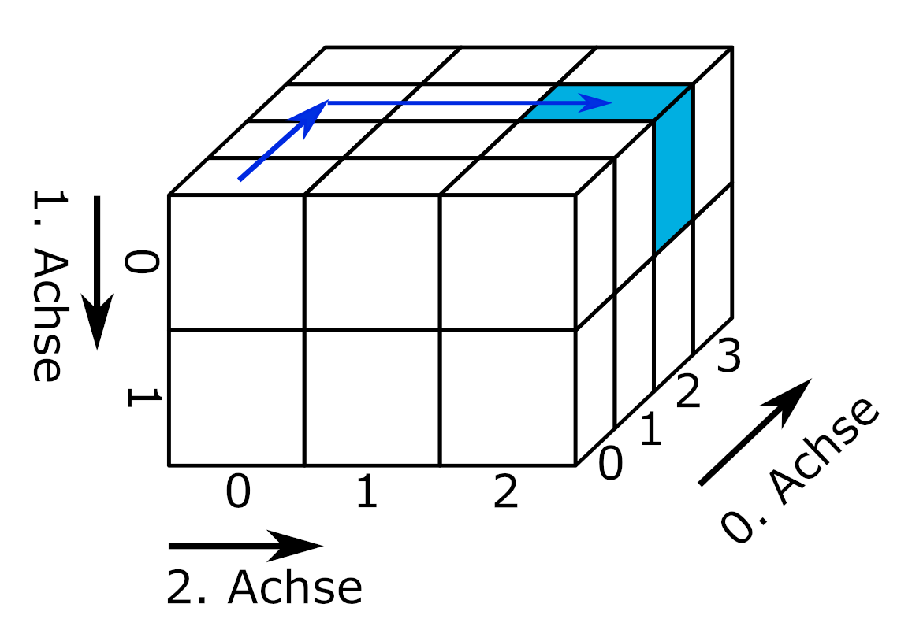
slicing von Marc Fehr ist lizensiert unter CC-BY-4.0 und abrufbar auf GitHub. Die Grafik wurde auf den gezeigten Teil beschnitten und die obenstehende Beschriftung entfernt. 2024
Für drei- und mehrdimensionale Datenstrukturen werden häufig spezialisierte Datenformate verwendet, die im Abschnitt Kapitel 7 behandelt werden. Dies hat unter anderem den Grund, dass so leichter verschiedene Datentypen verarbeitet und mit Metadaten (siehe Kapitel 2.4) dokumentiert werden können.
optional: Exkurs JSON https://docs.python.org/3/tutorial/inputoutput.html
Digitale Bilder liegen in Form eines dreidimensionalen Datensatzes vor. In Zeilen und Spalten liegen für jeden Pixel Farbwerte (Rot, Grün, Blau) und gegebenenfalls ein Alphawert vor (Rot, Grün, Blau, Alpha). Die Farbwerte liegen entweder im Bereich von 0 bis 1 oder von 0 bis 255 (8-Bit).
# Farbwerte für einen Pixel
[Rotwert, Grünwert, Blauwert]
# Eine Bildzeile mit drei Pixeln
[[Rotwert, Grünwert, Blauwert], [Rotwert, Grünwert, Blauwert], [Rotwert, Grünwert, Blauwert]]
# Ein Bild aus drei Zeilen und Spalten
[[[Rotwert, Grünwert, Blauwert], [Rotwert, Grünwert, Blauwert], [Rotwert, Grünwert, Blauwert]],
[[Rotwert, Grünwert, Blauwert], [Rotwert, Grünwert, Blauwert], [Rotwert, Grünwert, Blauwert]],
[[Rotwert, Grünwert, Blauwert], [Rotwert, Grünwert, Blauwert], [Rotwert, Grünwert, Blauwert]]]Bilddateien können mit der Funktion plt.imread() aus dem Modul matplotlib.pyplot eingelesen werden.
import matplotlib.pyplot as plt
logo = plt.imread(fname = '00-bilder/python-logo-and-wordmark-cc0-tm.png')
plt.imshow(logo)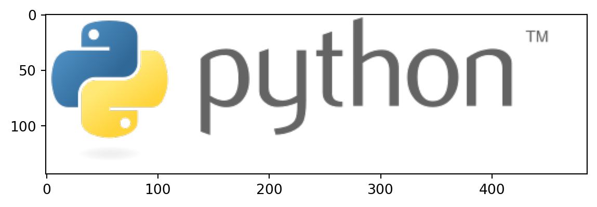
Python Logo von Python Software Foundation steht unter der GPLv3. Die Wort-Bild-Marke ist markenrechtlich geschützt: https://www.python.org/psf/trademarks/. Das Werk ist abrufbar auf wikimedia. 2008
Die Struktur des Datensatzes kann mit dem Attribut .shape abgerufen werden.
print(type(logo), "\n")
print(logo.shape)<class 'numpy.ndarray'>
(144, 486, 4)Die Daten wurden als NumPy.ndarray eingelesen. Das Logo hat 144 Zeilen, 486 Spalten und liegt im RGBA-Farbraum vor. Ein Ausschnitt der Daten sieht so aus:
print(logo[50:52, 50:52, : ])[[[0.21568628 0.44705883 0.63529414 1. ]
[0.21568628 0.44705883 0.63529414 1. ]]
[[0.21568628 0.44705883 0.63529414 1. ]
[0.21176471 0.44313726 0.6313726 1. ]]]Über den Index der dritten Dimension können die Farbkanäle Rot, Grün und Blau ausgewählt und mit der Funktion plt.imshow(cmap = 'Greys_r') einzeln dargestellt werden. Das Argument cmap = 'Greys_r' weist die Funktion an, die invertierte Grauskala benutzen. Dadurch werden hohe Farbwerte hell und niedrige Farbwerte dunkel dargestellt. Stellen Sie die Farbkanäle Rot, Grün und Blau des Pythonlogos einzeln mit der Funktion plt.imshow(cmap = 'Greys_r') dar.
kanal = ["Rotkanal", "Grünkanal", "Blaukanal"]
plt.figure(figsize = (9, 6))
for i in range(3):
plt.subplot(1, 4, i + 1)
plt.imshow(logo[ :, :, i], cmap = 'Greys_r')
plt.title(label = kanal[i])
plt.colorbar(shrink = 0.15)
plt.tight_layout()
plt.show()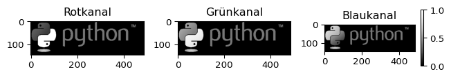
Möglicherweise wundern Sie sich, warum der Bildhintergrund in jedem Farbkanal schwarz ist. Die Ursache finden Sie im nächsten Tipp.
Der Bildhintergrund hat in allen Kanälen, auch im Alphakanal, den Farbwert 0. Dieser Teil des Bildes ist deshalb vollständig transparent und wird vom Hintergrund der Internetseite ausgefüllt. Der Bildhintergrund des Logos wirkt deshalb weiß.
# Alphakanal
plt.imshow(logo[ :, :, 3], cmap = 'Greys_r')
plt.title(label = 'Alphakanal')
plt.colorbar(shrink = 0.4)
plt.show()
# Die ersten zwei Zeilen und Spalten des Logos
print(logo[0:2, 0:2, : ])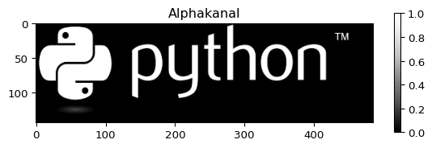
[[[0. 0. 0. 0.]
[0. 0. 0. 0.]]
[[0. 0. 0. 0.]
[0. 0. 0. 0.]]]Der Datentyp gibt an, wie die in einem Datensatz einhaltenen Werte von Python interpretiert werden sollen. Beispielsweise kann der Wert “1” ein Zeichen, eine Ganzzahl, einen Wahrheitswert, den Monat Januar oder die Ausprägung einer kategorialen Variablen repräsentieren. Python unterstützt als vielseitig einsetzbare Programmiersprache zahlreiche Datentypen, die den Kategorien: numerics, sequences, mappings, classes, instances and exceptions zugeordnet sind. Nähere Informationen dazu finden Sie in der Dokumentation.
![Dargestellt ist eine Kategorisierung der Standardtypen in Python. Die Kategorisierung ist nicht vollständig deckungsgleich zu den in der Dokumentation genannten Kategorien von Datentypen. Der Typ None für Nullwerte hat keine weitere Unterteilung. Die Kategorie Numbers unterteilt sich in Zahlenwerte (Ganzzahlen, boolsche Wahrheitswerte), reele Zahlen (floats) und komplexe Zahlen. Die Kategorie Sequences unterteilt sich in Unveränderliche (Strings, Tuple, Bytes) und Veränderliche (Listen, Byte Arrays). Die Kategorie Set Types unterteilt sich in Sets (Mengen) und Frozen Sets. Die Kategorie Mappings enthält Dictionaries (Wörterbücher). Die Kategorie Callable umfasst Funktionen, Methoden und Klassen. Außerdem gibt es die Kategorie Module.](00-bilder/python3-standard-type-hierarchy.png)
Python 3. The standard type hierarchy. von Максим Пе ist lizensiert unter CC BY SA 4.0 und abrufbar auf wikimedia. 2018
Durch Module werden weitere Datentypen hinzugefügt. In der Datenanalyse häufig verwendete Datentypen sind:
Zahlen: Ganzzahl, Fließkommazahlen
Wahrheitswerte
Zeichenketten
Datums- und Uhrzeitangaben
Kategorie (aus dem Modul Pandas)
Der Datentyp bestimmt zum einen den zulässigen Wertebereich einer Variablen. Beispielsweise sind 0 und 13 zulässige Ganzzahlen, aber keine gültigen Kodierungen des Monats. Zum anderen definiert der Datentyp, welche Operationen mit den Werten zulässig sind und wie diese von Python ausgeführt werden. Dies betrifft Operatoren und Funktionen. Python enthält Funktionen, um den Datentyp eines Werts zu bestimmen und ggf. umzuwandeln (siehe w-Python).
# Der Operator + bewirkt die Addition von Zahlen
print(1 + 13)
# Der Operator + bewirkt auch das Verketten von strings
print(str(1) + str(13))14
113Die Sortierfunktion arbeitet abhängig vom Datentyp.
# Liste von Monatskürzeln erstellen
dates = pd.Series([ '07.06.2000', '12.01.2000', '11.02.2000', '04.09.2000', '10.03.2000', '03.10.2000', '09.04.2000', '08.05.2000', '06.07.2000', '05.08.2000', '02.11.2000', '01.12.2000'])
dates = pd.to_datetime(dates, format = '%d.%m.%Y');
print(f"Eine unsortierte Liste von Monatskürzeln:\n{list(dates.dt.strftime('%b'))}")
print(f"\nDie Liste alphabetisch sortiert:\n{sorted(list(dates.dt.strftime('%b')))}")
print(f"\nDie Liste als datetime-Objekt sortiert:\n{list(dates.sort_values().dt.strftime('%b'))}")Eine unsortierte Liste von Monatskürzeln:
['Jun', 'Jan', 'Feb', 'Sep', 'Mar', 'Oct', 'Apr', 'May', 'Jul', 'Aug', 'Nov', 'Dec']
Die Liste alphabetisch sortiert:
['Apr', 'Aug', 'Dec', 'Feb', 'Jan', 'Jul', 'Jun', 'Mar', 'May', 'Nov', 'Oct', 'Sep']
Die Liste als datetime-Objekt sortiert:
['Jan', 'Feb', 'Mar', 'Apr', 'May', 'Jun', 'Jul', 'Aug', 'Sep', 'Oct', 'Nov', 'Dec']Beim Einlesen von Datensätzen ist es wichtig, die korrekte Erkennung der Datentypen zu kontrollieren bzw. aktiv zu steuern. Weitere Methoden für die formale Prüfung des Datentyps und für die Kontrolle des Wertebereichs werden in Kapitel 3 vorgestellt.
Ein besonderer Datentyp ist der zur Repräsentation fehlender Werte. In Python wird zwischen nicht existenten und nicht definierten Werten unterschieden.
Der sogenannte Nullwert in Python ist None, das zu den definierten Schlüsselwörtern in Python gehört.
print(type(None))<class 'NoneType'>None repräsentiert nicht existente Werte und Objekte. Leere (aber existente) Objekte gehören nicht zum Datentyp None.
leere_liste = []
leere_liste == NoneFalseNone kann Funktionen als Argument übergeben oder von diesen als Rückgabewert ausgegeben werden. Operationen sind mit None jedoch nicht möglich.
# Operationen mit None führen zu Fehlermeldungen
try:
print(None + 1)
except TypeError as error:
print("Der übergebene Wert führt zu der Fehlermeldung:\n", error)
else:
print(None + 1)Der übergebene Wert führt zu der Fehlermeldung:
unsupported operand type(s) for +: 'NoneType' and 'int'Eine Ausnahme ist die Umwandlung in eine Zeichenkette.
# Eine Ausnahme ist die Umwandlung in strings
a = None
print("\nprint(a) gibt den Nullwert zurück:\n", a, sep = "")
print("\nstr(a) gibt eine Zeichenkette zurück:")
str(a)
print(a) gibt den Nullwert zurück:
None
str(a) gibt eine Zeichenkette zurück:'None'Um mit fehlenden Werten innerhalb eines Datensatzes arbeiten zu können, gibt es den Wert NaN, der zur Klasse der Fließkommazahlen gehört. NaN steht für Not a Number und repräsentiert undefinierte oder nicht darstellbare Werte. Beispielsweise berechnet die Methode pd.diff() die Differenz jedes Werts zu seinem Vorgänger. Da der erste Wert keinen Vorgänger hat, wird NaN erzeugt.
my_series = pd.Series([1, 2, 4, 8])
my_series.diff()0 NaN
1 1.0
2 2.0
3 4.0
dtype: float64Anders als None ist NaN kein Standardschlüsselwort in Python. Der Wert NaN wird erzeugt mit float('nan') oder float('NaN'), die Groß- und Kleinschreibung spielt keine Rolle. NaN hat also den Datentyp Fließkommazahl. Die Module math und NumPy bieten mit math.nan und np.nan ebenfalls Funktionen, um NaN zu erzeugen.
print(type(float('NaN')))<class 'float'>Mit dem Wert ‘NaN’ können Operationen ausgeführt werden. Das Ergebnis ist immer NaN.
print(float('NaN') + 1)nanEinige Funktionen können mit NaN als Platzhalter für fehlende Werte umgehen.
# Python-Basis
print("sum():", sum([1, 2, float('NaN'), 4]), "\n")
print("max():", max([1, 2, float('NaN'), 4]), "\n")
print("any():", any([1, 2, float('NaN'), 4]), "\n")
# Pandas
daten_mit_nan = pd.Series([1, 2, float('NaN'), 4])
print(daten_mit_nan + 1)
print("\nSumme des Datensates:", daten_mit_nan.sum())sum(): nan
max(): 4
any(): True
0 2.0
1 3.0
2 NaN
3 5.0
dtype: float64
Summe des Datensates: 7.0Die logische Abfrage fehlender Werte unterscheidet sich für None und NaN.
bool_values = [None, float('NaN')]
for element in bool_values:
bool_value = bool(element)
print("Wahrheitswert von", element, "ist", bool_value)Wahrheitswert von None ist False
Wahrheitswert von nan ist TrueDies gilt auch für die Wertgleichheit.
for element in bool_values:
result = element == element
print("Wertgleichheit von", element, "ist", result)Wertgleichheit von None ist True
Wertgleichheit von nan ist FalseNone und NaN sind pythonspezifische Repräsentationen für nicht existente oder nicht definierte Werte. In der Praxis werden fehlende Werte in Datensätzen auf unterschiedliche Weise gekennzeichnet.
In Datensätzen übliche Werte sind:
kein Eintrag, beispielsweise in kommaseparierten Dateien eine leere Zeichenkette ""
definierte Zeichenfolge: NA in der Programmiersprache R, NULL in der Datenbanksprache SQL, . in der Statistik-Software Stata
(mehrere) manuell gewählte Zeichen oder Ziffern außerhalb des zulässigen Wertebereichs wie -1, -88, -99 (häufig bei Umfragedaten)
Die Art der Kennzeichnung ist jeweils mit Vor- und Nachteilen verbunden. Eine definierte Zeichenfolge für fehlende Werte hilft dabei, Lücken im Datensatz von Fehlern bei der Datenerfassung zu unterscheiden. Dazu ist eine definierte Zeichenfolge wie “NA” besser als eine leere Zeichenkette geeignet. Manuell gewählte Werte erlauben es, bei der automatischen Auswertung eines Datensatzes abhängig von der Situation ein bestimmtes Verhalten für jede Variable festzulegen (z. B. Unterscheidung von nicht zutreffend, Aussage verweigert, weiß nicht, Interview abgebrochen keine Antwort).
Die Identifizierung und ggf. Bereinigung fehlender Werte ist ein wichtiger Schritt beim Einlesen strukturierter Datensätze. Dabei hilft es, die gängigen Kennzeichnungen für fehlende Werte zu kennen und sich über die Konventionen des jeweiligen Dateiformats bzw. der jeweiligen Disziplin zu informieren. Dennoch ist manchmal ein gewisser Spürsinn unerlässlich. Geeignete Funktionen zur Identifizierung fehlender Werte werden in Kapitel 3 vorgestellt.
Metadaten sind beschreibende Informationen eines Datensatzes. Metadaten geben beispielsweise an:
welche Datentypen ein Datensatz enthält,
verwendete Kodierschemen, Skalen oder mimimal und maximal zulässige Werte,
die Bedingungen, unter denen die Daten erhoben wurden,
Herkunft der Daten,
Beziehungen zwischen Variablen und Datensätzen,
urheberrechtliche Informationen und Lizenzhinweise.
(vgl. The HDF Group Help Desk)
Spezialisierte Dateiformate wie netCDF oder HDF deklarieren Metadaten explizit in dafür vorgesehenen Feldern. Vielen Dateiformaten fehlt eine solche Funktion. Relevante Metadaten stehen deshalb häufig im Dateinamen, in Spaltenbeschriftungen, in zusätzlichen Tabellenblättern oder in separaten Dokumenten (die nicht immer zur Verfügung stehen).
Im Aufklapper ergänzen: Querverweis auf w-rechtliche Grundlagen Datenmanagement
Insbesondere vor dem Einlesen komplexer Datensätze sollten Begleitmaterialien, sofern vorhanden, studiert werden.
Hier Querverweis auf w-rechtliche Grundlagen Datenmanagement
Datensätze werden mit verschiedenen Zielstellungen angelegt, etwa dass eine bequeme Dateneingabe möglich ist. Dies führt aber häufig dazu, dass Datensätze für die skriptbasierte Datenanalyse zunächst aufwändig aufgeräumt werden müssen.
“Tidy datasets are all alike, but every messy dataset is messy in its own way.” (Wickham, Çetinkaya-Rundel, und Grolemund 2023, Kap. 5 Data tidying)
Tidy data ist ein System von Hadley Wickham, das dabei hilft, Datensätze in ein aufgeräumtes (tidy) Format zu bringen. Das Aufräumen von Datensätzen ist eine vorbereitende Tätigkeit mit dem Ziel, während der eigentlichen Datenanlyse möglichst wenig Zeit für das Umformen von Datenstrukturen aufwenden zu müssen. Dadurch soll ein größerer Fokus auf den inhaltlichen Aspekt der Datenanalyse ermöglicht werden. (Wickham, Çetinkaya-Rundel, und Grolemund 2023, Kap. 5 Data tidying)
“Das System tidy data besteht aus drei Regeln:
Jede Variable ist eine Spalte; jede Spalte ist eine Variabe.
Jede Beobachtung ist eine Zeile; jede Zeile ist eine Beobachtung.
Jeder Wert ist eine Zelle; jede Zelle ist ein einzelner Wert.”
(Wickham, Çetinkaya-Rundel, und Grolemund 2023, Kap. 5 Data tidying, eigene Übersetzung)
Tidy data bezieht sich auf zweidimensionale Datensätze, bietet aber auch darüber hinaus eine Orientierung, um unterschiedlich aufgebaute Datensätze strukturiert einzulesen und für die Datenanalyse vorzubereiten. Tidy data ist kein strikt zu befolgendes Regelwerk. Es ist völlig in Ordnung, eine andere Struktur zu wählen, wenn die Datenanalyse damit leichter durchgeführt werden kann.
Die Module NumPy und Pandas erlauben ein effizientes Arbeiten mit Datensätzen. Insbesondere das Lesen- und Schreiben von Dateien und die Verwaltung von Datentypen ist erheblich einfacher als mit der Python-Basis. Außerdem sind die vektorisierten Operationen vielfach schneller als Operationen mit Python. Das Modul Pandas basiert auf NumPy. In den folgenden Abschnitten werden beide Module behandelt.
Eine kurze Übersicht der Vor- und Nachteile:
NumPy: n-dimensionale Array-Struktur mit Unterstützung der am häufigsten verwendeten Datentypen sowie zahlreicher numerischer Formate für spezialisierte wissenschaftliche Berechnungen (siehe Dokumentation). Ein Array kann immer nur einen Datentyp haben und die Größe von Arrays ist unveränderlich. Dafür werden Operationen etwas schneller als in der DataFrame-Struktur von Pandas ausgeführt.
Querverweis auf w-NumPy
Pandas: 2-dimensionale DataFrame-Struktur im long- und wide-Format. DataFrames können mehrere Datentypen enthalten und die Größe von DataFrames ist veränderlich. Unterstützung von alphanummerischen Spalten- und Indexbeschriftungen. Direktes Abrufen von Dateien aus dem Internet möglich.
Querverweis auf w-Pandas
Für beide Module haben sich diese Kürzel etabliert:
import numpy as np
import pandas as pd
# Deklarieren der Anzahl der Nachkommastellen
pd.set_option("display.precision", 2)Ob Sie mit NumPy oder mit Pandas arbeiten, hängt von dem vorliegenden Datensatz und persönlichen Präferenzen ab.
Das Paket Pandas erlaubt es, Daten aus verschiedenen Quellen wie CSV-Dateien oder Excel-Tabellen und mit unterschiedlichen Datentypen in einen DataFrame zu laden. Anschließend können diese mit wenigen Befehlen untersucht und umstrukturiert werden. Komplexe Operationen wie das Umformen von Datensätzen, das Gruppieren und Aggregieren von Daten sowie das Filtern und Sortieren sind effizient möglich.
Bis auf wenige Ausnahmen sind Pandas und NumPy zueinander kompatibel. Es spricht nichts dagegen, Ihre Daten mit Pandas vorzubereiten und anschließend mit NumPy auszuwerten.
NumPy unterstützt folgende Datentypen:
| Datentyp NumPy-Array | Datentyp in Python |
|---|---|
| int_ | int |
| double | float |
| cdouble | complex |
| bytes_ | bytes |
| str_ | str |
| bool_ | bool |
| datetime64 | datetime.datetime |
| timedelta64 | datetime.timedelta |
In den meisten Fällen verwendet das Modul Pandas die NumPy-Datentypen. Pandas führt aber auch einige zusätzliche Datentypen ein. Eine vollständige Liste finden Sie in der Pandas Dokumentation. Die wichtigsten zusätzlichen Datentypen sind:
Kategorie dtype = 'category'
Zeitzonenbewusstes Datumsformat dtype = 'datetime64[ns, US/Eastern]'
In den Werkzeugbausteinen NumPy und Pandas haben Sie die Funktionen zum Lesen und Schreiben von Dateien kennengelernt.
In NumPy können Dateien mit der Funktion np.loadtxt() gelesen und mit der Funktion np.savetxt() geschrieben werden.
np.loadtxt(fname = data.txt, delimiter = ";", skiprows= #Reihen)
np.savetxt(fname = dateipfad, X = daten, header = kommentar, fmt='%5.2f')
In Pandas werden Dateien mit einer Reihe spezialisierter Funktionen gelesen und geschrieben, die einem einheitlichen Schema folgen. Funktionen zum Lesen von Dateien werden in der Form pd.read_csv und Funktionen zum Schreiben in der Form pd.to_csv aufgerufen. Mit Pandas können auch Dateien aus dem Internet abgerufen werden pd.read_csv(URL).
| Format Type | Data Description | Reader | Writer |
|---|---|---|---|
| text | CSV | read_csv | to_csv |
| text | Fixed-Width Text File | read_fwf | NA |
| text | JSON | read_json | to_json |
| text | HTML | read_html | to_html |
| text | LaTeX | Styler.to_latex | NA |
| text | XML | read_xml | to_xml |
| text | Local clipboard | read_clipboard | to_clipboard |
| binary | MS Excel | read_excel | to_excel |
| binary | OpenDocument | read_excel | NA |
| binary | HDF5 Format | read_hdf | to_hdf |
| binary | Feather Format | read_feather | to_feather |
| binary | Parquet Format | read_parquet | to_parquet |
| binary | ORC Format | read_orc | to_orc |
| binary | Stata | read_stata | to_stata |
| binary | SAS | read_sas | NA |
| binary | SPSS | read_spss | NA |
| binary | Python Pickle Format | read_pickle | to_pickle |
| SQL | SQL | read_sql | to_sql |
Der Datentyp bestimmt, wie bereits ausgeführt, den zulässigen Wertebereich einer Variablen, zulässige Operationen und die Ausführung von Operatoren und Funktionen in Python. Die Module NumPy und Pandas bieten eine Reihe von Funktionen, um den Datentyp von Variablen zu kontrollieren und festzulegen.
Hinweis: Der Datentyp datetime wird in Kapitel 4 behandelt.
Mit NumPy kann der Datentyp eines Arrays beim Einlesen einer Datei mit dem Argument dtype festgelegt werden np.loadtxt(fname = data.txt, dtype = 'float'). Das Argument dtype akzeptiert die Angabe eines Datentyps, Schlüsselwörter oder Kürzel. Weiter Informationen erhalten Sie in der NumPy Dokumentation.
| Datentyp | Schlüsselwort | Kürzel | dtype |
|---|---|---|---|
| Fließkommazahl | float | f8 | float64 |
| Ganzzahl | int | i | int32 |
| Wahrheitswert | bool | ? | bool |
| Datum | datetime64 | M | datetime64 |
| Zeichenkette | str | U | U + Ziffer zur Angabe der benötigten Bytes |
Der Datentyp eines Arrays kann mit dem Attribut np.dtype bestimmt werden. Der Datentyp eines Objekts kann mit der Methode np.array = np.array.astype() geändert werden.
Folgende Datei ist Ihnen aus dem w-NumPy bekannt.
dateipfad = '01-daten/TC01.csv'
daten = np.loadtxt(dateipfad)Prüfen Sie den dtype der Datei und legen Sie eine Kopie des Objekts mit Datentyp Ganzzahl an. Wie kann überprüft werden, ob bei der Umwandlung in Ganzzahlen Nachkommastellen abgeschnitten wurden?
# Ausgabe des Datentyps
print(daten.dtype)
# Umwandlung in Ganzzahl
daten_int = daten.astype('int')
# Prüfen auf Datenverlust
prüfsumme = daten - daten_int
print(f"Differenz daten - daten_int: {prüfsumme.sum()}")float64
Differenz daten - daten_int: 664.0Das Modul Pandas ist auf den Umgang mit unterschiedlichen Datentypen spezialisiert. Den Funktionen zum Einlesen von Daten kann mit dem Argument dtype der Datentyp übergeben werden. Für mehrere Spalten ist dies in Form eines Dictionaries in der Form {'Spaltenname': 'dtype'} möglich.
Das Atrribut zur Ausgabe des Datentyps heißt passenderweise pd.DataFrame.dtypes (angefügtes s beachten). Der Datentyp eines Pandas-Datenobjekts kann analog zu NumPy mit pd.Series = pd.Series.astype() geändert werden.
In einer Gruppe von 60 Meerschweinchen (1. Spalte ohne Beschriftung) wurde die Länge der zahnbildenden Zellen (Odontoblasten) in Micron gemessen (len). Den Tieren wurde zuvor Vitamin C in Form von Ascorbinsäure (VC) oder Orangensaft (VC) verabreicht (supp). Die Meerschweinchen erhielten Dosen von 0.5, 1 oder 2 Milligramm Vitamin C pro Tag (dose). Die Messdaten sind in der Datei ToothGrowth.csv gespeichert (Crampton 1947.)
Crampton, E. W. 1947. „THE GROWTH OF THE ODONTOBLASTS OF THE INCISOR TOOTH AS A CRITERION OF THE VITAMIN C INTAKE OF THE GUINEA PIG“. The Journal of Nutrition 33 (5): 491–504. https://doi.org/10.1093/jn/33.5.491
Lesen Sie die Datei wie folgt ein:
Die Spaltenbeschriftung der 1. Spalte soll mit der Beschriftung ‘ID’ ersetzt werden (ohne Anführungszeichen).
Die Spalten len und dose sollen mit geeigneten numerischen Datentypen, die Spalte supp als Kategorie eingelesen werden.
dateipfad = "01-daten/ToothGrowth.csv"
meerschweinchen = pd.read_csv(filepath_or_buffer = dateipfad, sep = ',', header = 0, \
names = ['ID', 'len', 'supp', 'dose'], dtype = {'ID': 'int', 'len': 'float', 'dose': 'float', 'supp': 'category'})
# Ausgabe jedes sechsten Werts
meerschweinchen.iloc[meerschweinchen.index % 6 == 0]| ID | len | supp | dose | |
|---|---|---|---|---|
| 0 | 1 | 4.2 | VC | 0.5 |
| 6 | 7 | 11.2 | VC | 0.5 |
| 12 | 13 | 15.2 | VC | 1.0 |
| 18 | 19 | 18.8 | VC | 1.0 |
| 24 | 25 | 26.4 | VC | 2.0 |
| 30 | 31 | 15.2 | OJ | 0.5 |
| 36 | 37 | 8.2 | OJ | 0.5 |
| 42 | 43 | 23.6 | OJ | 1.0 |
| 48 | 49 | 14.5 | OJ | 1.0 |
| 54 | 55 | 24.8 | OJ | 2.0 |
print(meerschweinchen.dtypes)ID int64
len float64
supp category
dose float64
dtype: objectPandas bietet einige praktische Funktionen, um den Aufbau eines Datensatzes zu beschreiben.
Das Attribut .columns gibt die Spaltenbeschriftungen als Liste zurück. Ebenfalls ist darüber ein Schreibzugriff möglich.
print(meerschweinchen.columns)
meerschweinchen.columns = ['ID', 'Länge', 'Verabreichung', 'Dosis']
print(meerschweinchen.columns)Index(['ID', 'len', 'supp', 'dose'], dtype='object')
Index(['ID', 'Länge', 'Verabreichung', 'Dosis'], dtype='object')Die Methode pd.DataFrame.describe() erzeugt eine beschreibende Statistik für einen DataFrame. Standardmäßig werden alle numerischen Spalten berücksichtigt. Mit dem Argument include können die zu berücksichtigenden Spalten vorgegeben werden. include = all berücksichtigt alle Spalten, was nicht unbedingt sinnvoll ist. Alternativ kann eine Liste zu berücksichtigender Datentypen übergeben werden. Das Argument exclude schließt auf die gleiche Weise Datentypen von der Ausgabe aus.
print(meerschweinchen.describe(), "\n")
print(meerschweinchen.describe(include = 'all'), "\n")
print(meerschweinchen.describe(include = ['float']), "\n") ID Länge Dosis
count 60.00 60.00 60.00
mean 30.50 18.81 1.17
std 17.46 7.65 0.63
min 1.00 4.20 0.50
25% 15.75 13.07 0.50
50% 30.50 19.25 1.00
75% 45.25 25.27 2.00
max 60.00 33.90 2.00
ID Länge Verabreichung Dosis
count 60.00 60.00 60 60.00
unique NaN NaN 2 NaN
top NaN NaN OJ NaN
freq NaN NaN 30 NaN
mean 30.50 18.81 NaN 1.17
std 17.46 7.65 NaN 0.63
min 1.00 4.20 NaN 0.50
25% 15.75 13.07 NaN 0.50
50% 30.50 19.25 NaN 1.00
75% 45.25 25.27 NaN 2.00
max 60.00 33.90 NaN 2.00
Länge Dosis
count 60.00 60.00
mean 18.81 1.17
std 7.65 0.63
min 4.20 0.50
25% 13.07 0.50
50% 19.25 1.00
75% 25.27 2.00
max 33.90 2.00
Die Methode pd.DataFrame.count() zählt alle vorhandenen Werte in jeder Spalte oder mit pd.DataFrame.count(axis = 'columns') in jeder Zeile.
meerschweinchen.count(axis = 'rows') # der Standardwert von axis ist 'rows'ID 60
Länge 60
Verabreichung 60
Dosis 60
dtype: int64Die Methode pd.DataFrame.info() erzeugt eine Beschreibung des Datensatzes.
meerschweinchen.info()<class 'pandas.core.frame.DataFrame'>
RangeIndex: 60 entries, 0 to 59
Data columns (total 4 columns):
# Column Non-Null Count Dtype
--- ------ -------------- -----
0 ID 60 non-null int64
1 Länge 60 non-null float64
2 Verabreichung 60 non-null category
3 Dosis 60 non-null float64
dtypes: category(1), float64(2), int64(1)
memory usage: 1.7 KBDie Methode pd.unique() listet alle einzigartigen Werte auf.
meerschweinchen['Dosis'].unique()array([0.5, 1. , 2. ])Pandas bietet einige praktische Funktionen, um eine eingelesene Datei zu kontrollieren. Machen Sie sich die Verwendung von pd.dtypes oder pd.DataFrame.info() zur Angewohnheit.
Das britische Energieministerium veröffentlicht Daten zu den Industriestrompreisen in den Mitgliedsändern der Internationalen Energieagentur.
Lesen Sie Tabellenblatt “5.3.1 (excl. taxes)” aus der Excel-Datei ‘skript/01-daten/table_531.xlsx’ mit Pandas ein. Schauen Sie in der Dokumentation der Funktion pd.read_excel nach, wie Sie das korrekte Tabellenblatt auswählen können. Stellen Sie sicher, dass alle Spalten mit einem numerischen Datentyp eingelesen werden.
Department for Energy Security & Net Zero. 2024. Energy Prices International Comparisons. Industrial electricity prices in the IEA. https://www.gov.uk/government/uploads/system/uploads/attachment_data/file/670121/table_531.xls
Überspringen der führenden Zeilen mit dem Argument header = 8. Auswahl des Tabellenblatts mit sheet_name = "5.3.1 (excl. taxes)" und Kontrolle der erkannten Datentypen mit taxes.dtypes
dateipfad = '01-daten/table_531.xlsx'
taxes = pd.read_excel(io = dateipfad, sheet_name = "5.3.1 (excl. taxes)", \
header = 8)
taxes.dtypesYear int64
Austria float64
Belgium float64
Denmark float64
Finland float64
France float64
Germany float64
Greece float64
Ireland float64
Italy float64
Luxembourg float64
Netherlands float64
Portugal float64
Spain float64
Sweden float64
United Kingdom float64
Australia float64
Canada float64
Czech Republic float64
Hungary float64
Japan float64
Korea float64
New Zealand float64
Norway float64
Poland float64
Slovakia float64
Switzerland float64
Republic of Türkiye object
USA float64
IEA median float64
UK relative to IEA median% float64
UK relative to IEA rank int64
UK relative to G7 rank int64
dtype: objectWerte in Spalte ‘Republic of Türkiye’ mit pd.unique() ansehen.
taxes['Republic of Türkiye'].unique()array(['..', 2.0436081749999997, 3.3248584439999993, 3.2947581129644483,
3.5628243387317866, 3.998334312, 3.838962582401693,
4.2138469457789975, 3.775503630575527, 3.2804905218375238,
3.783413840344277, 4.139259596071514, 4.196890742949158,
4.658509330911754, 5.552842625063031, 4.316920402166109,
4.1586205264300675, 4.765321921741988, 4.060617948410105,
3.9191433658651307, 4.223710389549368, 4.481407237836746,
4.629981488840797, 5.2657882806931235, 5.109009847145703,
4.585007793872617, 4.769921255774284, 4.419433670846949,
4.428906151745361, 6.171573537217762, 7.192920543071899,
7.962417550086158, 7.035941949054445, 7.622058781522502,
7.644892388451444, 6.47006818181818, 5.968380462724936,
6.379514692256784, 5.537541821623266, 5.248709303933227,
6.9100519994521274, 6.670900808798327, 5.864171132090749,
13.928251887312259, 11.123594768114717], dtype=object)Zeichenkette ‘..’ entfernen und Datentyp mit Methode pd.astype('float64') ändern.
Variante 1: als fehlenden Wert beim Einlesen deklarieren.
Variante 2: Nach dem Einlesen Indexposition bestimmen und Wert ersetzen. Das verkettete Slicing df["col"][row_indexer] = value wird mit der Pandas Version 3.0 nicht mehr unterstützt und gibt deshalb eine Fehlermeldung aus. Künftig ist folgende Syntax zu verwenden: df.loc[row_indexer, "col"] = value.
# Variante 1: '..' als fehlenden Wert deklarieren
# taxes = pd.read_excel(io = dateipfad, sheet_name = "5.3.1 (excl. taxes)", \
# header = 8, na_values = ['..'])
# Variante 2: Index des Werts bestimmen und mit np.nan überschreiben
indexposition = taxes['Republic of Türkiye'] == '..'
taxes.loc[indexposition, 'Republic of Türkiye'] = np.nan
taxes['Republic of Türkiye'] = taxes['Republic of Türkiye'].astype('float64')
taxes.dtypesYear int64
Austria float64
Belgium float64
Denmark float64
Finland float64
France float64
Germany float64
Greece float64
Ireland float64
Italy float64
Luxembourg float64
Netherlands float64
Portugal float64
Spain float64
Sweden float64
United Kingdom float64
Australia float64
Canada float64
Czech Republic float64
Hungary float64
Japan float64
Korea float64
New Zealand float64
Norway float64
Poland float64
Slovakia float64
Switzerland float64
Republic of Türkiye float64
USA float64
IEA median float64
UK relative to IEA median% float64
UK relative to IEA rank int64
UK relative to G7 rank int64
dtype: objectEine unerwartet als string oder object eingelesene Spalte weist häufig auf fehlende Werte hin, die durch Sonderzeichen gekennzeichnet sind. Die Module NumPy und Pandas bieten Funktionen, um fehlende Werte bereits beim Einlesen zu erkennen und umzuwandeln.
Hinweis: Maskierte NumPy-Arrays werden in Kapitel 6 behandelt.
Die NumPy-Funktion np.loadtxt() wird verwendet, um vollständige Datensätze einzulesen. Fehlende Werte im Datensatz können problematisch sein, da diese entweder zu Fehlermeldungen bezüglich des Datentyps führen oder übersprungen werden, sodass das NumPy-Array kürzer als der eingelesene Datensatz ist. Da NumPy-Arrays immer nur einen Datentyp und eine feste Länge haben, kann das bei der Durchführung von Operationen mit mehreren Arrays zu Fehlern führen.
Folgende Datei ist Ihnen aus dem w-NumPy bekannt.
dateipfad = '01-daten/TC01.csv'
daten_ohne_fehlende_werte = np.loadtxt(dateipfad)
print("Daten:", daten_ohne_fehlende_werte)
print("Struktur:", daten_ohne_fehlende_werte.shape, "dtype:", daten_ohne_fehlende_werte.dtype)Daten: [20.1 20.1 20.1 ... 24.3 24.2 24.2]
Struktur: (1513,) dtype: float64Angenommen, Sie haben eine zweite Messung durchgeführt und möchten die Differenz beider Datensätze berechnen. In der zweiten Messung haben Sensorfehler zu fehlenden Werten geführt, die mit -- markiert sind. Die Funktion np.loadtxt() kann jedoch mit fehlenden Werten nicht umgehen und gibt eine Fehlermeldung zurück.
dateipfad = '01-daten/TC01_double_hyphen.csv'
try:
daten_double_hypen = np.loadtxt(dateipfad)
except ValueError as error:
print("Die Eingabe führt zu der Fehlermeldung:\n", error)
else:
print("Daten mit fehlenden Werten '--':", daten_double_hypen, "dtype:", daten_double_hypen.dtype) Die Eingabe führt zu der Fehlermeldung:
could not convert string '--' to float64 at row 1, column 1.Um Datensätze mit fehlenden Werten einzulesen, wird die Funktion np.genfromtxt(fname, delimiter = None, missing_values = None, filling_values = None) verwendet. Dieses durchläuft den Datensatz fname in zwei Schleifen, weshalb die Funktion langsamer als np.loadtxt() ist. Die erste Schleife teilt den Datensatz zeilenweise am optional übergebenen Trennzeichen delimiter in eine Zeichenkette auf. Die zweite Schleife konvertiert jede Zeichenkette in den passenden Datentyp. Mit den optionalen Argumenten missing_values und filling_values können der Funktion Zeichenfolgen übergeben werden, mit der fehlende Werte markiert sind bzw. ersetzt werden sollen. (NumPy Dokumentation)
dateipfad = '01-daten/TC01_double_hyphen.csv'
daten_double_hypen = np.genfromtxt(dateipfad, missing_values = '--', filling_values = np.nan)
print("\nDaten mit fehlenden Werten '--':", daten_double_hypen)
print("Struktur:", daten_double_hypen.shape, "dtype:", daten_double_hypen.dtype)
Daten mit fehlenden Werten '--': [20.1 nan 20.1 ... 24.3 24.2 24.2]
Struktur: (1513,) dtype: float64Durch die Umwandlung fehlender Werte in nan, sind Operationen mit gleichlangen NumPy-Arrays möglich.
daten_differenz = daten_ohne_fehlende_werte - daten_double_hypen
print(daten_differenz)[ 0. nan 0. ... 0. 0. 0.]Die Funktion np.genfromtxt() kann beliebige Zeichenketten als fehlenden Wert verarbeiten. Lediglich leere Zellen können problematisch sein, da deren Inhalt '\n' als Zeilentrenner verarbeitet wird.
Enthält eine Datei leere Zellen, können diese nicht eingelesen werden, da diese automatisch übersprungen werden.
# Datei ohne Markierung fehlender Werte
dateipfad = '01-daten/TC01_empty_lines.csv'
daten_empty_lines = np.genfromtxt(dateipfad, missing_values = '', filling_values = np.nan)
print("\nDaten mit fehlenden Werten '':", daten_empty_lines)
print("Struktur:", daten_empty_lines.shape, "dtype:", daten_empty_lines.dtype)
Daten mit fehlenden Werten '': [20.1 20.1 20.1 ... 24.3 24.2 24.2]
Struktur: (1511,) dtype: float64Das Array ist zwei Elemente kürzer. Die Subtraktion von einem längeren NumPy-Array scheitert mit einer Fehlermeldung.
try:
result = daten_ohne_fehlende_werte - daten_empty_lines
except ValueError as error:
print("Die Eingabe führt zu der Fehlermeldung:\n", error)
else:
print(result)Die Eingabe führt zu der Fehlermeldung:
operands could not be broadcast together with shapes (1513,) (1511,) In diesem Fall muss auf die Stringbearbeitung aus der Python-Basis zurückgegriffen werden. Die bearbeitete Liste kann wie gewohnt mit np.genfromtxt() eingelesen werden.
# Einlesen über Datenobjekt
datenobjekt_empty_lines = open(dateipfad, 'r', encoding = 'utf-8')
daten_empty_lines = datenobjekt_empty_lines.readlines()
datenobjekt_empty_lines.close()
print("Das ausgelesene Datenobjekt (Ausschnitt):\n", daten_empty_lines[0:10])
# Stringbearbeitung mit replace('\n', '')
for i in range(len(daten_empty_lines)):
if daten_empty_lines[i] == '\n':
daten_empty_lines[i] = 'platzhalter'
else:
daten_empty_lines[i] = daten_empty_lines[i].replace('\n', '')
print("\nNach der Stringbearbeitung (Ausschnitt):\n", daten_empty_lines[0:10])
# Einlesen mit np.genfromtxt
daten_empty_lines = np.genfromtxt(daten_empty_lines, missing_values = 'platzhalter', filling_values = np.nan)
print("\nDaten mit fehlenden Werten '':", daten_empty_lines)
print("Struktur:", daten_empty_lines.shape, "dtype:", daten_empty_lines.dtype)Das ausgelesene Datenobjekt (Ausschnitt):
['# Temperatur in C\n', '20.1\n', '\n', '20.1\n', '20.1\n', '20.1\n', '\n', '20.1\n', '20.1\n', '20.1\n']
Nach der Stringbearbeitung (Ausschnitt):
['# Temperatur in C', '20.1', 'platzhalter', '20.1', '20.1', '20.1', 'platzhalter', '20.1', '20.1', '20.1']
Daten mit fehlenden Werten '': [20.1 nan 20.1 ... 24.3 24.2 24.2]
Struktur: (1513,) dtype: float64Besonders bei Dateien mit mehreren Spalten führen leere Zellen schnell zu Fehlern. Hier ist es erforderlich, den Zeichentrenner mit dem Argument delimiter zu spezifizieren. Aus der Dokumentation:
“When spaces are used as delimiters, or when no delimiter has been given as input, there should not be any missing data between two fields.” (NumPy Dokumentation)
Ohne Spezifikation des Arguments delimiter wird nur eine Spalte eingelesen, die ausschließlich np.nan enthält.
# ohne Spezifikation von delimiter
dateipfad = '01-daten/TC01_missing_values_multi_column.csv'
daten_empty_lines2 = np.genfromtxt(dateipfad, missing_values = '', filling_values = np.nan, ndmin = 2)
print("Struktur:", daten_empty_lines2.shape, "dtype:", daten_empty_lines2.dtype)
print("Die ersten drei Zeilen:\n", daten_empty_lines2[0:3])Struktur: (1513, 1) dtype: float64
Die ersten drei Zeilen:
[[nan]
[nan]
[nan]]Wird das Argument delimiter = ',' übergeben, wird die Datei korrekt eingelesen.
# mit Spezifikation von delimiter
daten_empty_lines2 = np.genfromtxt(dateipfad, delimiter = ',', missing_values = '', filling_values = np.nan, ndmin = 2)
print("Struktur:", daten_empty_lines2.shape, "dtype:", daten_empty_lines2.dtype)
print("\nDaten mit fehlenden Werten '':\n", daten_empty_lines2)Struktur: (1513, 2) dtype: float64
Daten mit fehlenden Werten '':
[[20.1 20.1]
[ nan nan]
[20.1 20.1]
...
[24.3 24.3]
[24.2 24.2]
[24.2 24.2]]Das Modul NumPy bietet Funktionen, um mit fehlenden Werten zu arbeiten.
np.nan erzeugt einen fehlenden Wert.
np.isnan() prüft auf einen fehlenden Wert und gibt einen Wahrheitswert bzw. ein NumPy-Array mit dtype bool zurück.
np.nonzero(np.isnan(array)) gibt ein Tuple zurück, das ein Array mit den Indexpositionen der Elemente mit dem Wert ‘nan’ enthält. Auf das Array kann mit np.nonzero(np.isnan(array))[0] zugegriffen werden. Je nach Situation kann die Umwandlung in eine Liste nützlich sein np.nonzero(np.isnan(array))[0].tolist().
Eine ähnliche Funktion ist np.argwhere(np.isnan(array)), deren Ausgabe aber nicht für das Slicing mehrdimensionaler Arrays geeignet ist (siehe folgendes Beispiel).
Eine andere Funktion, um die Indexposition eines Werts zu bestimmen, ist die Funktion np.argwhere(). Der Aufruf der Funktion np.argwhere(np.isnan(array)) gibt ein NumPy-Array mit den Indexposition Elemente mit dem Wert nan zurück.
array = np.array([[1, np.nan, np.nan], [4, 5, np.nan]])
print(array)
np.argwhere(np.isnan(array))[[ 1. nan nan]
[ 4. 5. nan]]array([[0, 1],
[0, 2],
[1, 2]])Das mit np.argwhere() erzeugte Array ist aber nicht geeignet, um Arraybereiche auszuwählen.
try:
array[np.argwhere(np.isnan(array))]
except IndexError as error:
print("Die Eingabe führt zu der Fehlermeldung:\n", error)
else:
print(array[np.argwhere(np.isnan(array))]) Die Eingabe führt zu der Fehlermeldung:
index 2 is out of bounds for axis 0 with size 2Zum Vergleich mit np.nonzero()
try:
array[np.nonzero(np.isnan(array))]
except IndexError as error:
print("Die Eingabe führt zu der Fehlermeldung:\n", error)
else:
print(array[np.nonzero(np.isnan(array))]) [nan nan nan]Die Auswahl von Array-Bereichen mit np.argwhere() funktioniert für eindimensionale Arrays.
array = np.array([1, np.nan, np.nan, 4, 5])
try:
array[np.argwhere(np.isnan(array))]
except IndexError as error:
print("Die Eingabe führt zu der Fehlermeldung:\n", error)
else:
print(array[np.argwhere(np.isnan(array))]) [[nan]
[nan]]nan_to_num(x = array, nan = 0.0) ersetzt im Array x nan durch den Wert 0.0 oder durch den im Argument nan übergebenen Wert. (Hinweis: nan_to_num() ersetzt standardmäßig auch np.inf durch große positive sowie -np.inf durch große negative Zahlen.)Die Ersetzung eines bestimmten Werts ist auch durch die Auswahl bestimmter Array-Bereiche durch einen logischen Vektor möglich.
a = np.array([1, 2, 3, np.nan, 5, 6, np.nan])
b = np.isnan(a)
print(b)
a[b] = 0
print(a)[False False False True False False True]
[1. 2. 3. 0. 5. 6. 0.]Dabei können mehrere Bedingungen mit der Funktion np.logical_or(x1, x2) als logisches ODER kombiniert werden.
a = np.array([1, 2, 3, np.nan, 5, 6, np.nan])
bedingung1 = np.isnan(a)
bedingung2 = a >= 5
bedingung = np.logical_or(bedingung1, bedingung2)
a[bedingung] = 0
print(a)[1. 2. 3. 0. 0. 0. 0.]Auch ein logisches UND ist möglich (aber in Verbindung mit np.nan nicht sinnvoll). Der Operator * bewirkt das gleiche wie der logische Operator and oder die Funktion np.logical_and(x1, x2).
a = np.array([1, 2, 3, np.nan, 5, 6, np.nan])
bedingung1 = a < 4
bedingung2 = a >= 1
bedingung = bedingung1 * bedingung2
a[bedingung] = 0
print(a)[ 0. 0. 0. nan 5. 6. nan]np.delete(arr = array, obj) gibt ein neues (kürzeres) Array ohne die im Parameter obj spezifizierten Array-Bereiche zurück. Alle Elemente mit dem Wert nan werden so gelöscht: np.delete(array, obj = np.nonzero(np.isnan(array)))NumPy wandelt None nicht automatisch in nan um. NumPy kann den Datentyp des Objekts deshalb nicht bestimmen und gibt dtype=object aus:
np_array_with_none = np.array([1, 2, None, 4])
print(np_array_with_none, np_array_with_none.dtype)[1 2 None 4] objectAufgabe: Wie kann im Array np_array_with_none None durch np.nan ersetzt werden?
Eine logische Abfrage von None ist möglich. Auf diese Weise kann ein logisches Array erzeugt werden, das zur Auswahl der Indexpositionen verwendet wird, deren Werte ersetzt werden sollen.
np_array_with_none = np.array([1, 2, None, 4])
print(np_array_with_none)
np_array_with_nan = np_array_with_none.copy()
print(f"\nArray mit logischer Abfrage von None:\n{np_array_with_none == None}")
np_array_with_nan[np_array_with_none == None] = np.nan
print(f"\nArray mit None ersetzt durch nan:\n{np_array_with_nan, np_array_with_nan.dtype}")[1 2 None 4]
Array mit logischer Abfrage von None:
[False False True False]
Array mit None ersetzt durch nan:
(array([1, 2, nan, 4], dtype=object), dtype('O'))
Operationen mit nan ergeben immer nan. Deshalb gibt es in NumPy viele Funktionen, die nan automatisch ignorieren bzw. durch einen geeigneten Wert ersetzen. Diese sind bereits am Funktionsnamen erkennbar. Beispielsweise liefern np.nansum() und np.nancumsum() die Summe bzw. die kumulierte Summe eines Arrays. In der kumulierten Summe werden nan durch das laufende Ergebnis ersetzt. Eine vollständige Liste der NumPy-Funktionen finden Sie in der Dokumentation.
print(f"Array mit nan:\n{np_array_with_nan}\n")
print(f"Summe des Arrays:\n{np.sum(np_array_with_nan)}\n")
print(f"nan-Summe des Arrays:\n{np.nansum(np_array_with_nan)}\n")
print(f"kumulierte Summe des Arrays:\n{np.cumsum(np_array_with_nan)}\n")
print(f"kumulierte nan-Summe des Arrays:\n{np.nancumsum(np_array_with_nan)}\n")Array mit nan:
[1 2 nan 4]
Summe des Arrays:
nan
nan-Summe des Arrays:
7
kumulierte Summe des Arrays:
[1 3 nan nan]
kumulierte nan-Summe des Arrays:
[1 3 3 7]
Die Pandas-Funktionen zum Lesen von Dateien können mit fehlenden Werten umgehen. Standardmäßig werden folgende Werte als fehlende Werte erkannt:
['-1.#IND', '1.#QNAN', '1.#IND', '-1.#QNAN', '#N/A N/A', '#N/A', 'N/A', 'n/a', 'NA', '<NA>', '#NA', 'NULL', 'null', 'NaN', '-NaN', 'nan', '-nan', 'None', '']
Weitere Werte können mit dem Argument na_values = [] als fehlende Werte definiert werden. Mit dem Argument keep_default_na = False kann festgelegt werden, dass ausschließlich die in na_values = [] übergebenen Werte als fehlende Werte interpretiert werden sollen. Standardmäßig werden mit dem Argument na_filter = True auch leere Zellen als NA eingelesen. Vollständig leere Zeilen werden jedoch standardmäßig übersprungen. Dies kann mit dem Argument skip_blank_lines = False geändert werden. (Pandas Dokumentation)
dateipfad = '01-daten/TC01_double_hyphen.csv'
try:
daten_double_hypen = pd.read_csv(dateipfad, na_values = ['--'])
except ValueError as error:
print("Die Eingabe führt zu der Fehlermeldung:\n", error)
else:
print("Daten mit fehlenden Werten '--':\n", daten_double_hypen, daten_double_hypen.shape) Daten mit fehlenden Werten '--':
# Temperatur in C
0 20.1
1 NaN
2 20.1
3 20.1
4 20.1
... ...
1508 24.3
1509 24.3
1510 24.3
1511 24.2
1512 24.2
[1513 rows x 1 columns] (1513, 1)Mit dem Argument skip_blank_lines = False werden leere Zeilen ebenfalls eingelesen.
dateipfad = '01-daten/TC01_empty_lines.csv'
try:
daten_empty_lines = pd.read_csv(dateipfad, skip_blank_lines = False)
except ValueError as error:
print("Die Eingabe führt zu der Fehlermeldung:\n", error)
else:
print("Daten mit fehlenden Werten '':\n", daten_empty_lines, daten_empty_lines.shape) Daten mit fehlenden Werten '':
# Temperatur in C
0 20.1
1 NaN
2 20.1
3 20.1
4 20.1
... ...
1508 24.3
1509 24.3
1510 24.3
1511 24.2
1512 24.2
[1513 rows x 1 columns] (1513, 1)Pandas verwendet abhängig vom Datentyp verschiedene Werte zur Kennzeichnung fehlender Werte.
numpy.nan für NumPy-Datentypen. Hierbei wird der Datentyp automatisch in np.float64 oder object konvertiert.
pd.NA für Zeichenketten und Ganzzahlen. Der Datentyp bleibt erhalten.
Einlesen der Datei TC01_empty_lines.csv als string:
dateipfad = '01-daten/TC01_empty_lines.csv'
try:
daten_empty_lines = pd.read_csv(dateipfad, skip_blank_lines = False, dtype = 'string')
except ValueError as error:
print("Die Eingabe führt zu der Fehlermeldung:\n", error)
else:
print("Daten mit fehlenden Werten '':\n", daten_empty_lines, daten_empty_lines.shape) Daten mit fehlenden Werten '':
# Temperatur in C
0 20.1
1 <NA>
2 20.1
3 20.1
4 20.1
... ...
1508 24.3
1509 24.3
1510 24.3
1511 24.2
1512 24.2
[1513 rows x 1 columns] (1513, 1)NA kann zwar auch als fehlender Wert für Gleitkommazahlen und andere NumPy Datentypen verwendet werden. Allerdings wird dafür ein Pandas-Datentyp benötigt (siehe das folgende Beispiel).
Eine pd.Series mit np.nan wird automatisch in dtype: float64 umgewandelt:
try:
test = pd.Series([1, 2, np.nan])
except TypeError as error:
print("Die Eingabe führt zu der Fehlermeldung:\n", error)
else:
print(test) 0 1.0
1 2.0
2 NaN
dtype: float64Eine pd.Series mit pd.NA wird als dtype: object eingelesen:
try:
test = pd.Series([1, 2, pd.NA])
except TypeError as error:
print("Die Eingabe führt zu der Fehlermeldung:\n", error)
else:
print(test) 0 1
1 2
2 <NA>
dtype: objectDer dtype kann für eine Series mit pd.NA festgelegt werden:
try:
test = pd.Series([1, 2, pd.NA], dtype = 'Int32')
except TypeError as error:
print("Die Eingabe führt zu der Fehlermeldung:\n", error)
else:
print(test) 0 1
1 2
2 <NA>
dtype: Int32Abhängig vom Datentyp kommt es auf den korrekten dtype (NumPy oder Pandas) an, erkennbar an der Groß- und Kleinschreibung. pd.NA mit Numpy-Fließkommazahl:
try:
test = pd.Series([1, 2, pd.NA], dtype = 'float64')
except TypeError as error:
print("Die Eingabe führt zu der Fehlermeldung:\n", error)
else:
print(test) Die Eingabe führt zu der Fehlermeldung:
float() argument must be a string or a real number, not 'NAType'pd.NA mit Pandas-Fließkommazahl:
try:
test = pd.Series([1, 2, pd.NA], dtype = 'Float64')
except TypeError as error:
print("Die Eingabe führt zu der Fehlermeldung:\n", error)
else:
print(test) 0 1.0
1 2.0
2 <NA>
dtype: Float64np.nan mit Numpy-Fließkommazahl:
try:
test = pd.Series([1, 2, np.nan], dtype = 'float64')
except TypeError as error:
print("Die Eingabe führt zu der Fehlermeldung:\n", error)
else:
print(test) 0 1.0
1 2.0
2 NaN
dtype: float64np.nan mit Pandas-Fließkommazahl:
try:
test = pd.Series([1, 2, np.nan], dtype = 'Float64')
except TypeError as error:
print("Die Eingabe führt zu der Fehlermeldung:\n", error)
else:
print(test) 0 1.0
1 2.0
2 <NA>
dtype: Float64
Die logische Abfrage fehlender Werte unterscheidet sich für None, np.nan und pd.NA.
bool_values = [None, float('nan'), pd.NA]
for element in bool_values:
try:
bool_value = bool(element)
except TypeError as error:
print(error)
else:
print("Wahrheitswert von", element, "ist", bool_value)Wahrheitswert von None ist False
Wahrheitswert von nan ist True
boolean value of NA is ambiguousDies gilt auch für die Wertgleichheit.
bool_values = [None, float('nan'), pd.NA]
for element in bool_values:
try:
result = element == element
except TypeError as error:
print(error)
else:
print("Wertgleichheit von", element, "ist", result)Wertgleichheit von None ist True
Wertgleichheit von nan ist False
Wertgleichheit von <NA> ist <NA>Das Modul Pandas wandelt None automatisch in nan um. Das Modul Pandas bietet wie das Modul NumPy verschiedene Funktionen, um mit fehlenden Werten zu arbeiten.
pd.NA erzeugt einen fehlenden Wert (Groß- und Kleinschreibung beachten: pd.na funktioniert nicht)
Die Funktionen pd.isnull() und pd.isna() prüfen auf einen fehlenden Wert und geben einen Wahrheitswert bzw. ein NumPy-Array mit dtype bool zurück. Die Funktionen pd.notna() und pd.notnull() prüfen den umgekehrten Fall.
Die Funktion np.nonzero(pd.isna()) verwendet die NumPy-Funktion np.nonzero() und gibt ein Array mit den Indexpositionen der Elemente mit fehlenden Werten zurück (die Pandas-Funktion pd.nonzero() wird nicht mehr unterstützt).
pd.Series.fillna(value = 0) ersetzt fehlende Werte mit dem im Argument value übergebenen Wert. Die Methoden pd.ffill() und pd.bfill() ersetzen fehlende Werte mit dem letzten bzw. dem nächsten gültigen Wert. Die Methode pd.Series.interpolate() ersetzt fehlende Werte durch Interpolation, wofür ein Datentyp definiert sein muss (dtype = object funktioniert nicht). Standardmäßig wird linear interpoliert, es stehen aber verschiedene Methoden zur Verfügung (siehe Pandas Dokumentation)
Die Methode pd.Series.dropna() gibt eine neue (kürzere) Series ohne fehlende Wert zurück.
Operationen mit pd.NA ergeben in der Regel pd.NA. Es gibt jedoch einige Ausnahmen:
print(pd.NA ** 0)
print(1 ** pd.NA)1
1Die Methode pd.Series.sum() behandelt pd.NA als 0, die Methode pd.Series.prod() als 1.
print(pd.Series([pd.NA]).sum())
print(pd.Series([pd.NA]).prod())0
1Reduzierende Methoden wie pd.Series.min() oder pd.Series.mean() sowie zusammenfassende Methoden wie pd.Series.cumsum() oder pd.Series.cumprod() überspringen pd.NA.
print(pd.Series([pd.NA]).min())
print(pd.Series([pd.NA]).mean())
print(pd.Series([pd.NA]).cumsum())
print(pd.Series([pd.NA]).cumprod())nan
nan
0 NaN
dtype: object
0 NaN
dtype: objectDas Verhalten von Methoden wie pd.Series.sum() und von Methoden wie pd.Series.min() hat für Datenreihen einen vergleichbaren Effekt, produziert für einzelne Werte jedoch unterschiedliche Ergebnisse.
Der Deutsche Wetterdienst misst deutschlandweit verschiedene Wetterdaten. In der Datei ‘produkt_st_stunde_20230831_20240630_01303.txt’ sind stündliche Stationsmessungen der Solarstrahlung in Essen-Bredeney gespeichert.
| Spaltenname | Beschreibung |
|---|---|
| STATIONS_ID | Stationsnummer |
| QN_592 | Qualitätsniveau der Daten |
| ATMO_LBERG | Stundensumme der atmosphärischen Gegenstrahlung |
| FD_LBERG | Stundensumme der diffusen solaren Strahlung |
| FG_LBERG | Stundensumme der Globalstrahlung |
| SD_LBERG | Stundensumme der Sonnenscheindauer |
| ZENIT | Zenitwinkel der Sonne 0 - 180 Grad |
Deutscher Wetterdienst. 2024. Stündliche Stationsmessung der Solarstrahlung (global/diffus) und der atmosphärischen Gegenstrahlung für Deutschland. https://opendata.dwd.de/climate_environment/CDC/observations_germany/climate/hourly/solar/stundenwerte_ST_01303_row.zip Die Spalten MESS_DATUM, MESS_DATUM_WOZ und eor wurden entfernt.
Bestimmen Sie die Kodierung fehlender Werte und ersetzen Sie diese durch np.nan bzw. pd.NA. Wie viele Werte wurden ersetzt?
Mit der Methode df.info() ist erkennbar, dass der Datensatz vollständig ist.
dateipfad = "01-daten/produkt_st_stunde_20230831_20240630_01303.txt"
solar = pd.read_csv(dateipfad, sep = ";")
solar.info()<class 'pandas.core.frame.DataFrame'>
RangeIndex: 7296 entries, 0 to 7295
Data columns (total 7 columns):
# Column Non-Null Count Dtype
--- ------ -------------- -----
0 STATIONS_ID 7296 non-null int64
1 QN_592 7296 non-null int64
2 ATMO_LBERG 7296 non-null float64
3 FD_LBERG 7296 non-null float64
4 FG_LBERG 7296 non-null float64
5 SD_LBERG 7296 non-null int64
6 ZENIT 7296 non-null float64
dtypes: float64(4), int64(3)
memory usage: 399.1 KBMit der Methode df.describe() wird die deskriptive Statistik für numerische Spalten erstellt.
solar.describe()| STATIONS_ID | QN_592 | ATMO_LBERG | FD_LBERG | FG_LBERG | SD_LBERG | ZENIT | |
|---|---|---|---|---|---|---|---|
| count | 7296.0 | 7296.0 | 7296.00 | 7296.00 | 7296.00 | 7296.00 | 7296.00 |
| mean | 1303.0 | 1.0 | 111.80 | -31.23 | -16.46 | 9.00 | 92.65 |
| std | 0.0 | 0.0 | 89.42 | 222.34 | 229.74 | 18.66 | 30.02 |
| min | 1303.0 | 1.0 | -999.00 | -999.00 | -999.00 | 0.00 | 28.56 |
| 25% | 1303.0 | 1.0 | 112.00 | 0.00 | 0.00 | 0.00 | 70.61 |
| 50% | 1303.0 | 1.0 | 121.00 | 0.00 | 0.00 | 0.00 | 92.40 |
| 75% | 1303.0 | 1.0 | 127.25 | 25.00 | 33.00 | 3.00 | 115.97 |
| max | 1303.0 | 1.0 | 150.00 | 182.00 | 348.00 | 60.00 | 151.44 |
Drei Spalten weisen als minimalen Wert -999 auf, der inhaltlich nicht sinnvoll ist. Wie oft kommt der Wert -999 in den Spalten vor?
counting_df = solar[['ATMO_LBERG', 'FD_LBERG', 'FG_LBERG']] == -999
print(counting_df.sum())
print("Summe:\t\t ", counting_df.sum().sum())ATMO_LBERG 46
FD_LBERG 359
FG_LBERG 353
dtype: int64
Summe: 758Die Module NumPy und Pandas nutzen den Datentyp datetime64, um Datums- und Zeitinformationen zu verarbeiten.
datetime64-Objekte werden mit der Funktion np.datetime64() angelegt, der Datentyp wird in der Ausgabe von Python auch durch den Buchstaben M repräsentiert. datetime64-Objekte können auf zwei Arten angelegt werden:
YYYY-MM-DD 12:00:00.000. Als Zeichentrenner zwischen Datum und Uhrzeit sind ein Leerzeichen oder der Buchstabe T zulässig. Der Datentyp und die kleinste verwendete Einheit werden im Attribut dtype gespeichert.print(np.datetime64('2024'), np.datetime64('2024').dtype)
print(np.datetime64('2024-10-31'), np.datetime64('2024-10-31').dtype)
print(np.datetime64('2024-10-31T12:24:59.999'), np.datetime64('2024-10-31T12:24:59.999').dtype)2024 datetime64[Y]
2024-10-31 datetime64[D]
2024-10-31T12:24:59.999 datetime64[ms]print(np.datetime64(10 * 1000, 'D'), np.datetime64(10 * 1000, 'D').dtype)
print(np.datetime64(1000 * 1000, 'h'), np.datetime64(1000 * 1000, 'h').dtype)
print(np.datetime64(1000 * 1000 * 1000, 's'), np.datetime64(1000 * 1000 * 1000, 's').dtype)1997-05-19 datetime64[D]
2084-01-29T16 datetime64[h]
2001-09-09T01:46:40 datetime64[s]Außerdem können Datetime-Formate anderer Module in np.datetime64() umgewandelt werden.
Beim Anlegen eines Arrays, kann die Zeiteinheit gewählt werden.
my_array = np.array(['2007-07-13', '2006-01-13', '2010-08-13'], dtype = 'datetime64[s]')
print(my_array, my_array.dtype)['2007-07-13T00:00:00' '2006-01-13T00:00:00' '2010-08-13T00:00:00'] datetime64[s]Der Datentyp datetime64 ist mit den meisten NumPy-Funktionen kompatibel.
np.arange('2005-02', '2005-03', dtype = 'datetime64[D]')array(['2005-02-01', '2005-02-02', '2005-02-03', '2005-02-04',
'2005-02-05', '2005-02-06', '2005-02-07', '2005-02-08',
'2005-02-09', '2005-02-10', '2005-02-11', '2005-02-12',
'2005-02-13', '2005-02-14', '2005-02-15', '2005-02-16',
'2005-02-17', '2005-02-18', '2005-02-19', '2005-02-20',
'2005-02-21', '2005-02-22', '2005-02-23', '2005-02-24',
'2005-02-25', '2005-02-26', '2005-02-27', '2005-02-28'],
dtype='datetime64[D]')In Pandas werden datetime64-Objekte mit den Funktionen pd.to_datetime() oder pd.date_range() angelegt.
Hinweis: Eine weitere Möglichkeit ist die Funktion pd.Timestamp(), die umfangreichere Möglichkeiten zur Erzeugung eines Zeitpunkts bietet, aber kein string-parsing unterstützt.
pd.to_datetime() erzeugt Werte des Datentyps datetime64[ns] (mit pd.to_datetime() erzeugte Skalare (Einzelwerte) werden als Timestamp (Zeitpunkt) ausgegeben, die kein Attribut dtype haben). Die Funktion pd.to_datetime() akzeptiert als Eingabewerte:
datetime-Objekte anderer Module.
Zahlen und eine Zeiteinheit pd.to_datetime(1, unit = None) (Standard sind Nanosekunden). Das Argument unit nimmt die Werte ‘ns’, ‘ms’, ‘s’, ‘m’, ‘h’, ‘D’, ‘W’, ‘M’, ‘Y’ für Nanosekunde, Millisekunde, Sekunde, Minute, Stunde, Tag, Woche, Monat bzw. Jahr entgegen. Erzeugt wird ein Zeitpunkt relativ zur Epoche.
print(pd.to_datetime(1000, unit = 'D'))
print(pd.to_datetime(1000 * 1000, unit = 'h'))
print(pd.to_datetime(1000 * 1000 * 1000, unit = 's'))1972-09-27 00:00:00
2084-01-29 16:00:00
2001-09-09 01:46:40print(pd.to_datetime('2017'))
print(pd.to_datetime('2017-01-01T00'))
print(pd.to_datetime('2017-01-01 00:00:00'))2017-01-01 00:00:00
2017-01-01 00:00:00
2017-01-01 00:00:00"%d/%m/%Y" (siehe Dokumentation strftime zur string-Formatierung).print(pd.to_datetime('Monday, 12. August `24', format = "%A, %d. %B `%y"))
print(pd.to_datetime('Monday, 12. August 2024, 12:15 Uhr CET', format = "%A, %d. %B %Y, %H:%M Uhr %Z"))2024-08-12 00:00:00
2024-08-12 12:15:00+02:00print(pd.to_datetime({'year':[2020, 2024], 'month': [1, 11], 'day': [1, 21]}), "\n")
print(pd.to_datetime(pd.DataFrame({'year':[2020, 2024], 'month': [1, 11], 'day': [1, 21]})))0 2020-01-01
1 2024-11-21
dtype: datetime64[ns]
0 2020-01-01
1 2024-11-21
dtype: datetime64[ns]Die Funktion pd.date_range() erzeugt ein Array vom Typ DatetimeIndex mit dtype datetime64. Genau drei der folgenden vier Argumente sind für die Erzeugung erforderlich:
start: Beginn der Reihe.
end: Ende der Reihe (inklusiv)
freq: Schrittweite (bspw. Jahr, Tag, Geschäftstag, Stunde oder Vielfache wie ‘6h’ - siehe Liste verfügbarer strings)
periods: Anzahl der zu erzeugenden Werte.
print(pd.date_range(start = '2017', end = '2024', periods = 3), "\n")
print(pd.date_range(start = '2017', end = '2024', freq = 'Y'), "\n")
print(pd.date_range(end = '2024', freq = 'h', periods = 3))DatetimeIndex(['2017-01-01', '2020-07-02', '2024-01-01'], dtype='datetime64[ns]', freq=None)
DatetimeIndex(['2017-12-31', '2018-12-31', '2019-12-31', '2020-12-31',
'2021-12-31', '2022-12-31', '2023-12-31'],
dtype='datetime64[ns]', freq='YE-DEC')
DatetimeIndex(['2023-12-31 22:00:00', '2023-12-31 23:00:00',
'2024-01-01 00:00:00'],
dtype='datetime64[ns]', freq='h')Hinweis: Die Funktion pd.date_range() wird künftig das Kürzel ‘Y’ nicht mehr unterstützen. Stattdessen können die Kürzel ‘YS’ (Jahresbeginn) oder ‘YE’ (Jahresende) verwendet werden. Ebenso wird das Kürzel ‘M’ künftig durch ‘MS’ (Monatsstart), ‘ME’ (Monatsende) ersetzt.
Zeitdifferenzen werden über einen eigenen Datentyp dargestellt (siehe folgendes Beispiel).
Zeitdifferenzen werden mit dem Datentyp timedelta64 abgebildet. Dieser wird wie datetime64 durch Angabe einer Ganzzahl und einer Zeiteinheit angelegt.
np.timedelta64(1, 'D')np.timedelta64(1,'D')Objekte der Typen datetime64 und timedelta64 ermöglichen es, Operationen mit Datum und Zeit durchzuführen (weitere Beispiele in der NumPy-Dokumentation).
print(np.datetime64('today') - np.datetime64('2000-01-01', 'D'))
print(np.datetime64('now') - np.datetime64('2000-01-01', 'h'))
print("\n\nEine einfache Zeitverschiebung:", np.datetime64('now') - np.timedelta64(1, 'h'))
print("Wie viele Tage hat die Woche?", np.timedelta64(1,'W') / np.timedelta64(1,'D'))9286 days
802351924 seconds
Eine einfache Zeitverschiebung: 2025-06-04T10:32:04
Wie viele Tage hat die Woche? 7.0Zeitdifferenzen können zum einen wie in NumPy durch Angabe einer Ganzzahl und einer Zeiteinheit angelegt werden. Außerdem ist die Übergabe mit Argumenten möglich (zulässige Argumente sind: weeks, days, hours, minutes, seconds, milliseconds, microseconds, nanoseconds).
pd.Timedelta(1, 'D')
pd.Timedelta(days = 1, hours = 1)Timedelta('1 days 01:00:00')Wichtig: Anders als in NumPy werden Zeitdifferenzen in Monaten und Jahren nicht mehr von Pandas unterstützt.
try:
print( pd.Timedelta(1, 'Y'))
except ValueError as error:
print(error)
else:
print( pd.Timedelta(1, 'Y'))Units 'M', 'Y', and 'y' are no longer supported, as they do not represent unambiguous timedelta values durations.Zum anderen können Zeitdifferenzen mit einer Zeichenkette erzeugt werden.
print(pd.Timedelta('10sec'))
print(pd.Timedelta('10min'))
print(pd.Timedelta('10hours'))
print(pd.Timedelta('10days'))
print(pd.Timedelta('10w'))0 days 00:00:10
0 days 00:10:00
0 days 10:00:00
10 days 00:00:00
70 days 00:00:00Mit Hilfe einer Zeitdifferenz können Zeitreihen leicht verschoben werden.
pd.date_range(start = '2024-01-01T00:00', end = '2024-01-01T02:00', freq = '15min') + pd.Timedelta('30min')DatetimeIndex(['2024-01-01 00:30:00', '2024-01-01 00:45:00',
'2024-01-01 01:00:00', '2024-01-01 01:15:00',
'2024-01-01 01:30:00', '2024-01-01 01:45:00',
'2024-01-01 02:00:00', '2024-01-01 02:15:00',
'2024-01-01 02:30:00'],
dtype='datetime64[ns]', freq='15min')
Wie alt sind Sie in Tagen? Wie alt in Sekunden? Rechnen Sie mit NumPy oder Pandas.
Für eine elegante Lösung in Pandas schauen Sie sich die verfügbaren Methoden und Attribute von Timedelta-Objekten an.
dir(pd.Timedelta(0))Ersetzen sie in der Lösung die Zeichenkette ‘YYYY-MM-DD’ bzw., wenn Sie die Uhrzeit Ihrer Geburt kennen, die Zeichenkette ‘YYYY-MM-DDTHH:MM’ durch ihren Geburtstag.
In NumPy können die Schlüsselwörter np.datetime64('today') und np.datetime64('now') verwendet werden. Die Ausgabe ist in Tagen bzw. in Sekunden aufgelöst.
print(np.datetime64('today') - np.datetime64('YYYY-MM-DD', 'D'))
print(np.datetime64('now') - np.datetime64('YYYY-MM-DDTHH:MM', 's'))In Pandas werden die Schlüsselwörter pd.to_datetime('today') und pd.to_datetime('now') in Nanosekunden aufgelöst.
(pd.to_datetime('today') - pd.to_datetime('YYYY-MM-DD')).days
(pd.to_datetime('now') - pd.to_datetime('YYYY-MM-DDTHH:MM')).total_seconds()Insbesondere das Modul Pandas bietet effiziente Möglichkeiten, um Datumsformate korrekt einzulesen. Im Folgenden wird das Einlesen von Zeitreihen mit NumPy und Pandas anhand von Strommarktdaten demonstriert. In Kapitel 4.5 stehen verschiedene Übungsaufgaben zur Verfügung.
Die Bundesnetzagentur veröffentlicht verschiedene Strommarktdaten, darunter die Großhandelspreise. Die Strommarktdaten der Bundesnetzagentur müssen manuell auf https://www.smard.de/ heruntergeladen werden. In diesem Skript werden Daten für das Jahr 2023 benutzt.
| Daten | Dateiname |
|---|---|
| Großhandelspreise 2023 | Gro_handelspreise_202301010000_202401010000_Stunde.csv |
| Großhandelspreise 2023 (Englisch) | Day-ahead_prices_202301010000_202401010000_Hour.csv |
Beim der Auswahl des Zeitraums auf Akzeptieren klicken.
Daten in Originalauflösung auswählen und auf Download klicken.
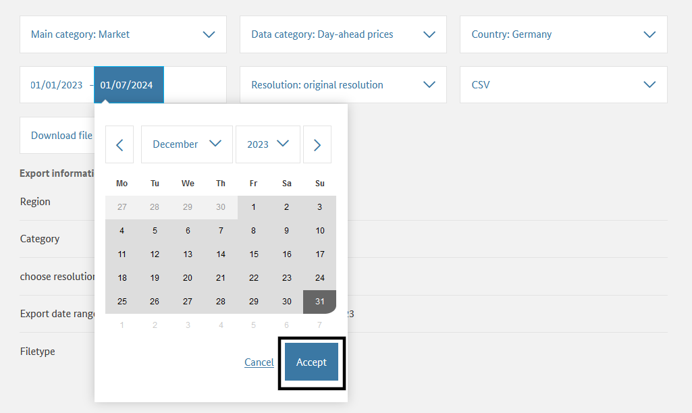
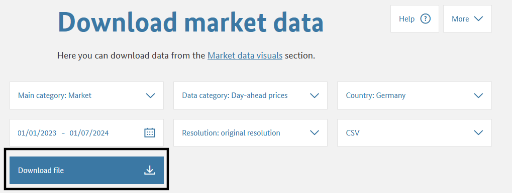
Das Datumsformat der Dateien ist abhängig von der auf der Internetseite eingestellten Sprache (Deutsch/English).
Der Versuch, die Datei mit np.loadtxt() einzulesen, führt zu verschiedenen Fehlermeldungen (Datentyp ist nicht numerisch, Spaltenzahl kann nicht ermittelt werden). Diesen wird durch Spezifizierung des Datentyps dtype = str und der Beschränkung auf die erste Zeile max_rows = 1 begegnet.
dateipfad = "01-daten/Gro_handelspreise_202301010000_202401010000_Stunde.csv"
preise = np.loadtxt(fname = dateipfad, dtype = 'str', max_rows = 1)
preisearray(['\ufeffDatum', 'von;Datum', 'bis;Deutschland/Luxemburg', '[€/MWh]',
'Originalauflösungen;∅', 'Anrainer', 'DE/LU', '[€/MWh]',
'Originalauflösungen;Belgien', '[€/MWh]',
'Originalauflösungen;Dänemark', '1', '[€/MWh]',
'Originalauflösungen;Dänemark', '2', '[€/MWh]',
'Originalauflösungen;Frankreich', '[€/MWh]',
'Originalauflösungen;Niederlande', '[€/MWh]',
'Originalauflösungen;Norwegen', '2', '[€/MWh]',
'Originalauflösungen;Österreich', '[€/MWh]',
'Originalauflösungen;Polen', '[€/MWh]',
'Originalauflösungen;Schweden', '4', '[€/MWh]',
'Originalauflösungen;Schweiz', '[€/MWh]',
'Originalauflösungen;Tschechien', '[€/MWh]',
'Originalauflösungen;DE/AT/LU', '[€/MWh]',
'Originalauflösungen;Italien', '(Nord)', '[€/MWh]',
'Originalauflösungen;Slowenien', '[€/MWh]',
'Originalauflösungen;Ungarn', '[€/MWh]', 'Originalauflösungen'],
dtype='<U31')Auf diese Weise kann die erste Zeile eingelesen und das Semikolon als Zeichentrenner identifiziert werden. Außerdem sind Fehler mit der Zeichenkodierung auffällig. Deshalb werden der Zeichentrenner mit delimiter = ';' und die Kodierung der Datei mit encoding = 'UTF-8' übergeben.
dateipfad = "01-daten/Gro_handelspreise_202301010000_202401010000_Stunde.csv"
preise = np.loadtxt(fname = dateipfad, dtype = 'str', max_rows = 1, delimiter = ';', encoding = 'UTF-8')
preisearray(['\ufeffDatum von', 'Datum bis',
'Deutschland/Luxemburg [€/MWh] Originalauflösungen',
'∅ Anrainer DE/LU [€/MWh] Originalauflösungen',
'Belgien [€/MWh] Originalauflösungen',
'Dänemark 1 [€/MWh] Originalauflösungen',
'Dänemark 2 [€/MWh] Originalauflösungen',
'Frankreich [€/MWh] Originalauflösungen',
'Niederlande [€/MWh] Originalauflösungen',
'Norwegen 2 [€/MWh] Originalauflösungen',
'Österreich [€/MWh] Originalauflösungen',
'Polen [€/MWh] Originalauflösungen',
'Schweden 4 [€/MWh] Originalauflösungen',
'Schweiz [€/MWh] Originalauflösungen',
'Tschechien [€/MWh] Originalauflösungen',
'DE/AT/LU [€/MWh] Originalauflösungen',
'Italien (Nord) [€/MWh] Originalauflösungen',
'Slowenien [€/MWh] Originalauflösungen',
'Ungarn [€/MWh] Originalauflösungen'], dtype='<U49')Es verbleibt die Zeichenkette “\ufeff” am Beginn des Arrays. Diese kennzeichnet die Byte-Reihenfolge der Datei. Diese kann mit der Übergabe der Kodierung encoding = 'UTF-8-sig' übersprungen werden (Mark Tolonen auf stackoverflow.com, Python Dokumentation). Auf diese Weise wird die erste Zeile korrekt eingelesen, sodass die Anzahl der einzulesenden Zeilen mit max_rows = 2 erweitert werden kann, um die Datentypen zu identifizieren.
preise = np.loadtxt(fname = dateipfad, dtype = 'str', max_rows = 2, delimiter = ';', encoding = 'UTF-8-sig')
preisearray([['Datum von', 'Datum bis',
'Deutschland/Luxemburg [€/MWh] Originalauflösungen',
'∅ Anrainer DE/LU [€/MWh] Originalauflösungen',
'Belgien [€/MWh] Originalauflösungen',
'Dänemark 1 [€/MWh] Originalauflösungen',
'Dänemark 2 [€/MWh] Originalauflösungen',
'Frankreich [€/MWh] Originalauflösungen',
'Niederlande [€/MWh] Originalauflösungen',
'Norwegen 2 [€/MWh] Originalauflösungen',
'Österreich [€/MWh] Originalauflösungen',
'Polen [€/MWh] Originalauflösungen',
'Schweden 4 [€/MWh] Originalauflösungen',
'Schweiz [€/MWh] Originalauflösungen',
'Tschechien [€/MWh] Originalauflösungen',
'DE/AT/LU [€/MWh] Originalauflösungen',
'Italien (Nord) [€/MWh] Originalauflösungen',
'Slowenien [€/MWh] Originalauflösungen',
'Ungarn [€/MWh] Originalauflösungen'],
['01.01.2023 00:00', '01.01.2023 01:00', '-5,17', '13,85',
'-4,39', '2,01', '2,01', '0,00', '-3,61', '119,32', '12,06',
'18,09', '2,01', '0,03', '4,84', '-', '195,90', '13,31', '19,76']],
dtype='<U49')Die ersten beiden Spalten enthalten Datums- und Zeitinformationen, die folgenden numerische Werte, wobei eine Spalte mit ‘-’ kodierte fehlende Werte enthält. Als Dezimaltrennzeichen wird das Komma verwendet. Da NumPy-Arrays immer nur einen Datentyp enthalten können, muss der Datensatz entsprechend aufgeteilt werden. Für die viertletzte Spalte ist zu prüfen, ob diese ausschließlich fehlende Werte enthält.
Zunächst wird der Datensatz vollständig als string eingelesen, die Spaltenbeschriftungen werden mit skiprows = 1 übersprungen.
preise = np.loadtxt(fname = dateipfad, dtype = 'str', delimiter = ';', encoding = 'UTF-8-sig', skiprows = 1)Anschließend werden im ersten Schritt die Datumsspalten isoliert. NumPy unterstützt keine String-Formatierung, die Zeitstempel müssen deshalb manuell von ‘01.01.2023 00:00’ in die Formatierung nach ISO 8601 ‘YYYY-MM-DDThh:mm’ konvertiert werden.
# Datumsspalten isolieren
preise_date = preise[ : , 0:2]
# Zeichenkette manuell ins Format ISO 8601 bringen
## Spalte 0
### neues Array anlegen
preise_datumvon = np.array([], dtype = 'datetime64')
for element in preise_date[ : , 0]:
# string umstellen
neues_element = element[6:10] + '-' + \
element[3:5] + '-' + \
element[0:2] + 'T' + \
element[11:13] + ':' + \
element[14:]
# in datetime64 konvertieren
neues_element = np.datetime64(neues_element)
# anhängen
preise_datumvon = np.append(preise_datumvon, neues_element)
## Spalte 1
### neues Array anlegen
preise_datumbis = np.array([], dtype = 'datetime64')
for element in preise_date[ : , 1]:
# string umstellen
neues_element = element[6:10] + '-' + \
element[3:5] + '-' + \
element[0:2] + 'T' + \
element[11:13] + ':' + \
element[14:]
# in datetime64 konvertieren
neues_element = np.datetime64(neues_element)
# anhängen
preise_datumbis = np.append(preise_datumbis, neues_element)
# die letzten 4 Elemente angucken
print(preise_datumvon[-4:], preise_datumvon.dtype)
print(preise_datumbis[-4:], preise_datumbis.dtype)['2023-12-31T20:00' '2023-12-31T21:00' '2023-12-31T22:00'
'2023-12-31T23:00'] datetime64[m]
['2023-12-31T21:00' '2023-12-31T22:00' '2023-12-31T23:00'
'2024-01-01T00:00'] datetime64[m]Im zweiten Schritt wird geprüft, ob die viertletzte Spalte ausschließlich fehlende Werte enthält. Die Position der Spalte ist zwar bekannt, wird aber dennoch mit der Funktion np.argwhere() ermittelt. Mit der Funktion len(np.unique()) werden die einzigartigen Werte abgezählt.
# numerische Spalten isolieren
preise_numeric = preise[ : , 2:]
# Position der Spalte mit fehlendem Wert '-' in der nullten Zeile finden
position = np.argwhere(preise_numeric[0, : ] == '-')
print("Spaltenindex:", position)
# prüfen, welche Werte in der Spalte vorkommen
print("Anzahl einzigartiger Werte:", len(np.unique(preise_numeric[:, position])))Spaltenindex: [[13]]
Anzahl einzigartiger Werte: 1Da die viertletzte Spalte ausschließlich das Zeichen ‘-’ enthält, kann die Spalte entfernt werden. Anschließend kann der Datentyp als Fließkommazahl deklariert werden. Dazu ist es erforderlich, mit np.char.replace(preise_numeric, ',', '.') das Dezimaltrennzeichen Komma durch den Punkt zu ersetzen. Die Spaltennamen müssen separat gespeichert werden.
# Spalte mit fehlenden Werten entfernen
preise_numeric = np.delete(arr = preise_numeric, obj = position, axis = 1) # axis 1 = columns
# Dezimaltrennzeichen ersetzen
preise_numeric = np.char.replace(preise_numeric, ',', '.')
preise_numeric = preise_numeric.astype('float64')
# Spaltennamen speichern
preise_numeric_colnames = np.loadtxt(fname = dateipfad, dtype = 'str', delimiter = ';', encoding = 'UTF-8-sig', max_rows = 1)
preise_numeric_colnames = preise_numeric_colnames[2:] # Datumsspalten entfernen
preise_numeric_colnames = np.delete(arr = preise_numeric_colnames, obj = position)
print(preise_numeric_colnames, "\n")
print(preise_numeric[0:2, :], preise_numeric.dtype)['Deutschland/Luxemburg [€/MWh] Originalauflösungen'
'∅ Anrainer DE/LU [€/MWh] Originalauflösungen'
'Belgien [€/MWh] Originalauflösungen'
'Dänemark 1 [€/MWh] Originalauflösungen'
'Dänemark 2 [€/MWh] Originalauflösungen'
'Frankreich [€/MWh] Originalauflösungen'
'Niederlande [€/MWh] Originalauflösungen'
'Norwegen 2 [€/MWh] Originalauflösungen'
'Österreich [€/MWh] Originalauflösungen'
'Polen [€/MWh] Originalauflösungen'
'Schweden 4 [€/MWh] Originalauflösungen'
'Schweiz [€/MWh] Originalauflösungen'
'Tschechien [€/MWh] Originalauflösungen'
'Italien (Nord) [€/MWh] Originalauflösungen'
'Slowenien [€/MWh] Originalauflösungen'
'Ungarn [€/MWh] Originalauflösungen']
[[-5.1700e+00 1.3850e+01 -4.3900e+00 2.0100e+00 2.0100e+00 0.0000e+00
-3.6100e+00 1.1932e+02 1.2060e+01 1.8090e+01 2.0100e+00 3.0000e-02
4.8400e+00 1.9590e+02 1.3310e+01 1.9760e+01]
[-1.0700e+00 9.7900e+00 -1.7500e+00 1.3800e+00 1.3800e+00 -1.0000e-01
-1.4600e+00 1.0883e+02 -1.0000e-01 5.7500e+00 1.3800e+00 -7.2500e+00
-3.5000e-01 1.9109e+02 -7.0000e-02 1.9000e-01]] float64Zunächst wird die Datei der Großhandelspreise mit der Funktion pd.read_csv() eingelesen und der Erfolg durch Aufruf der Funktionen pd.info() kontrolliert.
dateipfad = "01-daten/Gro_handelspreise_202301010000_202401010000_Stunde.csv"
preise = pd.read_csv(filepath_or_buffer = dateipfad)
print(preise.info())<class 'pandas.core.frame.DataFrame'>
MultiIndex: 8760 entries, ('01.01.2023 00:00;01.01.2023 01:00;-5', '17;13', '85;-4', '39;2', '01;2', '01;0', '00;-3', '61;119', '32;12', '06;18', '09;2', '01;0', '03;4', '84;-;195', '90;13', '31;19') to ('31.12.2023 23:00;01.01.2024 00:00;2', '44;19', '26;3', '17;26', '87;26', '87;3', '64;3', '17;59', '31;9', '35;35', '70;26', '87;9', '51;7', '44;-;106', '12;11', '02;14')
Data columns (total 1 columns):
# Column Non-Null Count Dtype
--- ------ -------------- -----
0 Datum von;Datum bis;Deutschland/Luxemburg [€/MWh] Originalauflösungen;∅ Anrainer DE/LU [€/MWh] Originalauflösungen;Belgien [€/MWh] Originalauflösungen;Dänemark 1 [€/MWh] Originalauflösungen;Dänemark 2 [€/MWh] Originalauflösungen;Frankreich [€/MWh] Originalauflösungen;Niederlande [€/MWh] Originalauflösungen;Norwegen 2 [€/MWh] Originalauflösungen;Österreich [€/MWh] Originalauflösungen;Polen [€/MWh] Originalauflösungen;Schweden 4 [€/MWh] Originalauflösungen;Schweiz [€/MWh] Originalauflösungen;Tschechien [€/MWh] Originalauflösungen;DE/AT/LU [€/MWh] Originalauflösungen;Italien (Nord) [€/MWh] Originalauflösungen;Slowenien [€/MWh] Originalauflösungen;Ungarn [€/MWh] Originalauflösungen 8760 non-null int64
dtypes: int64(1)
memory usage: 4.3+ MB
NoneEs wird nur eine Spalte erkannt, da im Datensatz das Semikolon als Zeichentrenner verwendet wird, das nun mit dem Argument sep = ';' übergeben wird (Standardwert ist das Komma). Durch Aufruf der Funktionen pd.info() und pd.head() wird der Erfolg kontrolliert.
dateipfad = "01-daten/Gro_handelspreise_202301010000_202401010000_Stunde.csv"
preise = pd.read_csv(filepath_or_buffer = dateipfad, sep = ';')
print(preise.info())
preise.head()<class 'pandas.core.frame.DataFrame'>
RangeIndex: 8760 entries, 0 to 8759
Data columns (total 19 columns):
# Column Non-Null Count Dtype
--- ------ -------------- -----
0 Datum von 8760 non-null object
1 Datum bis 8760 non-null object
2 Deutschland/Luxemburg [€/MWh] Originalauflösungen 8760 non-null object
3 ∅ Anrainer DE/LU [€/MWh] Originalauflösungen 8760 non-null object
4 Belgien [€/MWh] Originalauflösungen 8760 non-null object
5 Dänemark 1 [€/MWh] Originalauflösungen 8760 non-null object
6 Dänemark 2 [€/MWh] Originalauflösungen 8760 non-null object
7 Frankreich [€/MWh] Originalauflösungen 8760 non-null object
8 Niederlande [€/MWh] Originalauflösungen 8760 non-null object
9 Norwegen 2 [€/MWh] Originalauflösungen 8760 non-null object
10 Österreich [€/MWh] Originalauflösungen 8760 non-null object
11 Polen [€/MWh] Originalauflösungen 8760 non-null object
12 Schweden 4 [€/MWh] Originalauflösungen 8760 non-null object
13 Schweiz [€/MWh] Originalauflösungen 8760 non-null object
14 Tschechien [€/MWh] Originalauflösungen 8760 non-null object
15 DE/AT/LU [€/MWh] Originalauflösungen 8760 non-null object
16 Italien (Nord) [€/MWh] Originalauflösungen 8760 non-null object
17 Slowenien [€/MWh] Originalauflösungen 8760 non-null object
18 Ungarn [€/MWh] Originalauflösungen 8760 non-null object
dtypes: object(19)
memory usage: 1.3+ MB
None| Datum von | Datum bis | Deutschland/Luxemburg [€/MWh] Originalauflösungen | ∅ Anrainer DE/LU [€/MWh] Originalauflösungen | Belgien [€/MWh] Originalauflösungen | Dänemark 1 [€/MWh] Originalauflösungen | Dänemark 2 [€/MWh] Originalauflösungen | Frankreich [€/MWh] Originalauflösungen | Niederlande [€/MWh] Originalauflösungen | Norwegen 2 [€/MWh] Originalauflösungen | Österreich [€/MWh] Originalauflösungen | Polen [€/MWh] Originalauflösungen | Schweden 4 [€/MWh] Originalauflösungen | Schweiz [€/MWh] Originalauflösungen | Tschechien [€/MWh] Originalauflösungen | DE/AT/LU [€/MWh] Originalauflösungen | Italien (Nord) [€/MWh] Originalauflösungen | Slowenien [€/MWh] Originalauflösungen | Ungarn [€/MWh] Originalauflösungen | |
|---|---|---|---|---|---|---|---|---|---|---|---|---|---|---|---|---|---|---|---|
| 0 | 01.01.2023 00:00 | 01.01.2023 01:00 | -5,17 | 13,85 | -4,39 | 2,01 | 2,01 | 0,00 | -3,61 | 119,32 | 12,06 | 18,09 | 2,01 | 0,03 | 4,84 | - | 195,90 | 13,31 | 19,76 |
| 1 | 01.01.2023 01:00 | 01.01.2023 02:00 | -1,07 | 9,79 | -1,75 | 1,38 | 1,38 | -0,10 | -1,46 | 108,83 | -0,10 | 5,75 | 1,38 | -7,25 | -0,35 | - | 191,09 | -0,07 | 0,19 |
| 2 | 01.01.2023 02:00 | 01.01.2023 03:00 | -1,47 | 8,91 | -1,46 | 0,09 | 0,09 | -1,33 | -1,52 | 102,39 | -0,66 | 5,27 | 0,09 | -3,99 | -0,97 | - | 187,95 | -0,47 | 0,07 |
| 3 | 01.01.2023 03:00 | 01.01.2023 04:00 | -5,08 | 6,58 | -5,27 | 0,08 | 0,08 | -4,08 | -5,00 | 92,36 | -1,99 | 5,74 | 0,08 | -7,71 | -1,93 | - | 187,82 | -1,56 | 0,01 |
| 4 | 01.01.2023 04:00 | 01.01.2023 05:00 | -4,49 | 5,42 | -4,41 | 0,05 | 0,05 | -4,16 | -4,60 | 82,66 | -2,42 | 5,22 | 0,05 | -9,71 | -3,07 | - | 187,74 | -1,94 | -0,77 |
In der Ausgabe ist am Datentyp object erkennbar, dass für keine Spalte der Datentyp erkannt wurde. In der Darstellung der ersten Zeilen des Datensatzes ist das Komma als Dezimaltrennzeichen zu sehen, der Standardwert der Funktion pd.read_csv() ist aber der Punkt. Nach Übergabe des Dezimaltrennzeichens sollten die numerischen Spalten korrekt erkannt werden.
preise = pd.read_csv(filepath_or_buffer = dateipfad, sep = ';', decimal = ',')
print(preise.info())<class 'pandas.core.frame.DataFrame'>
RangeIndex: 8760 entries, 0 to 8759
Data columns (total 19 columns):
# Column Non-Null Count Dtype
--- ------ -------------- -----
0 Datum von 8760 non-null object
1 Datum bis 8760 non-null object
2 Deutschland/Luxemburg [€/MWh] Originalauflösungen 8760 non-null float64
3 ∅ Anrainer DE/LU [€/MWh] Originalauflösungen 8760 non-null float64
4 Belgien [€/MWh] Originalauflösungen 8760 non-null float64
5 Dänemark 1 [€/MWh] Originalauflösungen 8760 non-null float64
6 Dänemark 2 [€/MWh] Originalauflösungen 8760 non-null float64
7 Frankreich [€/MWh] Originalauflösungen 8760 non-null float64
8 Niederlande [€/MWh] Originalauflösungen 8760 non-null float64
9 Norwegen 2 [€/MWh] Originalauflösungen 8760 non-null float64
10 Österreich [€/MWh] Originalauflösungen 8760 non-null float64
11 Polen [€/MWh] Originalauflösungen 8760 non-null float64
12 Schweden 4 [€/MWh] Originalauflösungen 8760 non-null float64
13 Schweiz [€/MWh] Originalauflösungen 8760 non-null float64
14 Tschechien [€/MWh] Originalauflösungen 8760 non-null float64
15 DE/AT/LU [€/MWh] Originalauflösungen 8760 non-null object
16 Italien (Nord) [€/MWh] Originalauflösungen 8760 non-null float64
17 Slowenien [€/MWh] Originalauflösungen 8760 non-null float64
18 Ungarn [€/MWh] Originalauflösungen 8760 non-null float64
dtypes: float64(16), object(3)
memory usage: 1.3+ MB
NoneDer Datentyp der Spalte DE/AT/LU [€/MWh] Originalauflösungen wird nicht als float64 erkannt. In der Ausgabe ist zu sehen, dass wenigstens in den ersten Zeilen fehlende Werte durch ‘-’ markiert sind. Mittels der Methode .describe() kann überprüft werden, ob die Spalte überhaupt numerische Werte enthält.
preise['DE/AT/LU [€/MWh] Originalauflösungen'].describe()count 8760
unique 1
top -
freq 8760
Name: DE/AT/LU [€/MWh] Originalauflösungen, dtype: objectDa dies nicht der Fall ist, kann die Spalte entfernt werden. Anschließend können die ersten beiden Spalten mit der Funktion pd.to_datetime() in ein Datumsformat konvertiert werden. Eine Zelle enthält Zeichenketten im Schema ‘01.01.2023 00:00’. Mit Hilfe der strftime-Dokumentation kann der Funktion das Datumsformat übergeben werden.
preise.drop(labels = 'DE/AT/LU [€/MWh] Originalauflösungen', axis = 'columns', inplace = True)
## Datumsspalten konvertieren
preise['Datum von'] = pd.to_datetime(preise['Datum von'], format = "%d.%m.%Y %H:%M")
preise['Datum bis'] = pd.to_datetime(preise['Datum bis'], format = "%d.%m.%Y %H:%M")
print(preise.info())<class 'pandas.core.frame.DataFrame'>
RangeIndex: 8760 entries, 0 to 8759
Data columns (total 18 columns):
# Column Non-Null Count Dtype
--- ------ -------------- -----
0 Datum von 8760 non-null datetime64[ns]
1 Datum bis 8760 non-null datetime64[ns]
2 Deutschland/Luxemburg [€/MWh] Originalauflösungen 8760 non-null float64
3 ∅ Anrainer DE/LU [€/MWh] Originalauflösungen 8760 non-null float64
4 Belgien [€/MWh] Originalauflösungen 8760 non-null float64
5 Dänemark 1 [€/MWh] Originalauflösungen 8760 non-null float64
6 Dänemark 2 [€/MWh] Originalauflösungen 8760 non-null float64
7 Frankreich [€/MWh] Originalauflösungen 8760 non-null float64
8 Niederlande [€/MWh] Originalauflösungen 8760 non-null float64
9 Norwegen 2 [€/MWh] Originalauflösungen 8760 non-null float64
10 Österreich [€/MWh] Originalauflösungen 8760 non-null float64
11 Polen [€/MWh] Originalauflösungen 8760 non-null float64
12 Schweden 4 [€/MWh] Originalauflösungen 8760 non-null float64
13 Schweiz [€/MWh] Originalauflösungen 8760 non-null float64
14 Tschechien [€/MWh] Originalauflösungen 8760 non-null float64
15 Italien (Nord) [€/MWh] Originalauflösungen 8760 non-null float64
16 Slowenien [€/MWh] Originalauflösungen 8760 non-null float64
17 Ungarn [€/MWh] Originalauflösungen 8760 non-null float64
dtypes: datetime64[ns](2), float64(16)
memory usage: 1.2 MB
NoneWenn der innere Aufbau einer Datei bekannt ist, können die notwendigen Parameter auch direkt beim Einlesen mit pd.read_csv übergeben werden (Argumente usecols, parse_dates und date_format).
preise = pd.read_csv(filepath_or_buffer = dateipfad, sep = ';', decimal = ',',
usecols = list(range(0, 15)) + list(range(16, 19)), # Auswahl der einzulesenden Spalten
parse_dates = ['Datum von', 'Datum bis'], date_format = "%d.%m.%Y %H:%M") # Formatierung des Datums
print(preise.info())<class 'pandas.core.frame.DataFrame'>
RangeIndex: 8760 entries, 0 to 8759
Data columns (total 18 columns):
# Column Non-Null Count Dtype
--- ------ -------------- -----
0 Datum von 8760 non-null datetime64[ns]
1 Datum bis 8760 non-null datetime64[ns]
2 Deutschland/Luxemburg [€/MWh] Originalauflösungen 8760 non-null float64
3 ∅ Anrainer DE/LU [€/MWh] Originalauflösungen 8760 non-null float64
4 Belgien [€/MWh] Originalauflösungen 8760 non-null float64
5 Dänemark 1 [€/MWh] Originalauflösungen 8760 non-null float64
6 Dänemark 2 [€/MWh] Originalauflösungen 8760 non-null float64
7 Frankreich [€/MWh] Originalauflösungen 8760 non-null float64
8 Niederlande [€/MWh] Originalauflösungen 8760 non-null float64
9 Norwegen 2 [€/MWh] Originalauflösungen 8760 non-null float64
10 Österreich [€/MWh] Originalauflösungen 8760 non-null float64
11 Polen [€/MWh] Originalauflösungen 8760 non-null float64
12 Schweden 4 [€/MWh] Originalauflösungen 8760 non-null float64
13 Schweiz [€/MWh] Originalauflösungen 8760 non-null float64
14 Tschechien [€/MWh] Originalauflösungen 8760 non-null float64
15 Italien (Nord) [€/MWh] Originalauflösungen 8760 non-null float64
16 Slowenien [€/MWh] Originalauflösungen 8760 non-null float64
17 Ungarn [€/MWh] Originalauflösungen 8760 non-null float64
dtypes: datetime64[ns](2), float64(16)
memory usage: 1.2 MB
NonePandas bietet zahlreiche Attribute und Methoden, um Informationen aus datetime64-Objekten auszulesen. NumPy unterstützt vergleichbare Funktionen derzeit nicht nativ. Eine Übersicht aller verfügbaren Attribute und Methoden liefert dir(pd.to_datetime(0)).
# Attribute
print("Jahr:", pd.to_datetime(0).year)
print("Monat:", pd.to_datetime(0).month)
print("Tag:", pd.to_datetime(0).day)
print("Stunde:", pd.to_datetime(0).hour)
print("Minute:", pd.to_datetime(0).minute)
print("Sekunde:", pd.to_datetime(0).second)
print("Tag des Jahres:", pd.to_datetime(0).dayofyear)
print("Wochentag:", pd.to_datetime(0).dayofweek)
print("Tage im Monat:", pd.to_datetime(0).days_in_month)
print("Schaltjahr:", pd.to_datetime(0).is_leap_year)
# Methoden
print("\nDatum:", pd.to_datetime(0).date())
print("Zeit:", pd.to_datetime(0).time())
print("Wochentag (0-6):", pd.to_datetime(0).weekday())
print("Monatsname:", pd.to_datetime(0).month_name())Jahr: 1970
Monat: 1
Tag: 1
Stunde: 0
Minute: 0
Sekunde: 0
Tag des Jahres: 1
Wochentag: 3
Tage im Monat: 31
Schaltjahr: False
Datum: 1970-01-01
Zeit: 00:00:00
Wochentag (0-6): 3
Monatsname: JanuaryFür pd.Series erfolgt der Zugriff über den .dt-Operator (siehe .dt accessor). Der Zugriff auf verschiedene Informationen über ein Attribut (ohne Klammern) oder über eine Methode (mit Klammern) unterscheidet sich jedoch teilweise (siehe folgendes Beispiel).
# Attribute
print("Datum:", pd.Series(pd.to_datetime(0)).dt.date) # Unterschied
print("Zeit:", pd.Series(pd.to_datetime(0)).dt.time) # Unterschied
print("Jahr", pd.Series(pd.to_datetime(0)).dt.year)
print("Monat", pd.Series(pd.to_datetime(0)).dt.month)
print("Tag", pd.Series(pd.to_datetime(0)).dt.day)
print("Stunde", pd.Series(pd.to_datetime(0)).dt.hour)
print("Minute", pd.Series(pd.to_datetime(0)).dt.minute)
print("Sekunde", pd.Series(pd.to_datetime(0)).dt.second)
print("\nTag des Jahres", pd.Series(pd.to_datetime(0)).dt.dayofyear)
print("Wochentag:", pd.Series(pd.to_datetime(0)).dt.dayofweek)
print("Wochentag:", pd.Series(pd.to_datetime(0)).dt.weekday) # Unterschied
print("Tage im Monat:", pd.Series(pd.to_datetime(0)).dt.days_in_month)
print("Schaltjahr:", pd.Series(pd.to_datetime(0)).dt.is_leap_year)
# Methoden
print("\nName des Monats:", pd.Series(pd.to_datetime(0)).dt.month_name())Datum: 0 1970-01-01
dtype: object
Zeit: 0 00:00:00
dtype: object
Jahr 0 1970
dtype: int32
Monat 0 1
dtype: int32
Tag 0 1
dtype: int32
Stunde 0 0
dtype: int32
Minute 0 0
dtype: int32
Sekunde 0 0
dtype: int32
Tag des Jahres 0 1
dtype: int32
Wochentag: 0 3
dtype: int32
Wochentag: 0 3
dtype: int32
Tage im Monat: 0 31
dtype: int32
Schaltjahr: 0 False
dtype: bool
Name des Monats: 0 January
dtype: objectDie im vorherigen Abschnitt eingelesenen Großhandelspreise für Strom 2023 sollen auf die Unterschiede an Werktagen und am Wochenende untersucht werden. Vergleichen Sie den durchschnittlichen Strompreis im Gebiet Deutschland/Luxemburg an Werktagen (Montag - Freitag) mit dem durchschnittlichen Strompreis am Wochenende.
## Zugriff mit .dt für pd.Series
# Werktage und Wochenende unterscheiden
werktags = preise['Datum von'].dt.weekday.isin(list(range(0, 5)))
wochenende = preise['Datum von'].dt.weekday.isin(list(range(5, 7)))
print(werktags.head())
print(wochenende.head())
# Preise vergleichen
preis_werktags = preise.loc[werktags, 'Deutschland/Luxemburg [€/MWh] Originalauflösungen'].mean()
preis_wochenende = preise.loc[wochenende, 'Deutschland/Luxemburg [€/MWh] Originalauflösungen'].mean()
print(f"\nDurchschnittspreis werktags: {preis_werktags:.2f} [€/MWh]\nDurchschnittspreis am Wochenende: {preis_wochenende:.2f} [€/MWh]")0 False
1 False
2 False
3 False
4 False
Name: Datum von, dtype: bool
0 True
1 True
2 True
3 True
4 True
Name: Datum von, dtype: bool
Durchschnittspreis werktags: 103.18 [€/MWh]
Durchschnittspreis am Wochenende: 75.34 [€/MWh]NumPy und Pandas unterstützen NaT für np.datetime64, np.timedelta64
NumPy: https://numpy.org/doc/stable/reference/arrays.datetime.html
NAT, in any combination of lowercase/uppercase letters, for a “Not A Time”
Pandas: https://pandas.pydata.org/docs/user_guide/missing_data.html
Die logische Abfrage fehlender Werte unterscheidet sich für None, np.nan und pd.NA und pd.NaT.
bool_values = [None, float('nan'), pd.NA, pd.NaT]
for element in bool_values:
try:
bool_value = bool(element)
except TypeError as error:
print(error)
else:
print("Wahrheitswert von", element, "ist", bool_value)Wahrheitswert von None ist False
Wahrheitswert von nan ist True
boolean value of NA is ambiguous
Wahrheitswert von NaT ist TrueDies gilt auch für die Wertgleichheit.
for element in bool_values:
try:
result = element == element
except TypeError as error:
print(error)
else:
print("Wertgleichheit von", element, "ist", result)Wertgleichheit von None ist True
Wertgleichheit von nan ist False
Wertgleichheit von <NA> ist <NA>
Wertgleichheit von NaT ist False
“everybody I know has war stories about cleaning up lousy datasets”
Nicholas J. Cox
Cox, Nicholas J. 2004: Exploratory Data Mining and Data Cleaning. Book Review 9. In: Journal of Statistical Software 2004, Volume 11. https://www.jstatsoft.org/article/view/v011b09/30
Die folgenden Übungen trainieren die Anwendung der in diesem Kapitel vorgestellten Werkzeuge und können mit NumPy oder mit Pandas gelöst werden.
Aufgabe: Lesen Sie die Datei Dateipfad: ‘01-daten/Day-ahead_prices_202301010000_202401010000_Hour.csv’ so ein, dass die Datentypen korrekt erkannt werden. (Hinweise zur Datei siehe Hinweis 4.1, siehe Dokumentation strftime zur string-Formatierung)
import pandas as pd
dateipfad = "01-daten/Day-ahead_prices_202301010000_202401010000_Hour.csv"
data = pd.read_csv(dateipfad, sep=";") # Semikolon als Trennzeichen muss angegeben werden
data.info() # -> man sieht, dass Spalten 0 "Start date" und 1 "End date" als Dtype "object" erkannt werden
print("\n")
print(data.iloc[0:10, 0:2], "\n") # anzeigen von ein paar Zeilen, um zu schauen wie die ersten beiden "Object" Spalten aufgebaut sind
# Ausgabe lautet:
# Start date: Jan 1, 2023 12:00 AM
# End date Jan 1, 2023 1:00 AM
# also bieten sich zwei Varianten an:
# 1. Variante: beim Einlesen schon Datumsformat angeben:
data = pd.read_csv(dateipfad, sep=";" , parse_dates=[0,1], date_format="%b %d, %Y %I:%M %p") # Parameter heißt hier date_format, bei 2. Variante heißt er nur "format"
# 2. Variante: Die beiden Spalten zu Anfang, die dtype object haben, seperat ändern nachdem die Datei schon eingelesen wurde:
data["Start date"] = pd.to_datetime(data["Start date"], format="%b %d, %Y %I:%M %p") #%b für Monatsangabe als Kürzel, %I für Stunde im AM/PM Format, %p für AM/PM
data["End date"] = pd.to_datetime(data["End date"], format="%b %d, %Y %I:%M %p")
print(data.iloc[0:10, 0:2], "\n")
data.info()<class 'pandas.core.frame.DataFrame'>
RangeIndex: 8760 entries, 0 to 8759
Data columns (total 19 columns):
# Column Non-Null Count Dtype
--- ------ -------------- -----
0 Start date 8760 non-null object
1 End date 8760 non-null object
2 Germany/Luxembourg [€/MWh] Original resolutions 8760 non-null float64
3 ∅ DE/LU neighbours [€/MWh] Original resolutions 8760 non-null float64
4 Belgium [€/MWh] Original resolutions 8760 non-null float64
5 Denmark 1 [€/MWh] Original resolutions 8760 non-null float64
6 Denmark 2 [€/MWh] Original resolutions 8760 non-null float64
7 France [€/MWh] Original resolutions 8760 non-null float64
8 Netherlands [€/MWh] Original resolutions 8760 non-null float64
9 Norway 2 [€/MWh] Original resolutions 8760 non-null float64
10 Austria [€/MWh] Original resolutions 8760 non-null float64
11 Poland [€/MWh] Original resolutions 8760 non-null float64
12 Sweden 4 [€/MWh] Original resolutions 8760 non-null float64
13 Switzerland [€/MWh] Original resolutions 8760 non-null float64
14 Czech Republic [€/MWh] Original resolutions 8760 non-null float64
15 DE/AT/LU [€/MWh] Original resolutions 8760 non-null object
16 Northern Italy [€/MWh] Original resolutions 8760 non-null float64
17 Slovenia [€/MWh] Original resolutions 8760 non-null float64
18 Hungary [€/MWh] Original resolutions 8760 non-null float64
dtypes: float64(16), object(3)
memory usage: 1.3+ MB
Start date End date
0 Jan 1, 2023 12:00 AM Jan 1, 2023 1:00 AM
1 Jan 1, 2023 1:00 AM Jan 1, 2023 2:00 AM
2 Jan 1, 2023 2:00 AM Jan 1, 2023 3:00 AM
3 Jan 1, 2023 3:00 AM Jan 1, 2023 4:00 AM
4 Jan 1, 2023 4:00 AM Jan 1, 2023 5:00 AM
5 Jan 1, 2023 5:00 AM Jan 1, 2023 6:00 AM
6 Jan 1, 2023 6:00 AM Jan 1, 2023 7:00 AM
7 Jan 1, 2023 7:00 AM Jan 1, 2023 8:00 AM
8 Jan 1, 2023 8:00 AM Jan 1, 2023 9:00 AM
9 Jan 1, 2023 9:00 AM Jan 1, 2023 10:00 AM
Start date End date
0 2023-01-01 00:00:00 2023-01-01 01:00:00
1 2023-01-01 01:00:00 2023-01-01 02:00:00
2 2023-01-01 02:00:00 2023-01-01 03:00:00
3 2023-01-01 03:00:00 2023-01-01 04:00:00
4 2023-01-01 04:00:00 2023-01-01 05:00:00
5 2023-01-01 05:00:00 2023-01-01 06:00:00
6 2023-01-01 06:00:00 2023-01-01 07:00:00
7 2023-01-01 07:00:00 2023-01-01 08:00:00
8 2023-01-01 08:00:00 2023-01-01 09:00:00
9 2023-01-01 09:00:00 2023-01-01 10:00:00
<class 'pandas.core.frame.DataFrame'>
RangeIndex: 8760 entries, 0 to 8759
Data columns (total 19 columns):
# Column Non-Null Count Dtype
--- ------ -------------- -----
0 Start date 8760 non-null datetime64[ns]
1 End date 8760 non-null datetime64[ns]
2 Germany/Luxembourg [€/MWh] Original resolutions 8760 non-null float64
3 ∅ DE/LU neighbours [€/MWh] Original resolutions 8760 non-null float64
4 Belgium [€/MWh] Original resolutions 8760 non-null float64
5 Denmark 1 [€/MWh] Original resolutions 8760 non-null float64
6 Denmark 2 [€/MWh] Original resolutions 8760 non-null float64
7 France [€/MWh] Original resolutions 8760 non-null float64
8 Netherlands [€/MWh] Original resolutions 8760 non-null float64
9 Norway 2 [€/MWh] Original resolutions 8760 non-null float64
10 Austria [€/MWh] Original resolutions 8760 non-null float64
11 Poland [€/MWh] Original resolutions 8760 non-null float64
12 Sweden 4 [€/MWh] Original resolutions 8760 non-null float64
13 Switzerland [€/MWh] Original resolutions 8760 non-null float64
14 Czech Republic [€/MWh] Original resolutions 8760 non-null float64
15 DE/AT/LU [€/MWh] Original resolutions 8760 non-null object
16 Northern Italy [€/MWh] Original resolutions 8760 non-null float64
17 Slovenia [€/MWh] Original resolutions 8760 non-null float64
18 Hungary [€/MWh] Original resolutions 8760 non-null float64
dtypes: datetime64[ns](2), float64(16), object(1)
memory usage: 1.3+ MBMusterlösung von Marc Sönnecken. Zur Verbesserung der Lesbarkeit wurde die Ausgabe mit print(data.head(10)) ersetzt durch print(data.iloc[0:10, 0:2], "\n"). Um sich einen Überblick über einen Datensatz zu verschaffen, ist die Methode .head() jedoch besser geeignet
Die Austrian Power Grid AG (APG) veröffentlicht Strommarktdaten unter https://markttransparenz.apg.at/. Unter dem Link können Erzeugungsdaten für das Jahr 2023 heruntergeladen werden.
Nach der Auswahl des Zeitraums auf Exportieren klicken, dann erscheint die Schaltfläche Download.
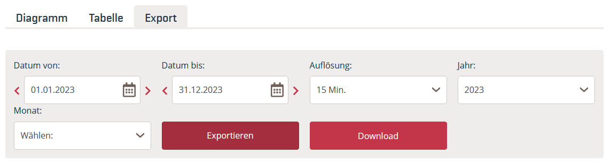
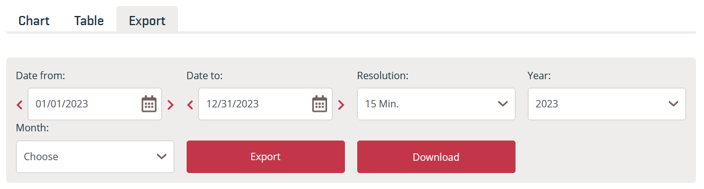
Das Datumsformat der Dateien ist abhängig von der auf der Internetseite eingestellten Sprache (Deutsch/English).
Diesem Skript ist folgende Datei angefügt.
| Daten | Dateiname |
|---|---|
| Realisierte Stromerzeugung 2023 | AGPT_2022-12-31T23_00_00Z_2023-12-31T23_00_00Z_15M_de_2024-06-10T09_32_38Z.csv |
In dem Datensatz wird durch die Umstellung von Sommer- auf Winterzeit am letzten Sonntag im Oktober die Stunde 2 Uhr morgens doppelt eingetragen (dafür fehlt eine Stunde bei der Umstellung von Winter- auf Sommerzeit am letzten Sonntag im März). Die doppelte Stunde wird im Datensatz mit 2A bzw. 2B gekennzeichnet. (Mitteilung Austrian Power Grid AG vom 13.08.2024)
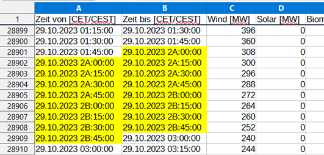
Lesen Sie die Datei so ein, dass die Spalten mit Datums- und Zeitinformationen als datetime erkannt werden. Lösen Sie die Zeitumstellung so auf, dass jeder Tag 24 Stunden hat.
Die einfachste Lösung ist es, Zeitreihen zu generieren und die Spalten ‘Zeit von [CET/CEST]’ und ‘Zeit bis [CET/CEST]’ damit zu ersetzen.
von = pd.date_range(start = "2023-01-01T00:00", end = "2023-12-31T23:45", freq = '15min')
bis = pd.date_range(start = "2023-01-01T00:15", end = "2024-01-01T00:00", freq = '15min')
print(von[8070:8078], "\n")
print(bis[8070:8078], "\n")Datei einlesen und String-Manipulation
Zunächst wird die Datei eingelesen. Die Zellen, die sich nicht in datetime umwandeln lassen, können mit Python ausgegeben werden.
# Datei einlesen
erzeugung_austria = pd.read_csv(filepath_or_buffer = "01-daten/AGPT_2022-12-31T23_00_00Z_2023-12-31T23_00_00Z_15M_de_2024-06-10T09_32_38Z.csv",
sep = ";", decimal = ",", thousands = ".")
# Zellen mit fehlerhaften datetime strings identifizieren
print("Spalte 'Zeit von [CET/CEST]'")
i = 0
position_element = []
for element in erzeugung_austria['Zeit von [CET/CEST]']:
try:
pd.to_datetime(element, format = "%d.%m.%Y %H:%M:%S")
except:
print(element)
position_element.append(i)
i += 1
print("\nDie Zellen haben den Zeilenindex: ", position_element, "\n")
print("Spalte 'Zeit bis [CET/CEST]'")
i = 0
position_element = []
for element in erzeugung_austria['Zeit bis [CET/CEST]']:
try:
pd.to_datetime(element, format = "%d.%m.%Y %H:%M:%S")
except:
print(element)
position_element.append(i)
i += 1
print("\nDie Zellen haben den Zeilenindex: ", position_element, "\n")Spalte 'Zeit von [CET/CEST]'
29.10.2023 2A:00:00
29.10.2023 2A:15:00
29.10.2023 2A:30:00
29.10.2023 2A:45:00
29.10.2023 2B:00:00
29.10.2023 2B:15:00
29.10.2023 2B:30:00
29.10.2023 2B:45:00
Die Zellen haben den Zeilenindex: [28900, 28901, 28902, 28903, 28904, 28905, 28906, 28907]
Spalte 'Zeit bis [CET/CEST]'
29.10.2023 2A:00:00
29.10.2023 2A:15:00
29.10.2023 2A:30:00
29.10.2023 2A:45:00
29.10.2023 2B:00:00
29.10.2023 2B:15:00
29.10.2023 2B:30:00
29.10.2023 2B:45:00
Die Zellen haben den Zeilenindex: [28899, 28900, 28901, 28902, 28903, 28904, 28905, 28906]
Damit die Datumsspalten korrekt eingelesen werden können, werden die Zeichenfolgen “2A” und “2B” mit der Methode str.replace() durch “02” ersetzt. Dadurch wird eine Dublette im Datensatz erzeugt.
# string replace & als Datum einlesen
## Spalte Zeit von [CET/CEST]
erzeugung_austria['Zeit von [CET/CEST]'] = erzeugung_austria['Zeit von [CET/CEST]'].str.replace(pat = '2A', repl = '02')
erzeugung_austria['Zeit von [CET/CEST]'] = erzeugung_austria['Zeit von [CET/CEST]'].str.replace(pat = '2B', repl = '02')
erzeugung_austria['Zeit von [CET/CEST]'] = pd.to_datetime(erzeugung_austria['Zeit von [CET/CEST]'], format = "%d.%m.%Y %H:%M:%S")
## Spalte Zeit bis [CET/CEST]
erzeugung_austria['Zeit bis [CET/CEST]'] = erzeugung_austria['Zeit bis [CET/CEST]'].str.replace(pat = '2A', repl = '02')
erzeugung_austria['Zeit bis [CET/CEST]'] = erzeugung_austria['Zeit bis [CET/CEST]'].str.replace(pat = '2B', repl = '02')
erzeugung_austria['Zeit bis [CET/CEST]'] = pd.to_datetime(erzeugung_austria['Zeit bis [CET/CEST]'], format = "%d.%m.%Y %H:%M:%S")
print(erzeugung_austria.info())<class 'pandas.core.frame.DataFrame'>
RangeIndex: 35040 entries, 0 to 35039
Data columns (total 15 columns):
# Column Non-Null Count Dtype
--- ------ -------------- -----
0 Zeit von [CET/CEST] 35040 non-null datetime64[ns]
1 Zeit bis [CET/CEST] 35040 non-null datetime64[ns]
2 Wind [MW] 35040 non-null float64
3 Solar [MW] 35040 non-null float64
4 Biomasse [MW] 35040 non-null float64
5 Gas [MW] 35040 non-null float64
6 Kohle [MW] 35040 non-null float64
7 Öl [MW] 35040 non-null float64
8 Geothermie [MW] 35040 non-null float64
9 Pumpspeicher [MW] 35040 non-null float64
10 Lauf- und Schwellwasser [MW] 35040 non-null float64
11 Speicher [MW] 35040 non-null float64
12 Sonstige Erneuerbare [MW] 35040 non-null float64
13 Müll [MW] 35040 non-null float64
14 Andere [MW] 35040 non-null float64
dtypes: datetime64[ns](2), float64(13)
memory usage: 4.0 MB
NoneIndexpositionen der doppelten und der fehlenden Stunde bestimmen
Im nächsten Schritt werden die Indexposition der doppelten und der fehlenden Stunde bestimmt. Dazu wird ein neues Objekt angelegt, das auf den Speicherbereich der Datumsspalten zugreift (was nicht zwingend erforderlich ist). Die Position der doppelten Stunde wird mit der Methode pd.Series.duplicated() bestimmt, die einen logischen Vektor zurückgibt. Dieser wird zum Slicing und der Ausgabe der Indexposition verwendet. Durch die Subtraktion von 4 wird der Index der ersten Stunde ausgegeben (der Datensatz ist auf Viertelstundenbasis).
doppelte Stunde
# neues Objekt anlegen
austria_dates = erzeugung_austria[['Zeit von [CET/CEST]', 'Zeit bis [CET/CEST]']].copy()
# Indexposition der doppelten Stunde bestimmen
## Zeit von
position_doppelte_stunde_von = austria_dates['Zeit von [CET/CEST]'][austria_dates['Zeit von [CET/CEST]'].duplicated()].index - 4
print(f"Die doppelte Stunde (Zeit von):\n{austria_dates.loc[position_doppelte_stunde_von, 'Zeit von [CET/CEST]']}\nsteht an Indexposition\n {position_doppelte_stunde_von}\n"
f"\nDie nächste Stunde lautet:\n{austria_dates.loc[position_doppelte_stunde_von + 4, 'Zeit von [CET/CEST]']}"
f"\n\nBeide Stunden sind identisch.")
### Ende der Verschiebung in Spalte Zeit von
ende_verschiebung_von = position_doppelte_stunde_von[-1]
print(f"\nDie Zeitverschiebung in der Spalte Zeit von endet bei Indexposition: {ende_verschiebung_von}")
## Zeit bis
position_doppelte_stunde_bis = austria_dates['Zeit bis [CET/CEST]'][austria_dates['Zeit bis [CET/CEST]'].duplicated()].index - 4
print(f"\n\nDie doppelte Stunde (Zeit bis):\n{austria_dates.loc[position_doppelte_stunde_bis, 'Zeit bis [CET/CEST]']}\nsteht an Indexposition\n {position_doppelte_stunde_bis}\n"
f"\nDie nächste Stunde lautet:\n{austria_dates.loc[position_doppelte_stunde_bis + 4, 'Zeit bis [CET/CEST]']}"
f"\n\nBeide Stunden sind identisch.")
### Ende der Verschiebung in Spalte Zeit bis
ende_verschiebung_bis = position_doppelte_stunde_bis[-1]
print(f"\nDie Zeitverschiebung in der Spalte Zeit bis endet bei Indexposition: {ende_verschiebung_bis}")Die doppelte Stunde (Zeit von):
28900 2023-10-29 02:00:00
28901 2023-10-29 02:15:00
28902 2023-10-29 02:30:00
28903 2023-10-29 02:45:00
Name: Zeit von [CET/CEST], dtype: datetime64[ns]
steht an Indexposition
Index([28900, 28901, 28902, 28903], dtype='int64')
Die nächste Stunde lautet:
28904 2023-10-29 02:00:00
28905 2023-10-29 02:15:00
28906 2023-10-29 02:30:00
28907 2023-10-29 02:45:00
Name: Zeit von [CET/CEST], dtype: datetime64[ns]
Beide Stunden sind identisch.
Die Zeitverschiebung in der Spalte Zeit von endet bei Indexposition: 28903
Die doppelte Stunde (Zeit bis):
28899 2023-10-29 02:00:00
28900 2023-10-29 02:15:00
28901 2023-10-29 02:30:00
28902 2023-10-29 02:45:00
Name: Zeit bis [CET/CEST], dtype: datetime64[ns]
steht an Indexposition
Index([28899, 28900, 28901, 28902], dtype='int64')
Die nächste Stunde lautet:
28903 2023-10-29 02:00:00
28904 2023-10-29 02:15:00
28905 2023-10-29 02:30:00
28906 2023-10-29 02:45:00
Name: Zeit bis [CET/CEST], dtype: datetime64[ns]
Beide Stunden sind identisch.
Die Zeitverschiebung in der Spalte Zeit bis endet bei Indexposition: 28902fehlende Stunde
Die Sommerzeit beginnt am letzen Sonntag im März. Die Stunde liegt nicht in range(0, 24). Diese Bedingung kann in vier Schritten kontrolliert werden:
Monat März: march = pd.Series[pd.Series.dt.month == 3]
Sonntage im März: sundays = march[march.dt.dayofweek == 6]
letzter Sonntag im März: Die letzten 23*4 Einträge sind der letzte Sonntag des Monats (23 weil eine Stunde fehlt).
last_sunday = sundays[-23*4:]
fehlende Stunde: np.argwhere(np.invert(pd.Series(range(0,24)).isin(last_sunday.dt.hour)))
# Indexposition der fehlenden Stunde bestimmen
## Zeit von
### Monat März
maske_märz_von = austria_dates['Zeit von [CET/CEST]'].dt.month == 3
austria_dates_march_von = austria_dates.loc[maske_märz_von, 'Zeit von [CET/CEST]']
print(f"Der Monat März (Zeit von):\n{austria_dates_march_von.head}\n");
### letzter Sonntag
maske_sonntag_von = (austria_dates_march_von.dt.dayofweek == 6)
letzter_sonntag_von = (austria_dates_march_von[maske_sonntag_von]) [-23*4 :]
print(f"Der letzte Sonntag im März:\n{letzter_sonntag_von}\n")
### fehlende Stunde
print(letzter_sonntag_von.dt.hour)
fehlende_stunde_von = np.argwhere(np.invert(pd.Series(range(0,24)).isin(letzter_sonntag_von.dt.hour))).item()
print(f"\nEs fehlt die Stunde:\n{fehlende_stunde_von}\n")
print(letzter_sonntag_von[letzter_sonntag_von.dt.hour == (fehlende_stunde_von - 1)], letzter_sonntag_von[letzter_sonntag_von.dt.hour == (fehlende_stunde_von + 1)], sep = "\n")
### Beginn der Verschiebung in Spalte Zeit von
beginn_verschiebung_von = letzter_sonntag_von[letzter_sonntag_von.dt.hour == (fehlende_stunde_von + 1)].index[0]
print(f"\nDie Zeitverschiebung in der Spalte Zeit von beginnt bei Indexposition: {beginn_verschiebung_von}\n\n")
## Zeit bis
### Monat März
maske_märz_bis = austria_dates['Zeit bis [CET/CEST]'].dt.month == 3
austria_dates_march_bis = austria_dates.loc[maske_märz_bis, 'Zeit bis [CET/CEST]']
print(f"Der Monat März (Zeit bis):\n{austria_dates_march_bis.head}\n");
### letzter Sonntag
maske_sonntag_bis = (austria_dates_march_bis.dt.dayofweek == 6)
letzter_sonntag_bis = (austria_dates_march_bis[maske_sonntag_bis]) [-23*4 :]
print(f"Der letzte Sonntag im März:\n{letzter_sonntag_bis}\n")
### fehlende Stunde
print(letzter_sonntag_bis.dt.hour)
fehlende_stunde_bis = np.argwhere(np.invert(pd.Series(range(0,24)).isin(letzter_sonntag_bis.dt.hour))).item()
print(f"\nEs fehlt die Stunde:\n{fehlende_stunde_bis}\n")
print(letzter_sonntag_bis[letzter_sonntag_bis.dt.hour == (fehlende_stunde_bis - 1)], letzter_sonntag_bis[letzter_sonntag_bis.dt.hour == (fehlende_stunde_bis + 1)], sep = "\n")
### Beginn der Verschiebung in Spalte Zeit bis
beginn_verschiebung_bis = letzter_sonntag_bis[letzter_sonntag_bis.dt.hour == (fehlende_stunde_bis + 1)].index[0]
print(f"\nDie Zeitverschiebung in der Spalte Zeit bis beginnt bei Indexposition: {beginn_verschiebung_bis}")Der Monat März (Zeit von):
<bound method NDFrame.head of 5664 2023-03-01 00:00:00
5665 2023-03-01 00:15:00
5666 2023-03-01 00:30:00
5667 2023-03-01 00:45:00
5668 2023-03-01 01:00:00
...
8631 2023-03-31 22:45:00
8632 2023-03-31 23:00:00
8633 2023-03-31 23:15:00
8634 2023-03-31 23:30:00
8635 2023-03-31 23:45:00
Name: Zeit von [CET/CEST], Length: 2972, dtype: datetime64[ns]>
Der letzte Sonntag im März:
8064 2023-03-26 00:00:00
8065 2023-03-26 00:15:00
8066 2023-03-26 00:30:00
8067 2023-03-26 00:45:00
8068 2023-03-26 01:00:00
...
8151 2023-03-26 22:45:00
8152 2023-03-26 23:00:00
8153 2023-03-26 23:15:00
8154 2023-03-26 23:30:00
8155 2023-03-26 23:45:00
Name: Zeit von [CET/CEST], Length: 92, dtype: datetime64[ns]
8064 0
8065 0
8066 0
8067 0
8068 1
..
8151 22
8152 23
8153 23
8154 23
8155 23
Name: Zeit von [CET/CEST], Length: 92, dtype: int32
Es fehlt die Stunde:
2
8068 2023-03-26 01:00:00
8069 2023-03-26 01:15:00
8070 2023-03-26 01:30:00
8071 2023-03-26 01:45:00
Name: Zeit von [CET/CEST], dtype: datetime64[ns]
8072 2023-03-26 03:00:00
8073 2023-03-26 03:15:00
8074 2023-03-26 03:30:00
8075 2023-03-26 03:45:00
Name: Zeit von [CET/CEST], dtype: datetime64[ns]
Die Zeitverschiebung in der Spalte Zeit von beginnt bei Indexposition: 8072
Der Monat März (Zeit bis):
<bound method NDFrame.head of 5663 2023-03-01 00:00:00
5664 2023-03-01 00:15:00
5665 2023-03-01 00:30:00
5666 2023-03-01 00:45:00
5667 2023-03-01 01:00:00
...
8630 2023-03-31 22:45:00
8631 2023-03-31 23:00:00
8632 2023-03-31 23:15:00
8633 2023-03-31 23:30:00
8634 2023-03-31 23:45:00
Name: Zeit bis [CET/CEST], Length: 2972, dtype: datetime64[ns]>
Der letzte Sonntag im März:
8063 2023-03-26 00:00:00
8064 2023-03-26 00:15:00
8065 2023-03-26 00:30:00
8066 2023-03-26 00:45:00
8067 2023-03-26 01:00:00
...
8150 2023-03-26 22:45:00
8151 2023-03-26 23:00:00
8152 2023-03-26 23:15:00
8153 2023-03-26 23:30:00
8154 2023-03-26 23:45:00
Name: Zeit bis [CET/CEST], Length: 92, dtype: datetime64[ns]
8063 0
8064 0
8065 0
8066 0
8067 1
..
8150 22
8151 23
8152 23
8153 23
8154 23
Name: Zeit bis [CET/CEST], Length: 92, dtype: int32
Es fehlt die Stunde:
2
8067 2023-03-26 01:00:00
8068 2023-03-26 01:15:00
8069 2023-03-26 01:30:00
8070 2023-03-26 01:45:00
Name: Zeit bis [CET/CEST], dtype: datetime64[ns]
8071 2023-03-26 03:00:00
8072 2023-03-26 03:15:00
8073 2023-03-26 03:30:00
8074 2023-03-26 03:45:00
Name: Zeit bis [CET/CEST], dtype: datetime64[ns]
Die Zeitverschiebung in der Spalte Zeit bis beginnt bei Indexposition: 8071Mit den gespeicherten Indexpositionen können die betreffenden Zeitstempel verschoben werden:
Spalte Zeit von: 8072 (Objekt beginn_verschiebung_von) bis 28903 (Objekt ende_verschiebung_von)
Spalte Zeit bis: 8071 (Objekt beginn_verschiebung_bis) bis 28902 (Objekt ende_verschiebung_bis)
Für das Slicing wird die Methode pd.Series.iloc[] verwendet, die exklusiv indexiert, d. h. die Endpositionen müssen um 1 erhöht werden. Durch Subtraktion von pd.Timedelta(1, unit = ‘h’) wird die Zeitverschiebung aus dem Datensatz entfernt.
# Zeitverschiebung korrigieren
## Zeit von
austria_dates['Zeit von [CET/CEST]'].iloc[beginn_verschiebung_von : ende_verschiebung_von + 1] = austria_dates['Zeit von [CET/CEST]'].iloc[beginn_verschiebung_von : ende_verschiebung_von + 1].subtract(pd.Timedelta(1, unit = 'h'))
erzeugung_austria['Zeit von [CET/CEST]'] = austria_dates['Zeit von [CET/CEST]']
## Zeit bis
austria_dates['Zeit bis [CET/CEST]'].iloc[beginn_verschiebung_bis : ende_verschiebung_bis + 1] = austria_dates['Zeit bis [CET/CEST]'].iloc[beginn_verschiebung_bis : ende_verschiebung_bis + 1].subtract(pd.Timedelta(1, unit = 'h'))
erzeugung_austria['Zeit bis [CET/CEST]'] = austria_dates['Zeit bis [CET/CEST]']
# Kontrolle
print("Kontrolle im Datensatz +/- eine Viertelstunde\n")
print("Die Spalte Zeit von")
print(erzeugung_austria['Zeit von [CET/CEST]'].iloc[beginn_verschiebung_von -1 : ende_verschiebung_von + 2], "\n")
print("Die Spalte Zeit bis")
print(erzeugung_austria['Zeit bis [CET/CEST]'].iloc[beginn_verschiebung_bis -1 : ende_verschiebung_bis + 2], "\n")Kontrolle im Datensatz +/- eine Viertelstunde
Die Spalte Zeit von
8071 2023-03-26 01:45:00
8072 2023-03-26 02:00:00
8073 2023-03-26 02:15:00
8074 2023-03-26 02:30:00
8075 2023-03-26 02:45:00
...
28900 2023-10-29 01:00:00
28901 2023-10-29 01:15:00
28902 2023-10-29 01:30:00
28903 2023-10-29 01:45:00
28904 2023-10-29 02:00:00
Name: Zeit von [CET/CEST], Length: 20834, dtype: datetime64[ns]
Die Spalte Zeit bis
8070 2023-03-26 01:45:00
8071 2023-03-26 02:00:00
8072 2023-03-26 02:15:00
8073 2023-03-26 02:30:00
8074 2023-03-26 02:45:00
...
28899 2023-10-29 01:00:00
28900 2023-10-29 01:15:00
28901 2023-10-29 01:30:00
28902 2023-10-29 01:45:00
28903 2023-10-29 02:00:00
Name: Zeit bis [CET/CEST], Length: 20834, dtype: datetime64[ns]
Der Nobelpreisgewinner für Wirtschaftswissenschaften von 2013 Robert Shiller pflegt einen Datensatz mit monatlichen Kursdaten des amerikanischen Aktienindexes S&P500 und weiteren Wirtschaftsindikatoren zur Berechnung des inflationsbereinigten Kurs-Gewinn-Verhältnisses (CAPE Ratio). Der Datensatz ist auf der Webseite von Robert Shiller verfügbar (Direktlink zur XLS-Datei). Lesen Sie den Datensatz ein.
| Daten | Dateiname |
|---|---|
| monatliche Kursdaten S&P500 | shiller_data.xls |
Schauen Sie sich den Datensatz zunächst mit einem Tabellenkalkulationsprogramm an. Bemerkenswerte Auffälligkeiten sind:
Metadaten in den Zeilen 2 und 3, in denen teilweise auch Spaltenbeschriftungen eingetragen sind, sowie am Ende des Datensatzes,
mehrzeilige Spaltenbeschriftungen,
Leerspalten P und N,
Kennzeichnung fehlender Werte durch ‘NA’ und leere Zellen ’’ sowie
abweichende Formatierung des Monats Oktober in der Spalte Date ‘YYYY-M’.
Aufgrund der zahlreichen Auffälligkeiten ist es hilfreich, die Daten und die Kopfzeilen getrennt einzulesen. Den korrekten Zeilenindex können Sie entweder der ersten Betrachtung mit einem Tabellenkalkulationsprogramm entnehmen oder indem Sie einfach die ersten 10 oder 20 Zeilen des Datensatzes in Python einlesen. Dadurch können die Daten einfacher überblickt und mit Methoden der String-Bearbeitung manipuliert werden. In der Praxis ist es einfacher, die Spaltenbeschriftungen manuell mit dem Argument names = Sequence of column labels to apply einzutragen bzw. dies mit Hilfe eines Tabellenkalkulationsprogramms zu erledigen.
Außerdem empfiehlt es sich, schrittweise vorzugehen und für jedes Problem eine separate Lösung, mit Ausschnitten des Datensatzes bzw. mit dafür generierten Testdaten, zu entwickeln.
Zum Einlesen wird die Funktion pd.read_excel() verwendet. Mit dem Argument sheet_name kann das Tabellenblatt Data ausgewählt werden. Über die Methode pd.head(n = 10) kann der Zeilenindex bestimmt werden, an dem der Tabellenkopf endet und die Daten beginnen. Es handelt sich um die achte Zeile, die in Python den Zeilenindex 7 hat.
Kopf einlesen
dateipfad = '01-daten/shiller_data.xls'
shiller = pd.read_excel(io = dateipfad, sheet_name = 'Data')
# manuell Ende des Kopfs und Beginn der Daten identifizieren (auskommentiert)
# print(shiller.head(n = 10), "\n")
# Kopf einlesen
shiller_head = pd.read_excel(io = dateipfad, sheet_name = 'Data', skiprows = 1, nrows = 7, header = None)
print(shiller_head, "\n")
print(shiller_head.info()) # die leeren Spalten werden als numerisch erkannt 0 1 2 \
0 Stock Market Data Used in "Irrational Exuberan... NaN NaN
1 Robert J. Shiller NaN NaN
2 NaN NaN NaN
3 NaN NaN NaN
4 NaN S&P NaN
5 NaN Comp. Dividend
6 Date P D
3 4 5 6 7 8 9 ... \
0 NaN NaN NaN NaN NaN NaN NaN ...
1 NaN NaN NaN NaN NaN NaN NaN ...
2 NaN NaN NaN NaN NaN NaN NaN ...
3 NaN Consumer NaN NaN NaN NaN Real ...
4 NaN Price NaN Long NaN NaN Total ...
5 Earnings Index Date Interest Real Real Return ...
6 E CPI Fraction Rate GS10 Price Dividend Price ...
12 13 14 15 16 17 18 \
0 Cyclically NaN Cyclically NaN NaN NaN NaN
1 Adjusted NaN Adjusted NaN NaN NaN NaN
2 Price NaN Total Return Price NaN NaN NaN NaN
3 Earnings NaN Earnings NaN NaN Monthly Real
4 Ratio NaN Ratio NaN Excess Total Total
5 P/E10 or NaN TR P/E10 or NaN CAPE Bond Bond
6 CAPE NaN TR CAPE NaN Yield Returns Returns
19 20 21
0 NaN NaN NaN
1 NaN NaN NaN
2 NaN NaN NaN
3 NaN NaN NaN
4 10 Year 10 Year Real 10 Year
5 Annualized Stock Annualized Bonds Excess Annualized
6 Real Return Real Return Returns
[7 rows x 22 columns]
<class 'pandas.core.frame.DataFrame'>
RangeIndex: 7 entries, 0 to 6
Data columns (total 22 columns):
# Column Non-Null Count Dtype
--- ------ -------------- -----
0 0 3 non-null object
1 1 3 non-null object
2 2 2 non-null object
3 3 2 non-null object
4 4 4 non-null object
5 5 2 non-null object
6 6 3 non-null object
7 7 2 non-null object
8 8 2 non-null object
9 9 4 non-null object
10 10 2 non-null object
11 11 4 non-null object
12 12 7 non-null object
13 13 0 non-null float64
14 14 7 non-null object
15 15 0 non-null float64
16 16 3 non-null object
17 17 4 non-null object
18 18 4 non-null object
19 19 3 non-null object
20 20 3 non-null object
21 21 3 non-null object
dtypes: float64(2), object(20)
memory usage: 1.3+ KB
NoneSpaltenbeschriftungen isolieren
Anschließend kann der Kopf weiter bearbeitet werden, um die Spaltenbeschriftungen zu isolieren. Dafür gibt es verschiedene Möglichkeiten. Weitere Alternativen zur folgenden Variante finden Sie im nachfolgenden Beispiel. Spaltenweise erfolgt die Verkettung der Zeichenketten mit der Methode pd.Series.str.cat(), die nur für pd.Series verfügbar ist (weshalb mit einer Schleife die Spalten einzeln durchlaufen werden) und nur mit dem Datentyp ‘string’ verfügbar ist, was durch die Methode astype('string') sichergestellt wird.
Anschließend werden nicht zur Spaltenbeschriftung gehörende Zeichenketten mit der Methode str.replace() entfernt. Dabei erweist sich das Argument regex = True als nützlich.
# Spaltenbeschriftung mit Schleife erzeugen
shiller_column_labels = pd.Series()
for column in shiller_head:
shiller_column_labels = pd.concat([shiller_column_labels, pd.Series(shiller_head[column].astype('string').str.cat())])
# Zeichenketten säubern
## erste Zelle entfernen Stock Market Data Used in "Irrational Exuberan...
shiller_column_labels = shiller_column_labels.astype('str').replace(shiller_head.loc[0, 0], '', regex = True)
## 'Robert J. Shiller' entfernen
shiller_column_labels = shiller_column_labels.astype('str').replace(shiller_head.loc[1, 0], '', regex = True)
## Leerzeichen entfernen
## regex = True um Leerzeichen innerhalb von Strings zu entfernen
shiller_column_labels = shiller_column_labels.astype('str').replace(' ', '', regex = True)
## sehr lange strings ersetzen
shiller_column_labels = shiller_column_labels.astype('str').replace('CyclicallyAdjustedPriceEarningsRatioP/E10or', '', regex = True)
shiller_column_labels = shiller_column_labels.astype('str').replace('CyclicallyAdjustedTotalReturnPriceEarningsRatioTRP/E10or', '', regex = True)
## Index zurücksetzen
shiller_column_labels.reset_index(inplace = True, drop = True)
print(shiller_column_labels)0 Date
1 S&PComp.P
2 DividendD
3 EarningsE
4 ConsumerPriceIndexCPI
5 DateFraction
6 LongInterestRateGS10
7 RealPrice
8 RealDividend
9 RealTotalReturnPrice
10 RealEarnings
11 RealTRScaledEarnings
12 CAPE
13
14 TRCAPE
15
16 ExcessCAPEYield
17 MonthlyTotalBondReturns
18 RealTotalBondReturns
19 10YearAnnualizedStockRealReturn
20 10YearAnnualizedBondsRealReturn
21 Real10YearExcessAnnualizedReturns
dtype: objectDie Angabe von dtype = ‘str’ führt zur Verwendung des NumPy-Datentyps string (dtype = ‘str’), der veränderlich (mutable) ist. Nur damit funktioniert die Verkettung von Strings mit der Methode PD.df.sum().
# Der NumPy-Datentyp string ist veränderlich
my_array = np.array([['1', '2'], ['3', '4']])
my_array[0] = ['a', 'b']
my_arrayarray([['a', 'b'],
['3', '4']], dtype='<U1')Mit den Pandas-Datentypen ‘string’ und ‘object’ funktioniert das gezeigte Vorgehen nicht. Denn Pandas nutzt den Python-Datentyp ‘string’, der unveränderlich ist. Das bedeutet, es gibt keine Methoden, die eine angelegte Zeichenkette verändern können. Stattdessen geben Methoden wie str.replace() neue strings zurück.
## mit NumPy-Datentyp string
shiller_head = pd.read_excel(io = dateipfad, sheet_name = 'Data', skiprows = 1, nrows = 7, header = None)
# Kopf mit NumPy-Datentyp string mit pd.sum() verketten
# print(shiller_head.astype('str').sum(skipna = True, axis = 0))
## Bereinigung des Datensatzes
### nan entfernen
shiller_head = shiller_head.astype('str').replace('nan', '')
### erste Zelle entfernen Stock Market Data Used in "Irrational Exuberan...
shiller_head = shiller_head.astype('str').replace(shiller_head.loc[0, 0], '')
### 'Robert J. Shiller' entfernen
shiller_head = shiller_head.astype('str').replace(shiller_head.loc[1, 0], '')
### Leerzeichen entfernen
### regex = True um Leerzeichen innerhalb von Strings zu entfernen
shiller_head = shiller_head.astype('str').replace(' ', '', regex = True)
### sehr lange strings ersetzen
shiller_head = shiller_head.astype('str').replace('CyclicallyAdjustedPriceEarningsRatioP/E10or', '', regex = True)
shiller_head = shiller_head.astype('str').replace('CyclicallyAdjustedTotalReturnPriceEarningsRatioTRP/E10or', '', regex = True)
### spaltenweise Zeilen verketten
shiller_head = shiller_head.astype('str').sum(skipna = True, axis = 0)
print("\nzusammengeführte Spaltennamen\n", shiller_head)Die Pandas-Methode DF.agg() aggregiert einen DataFrame zeilen- oder spaltenweise durch eine spezifizierbare Funktion. Die Pandas-Methode DF.apply() wendet eine Funktion zeilen- oder spaltenweise auf einen DataFrame an. Die Methoden machen also das selbe. Details zur Verwendung des Lambda-Ausdrucks und der Methode join aus der Pythonbasis finden Sie in den angegebenen Links.
shiller_head = pd.read_excel(io = dateipfad, sheet_name = 'Data', skiprows = 1, nrows = 7, header = None)
# DF.agg()
print(shiller_head.agg(lambda x: ''.join(x.astype(str))))
# DF.apply
print(shiller_head.apply(lambda x: ''.join(x.astype(str))))Daten einlesen
Beim Einlesen der Daten wird der Kopf kontrolliert sowie mit der Methode .tail() das Ende der Datenreihe bestimmt, an dem weitere Metadaten vermerkt sind. Diese Metadaten werden anschließend mit dem Argument skipfooter = 1 übersprungen.
dateipfad = '01-daten/shiller_data.xls'
# Daten einlesen
shiller_data = pd.read_excel(io = dateipfad, sheet_name = 'Data', skiprows = 8, header = None)
print(shiller_data.head(n = 2), "\n")
shiller_data.tail(n = 5) 0 1 2 3 4 5 6 7 8 9 ... \
0 1871.01 4.44 0.26 0.4 12.46 1871.04 5.32 111.06 6.50 111.06 ...
1 1871.02 4.5 0.26 0.4 12.84 1871.12 5.32 109.22 6.31 109.75 ...
12 13 14 15 16 17 18 19 20 21
0 NaN NaN NaN NaN NaN 1.0 1.00 0.13 0.09 0.04
1 NaN NaN NaN NaN NaN 1.0 0.97 0.13 0.09 0.04
[2 rows x 22 columns]
| 0 | 1 | 2 | 3 | 4 | 5 | 6 | 7 | 8 | 9 | ... | 12 | 13 | 14 | 15 | 16 | 17 | 18 | 19 | 20 | 21 | |
|---|---|---|---|---|---|---|---|---|---|---|---|---|---|---|---|---|---|---|---|---|---|
| 1836 | 2024.01 | 4815.61 | 70.48 | NaN | 308.42 | 2024.04 | 4.06 | 4867.78 | 71.24 | 3.22e+06 | ... | 32.05 | NaN | 34.62 | NaN | 0.02 | 0.99 | 39.84 | NaN | NaN | NaN |
| 1837 | 2024.02 | 5011.96 | 70.65 | NaN | 310.33 | 2024.12 | 4.21 | 5035.09 | 70.98 | 3.34e+06 | ... | 33.11 | NaN | 35.79 | NaN | 0.02 | 1.00 | 39.25 | NaN | NaN | NaN |
| 1838 | 2024.03 | 5170.57 | 70.82 | NaN | 311.28 | 2024.21 | 4.21 | 5178.50 | 70.93 | 3.43e+06 | ... | 34.02 | NaN | 36.79 | NaN | 0.02 | 1.00 | 39.27 | NaN | NaN | NaN |
| 1839 | 2024.04 | 5243.77 | NaN | NaN | 311.76 | 2024.29 | 4.2 | 5243.77 | NaN | 3.48e+06 | ... | 34.41 | NaN | 37.18 | NaN | 0.01 | NaN | 39.37 | NaN | NaN | NaN |
| 1840 | NaN | Apr price is Apr 1st close | NaN | NaN | Mar/Apr CPI estimated | NaN | Apr GS10 is Mar 29th value | NaN | NaN | NaN | ... | NaN | NaN | NaN | NaN | NaN | NaN | NaN | NaN | NaN | NaN |
5 rows × 22 columns
Nachdem die Metadaten entfernt wurden, werden die erkannten Datentypen mit der Methode .info() kontrolliert.
shiller_data = pd.read_excel(io = dateipfad, sheet_name = 'Data', skiprows = 8, header = None, skipfooter = 1)
print(shiller_data.head(n = 2), "\n")
print(shiller_data.tail(n = 2))
# Datentypen bestimmen
shiller_data.info() 0 1 2 3 4 5 6 7 8 9 ... \
0 1871.01 4.44 0.26 0.4 12.46 1871.04 5.32 111.06 6.50 111.06 ...
1 1871.02 4.50 0.26 0.4 12.84 1871.12 5.32 109.22 6.31 109.75 ...
12 13 14 15 16 17 18 19 20 21
0 NaN NaN NaN NaN NaN 1.0 1.00 0.13 0.09 0.04
1 NaN NaN NaN NaN NaN 1.0 0.97 0.13 0.09 0.04
[2 rows x 22 columns]
0 1 2 3 4 5 6 7 8 \
1838 2024.03 5170.57 70.82 NaN 311.28 2024.21 4.21 5178.50 70.93
1839 2024.04 5243.77 NaN NaN 311.76 2024.29 4.20 5243.77 NaN
9 ... 12 13 14 15 16 17 18 19 20 21
1838 3.43e+06 ... 34.02 NaN 36.79 NaN 0.02 1.0 39.27 NaN NaN NaN
1839 3.48e+06 ... 34.41 NaN 37.18 NaN 0.01 NaN 39.37 NaN NaN NaN
[2 rows x 22 columns]
<class 'pandas.core.frame.DataFrame'>
RangeIndex: 1840 entries, 0 to 1839
Data columns (total 22 columns):
# Column Non-Null Count Dtype
--- ------ -------------- -----
0 0 1840 non-null float64
1 1 1840 non-null float64
2 2 1839 non-null float64
3 3 1836 non-null float64
4 4 1840 non-null float64
5 5 1840 non-null float64
6 6 1840 non-null float64
7 7 1840 non-null float64
8 8 1839 non-null float64
9 9 1840 non-null float64
10 10 1836 non-null float64
11 11 1836 non-null float64
12 12 1720 non-null float64
13 13 0 non-null float64
14 14 1720 non-null float64
15 15 0 non-null float64
16 16 1720 non-null float64
17 17 1839 non-null float64
18 18 1840 non-null float64
19 19 1720 non-null float64
20 20 1720 non-null float64
21 21 1720 non-null float64
dtypes: float64(22)
memory usage: 316.4 KBKopf und Daten zusammenführen
Die Spalten mit dem Index 13 (Spalte N) und 15 (Spalte P) sind leer, diese werden aus dem Kopf und den Daten entfernt. Alle Spalten werden als Fließkommazahl erkannt. Das bedeutet, die Prozentzeichen in den Spalten mit den Indizes 16 und 19 bis 21 (Q, T:V) wurden durch eine Division durch 100 verarbeitet. Mit Ausnahme der Spalte Date wurde somit alle Datentypen korrekt erkannt.
# # leere Spalten entfernen
shiller_column_labels = shiller_column_labels.drop(labels = [13, 15])
shiller_data = shiller_data.drop(labels = [13, 15], axis = 'columns')
# Spaltennamen eintragen
shiller_data.columns = shiller_column_labels
shiller_data.info()<class 'pandas.core.frame.DataFrame'>
RangeIndex: 1840 entries, 0 to 1839
Data columns (total 20 columns):
# Column Non-Null Count Dtype
--- ------ -------------- -----
0 Date 1840 non-null float64
1 S&PComp.P 1840 non-null float64
2 DividendD 1839 non-null float64
3 EarningsE 1836 non-null float64
4 ConsumerPriceIndexCPI 1840 non-null float64
5 DateFraction 1840 non-null float64
6 LongInterestRateGS10 1840 non-null float64
7 RealPrice 1840 non-null float64
8 RealDividend 1839 non-null float64
9 RealTotalReturnPrice 1840 non-null float64
10 RealEarnings 1836 non-null float64
11 RealTRScaledEarnings 1836 non-null float64
12 CAPE 1720 non-null float64
13 TRCAPE 1720 non-null float64
14 ExcessCAPEYield 1720 non-null float64
15 MonthlyTotalBondReturns 1839 non-null float64
16 RealTotalBondReturns 1840 non-null float64
17 10YearAnnualizedStockRealReturn 1720 non-null float64
18 10YearAnnualizedBondsRealReturn 1720 non-null float64
19 Real10YearExcessAnnualizedReturns 1720 non-null float64
dtypes: float64(20)
memory usage: 287.6 KBDatumsformat korrigieren
Im nächsten Schritt wird das Datumsformat korrigiert. Die Spalte Date enthält Zeichenketten im Format ‘YYYY,MM’. Eine Ausnahme ist der Monat Oktober, der im Format ‘YYYY.M’ kodiert ist. In der Ausgabe mit print() ist dies nicht zu sehen, da die Darstellung von 2 Dezimalstellen mit dem Befehl pd.set_option("display.precision", 2) eingestellt wurde. Die unterschiedliche Länge der Zeichketten kann mit dem Befehl shiller_data.loc[0:12, 'Date'].astype('str').str.len() verdeutlicht werden.
print(shiller_data.loc[0:12, 'Date'], "\n")
try:
pd.to_datetime(shiller_data.loc[0:12, 'Date'], format = "%Y.%m")
except ValueError as error:
print(error, "\n")
else:
pd.to_datetime(shiller_data.loc[0:12, 'Date'], format = "%Y.%m")
print(shiller_data.loc[0:12, 'Date'].astype('str').str.len(), "\n")0 1871.01
1 1871.02
2 1871.03
3 1871.04
4 1871.05
5 1871.06
6 1871.07
7 1871.08
8 1871.09
9 1871.10
10 1871.11
11 1871.12
12 1872.01
Name: Date, dtype: float64
time data "1871" doesn't match format "%Y.%m", at position 0. You might want to try:
- passing `format` if your strings have a consistent format;
- passing `format='ISO8601'` if your strings are all ISO8601 but not necessarily in exactly the same format;
- passing `format='mixed'`, and the format will be inferred for each element individually. You might want to use `dayfirst` alongside this.
0 7
1 7
2 7
3 7
4 7
5 7
6 7
7 7
8 7
9 6
10 7
11 7
12 7
Name: Date, dtype: int64
Der Datentyp der Spalte ‘Date’ wird als String deklariert. Mit einer Maske werden die Zeichenketten mit Länge 6 bestimmt. An die Zeichenketten mit der Länge 6 wird eine 0 angehängt, um das Datumsformat anzugleichen. Anschließend wird die Spalte mit der Funktion pd.to_datetime(format = "%Y.%m") als datetime eingelesen.
# Datentyp Spalte Date als String setzen
# führt zu einer Fehlermeldung:
shiller_data['Date'] = shiller_data['Date'].astype('str');
maske = shiller_data['Date'].str.len() == 6
shiller_data.loc[maske, 'Date'] = shiller_data.loc[maske, 'Date'] + '0'
# Ausgabe Länge Zeichenkette
print(shiller_data.loc[0:12, 'Date'].str.len())
print(shiller_data.loc[0:12, 'Date'])
# Datentyp Spalte Date als datetime setzen
shiller_data['Date'] = pd.to_datetime(shiller_data['Date'], format = "%Y.%m");
shiller_data.info()0 7
1 7
2 7
3 7
4 7
5 7
6 7
7 7
8 7
9 7
10 7
11 7
12 7
Name: Date, dtype: int64
0 1871.01
1 1871.02
2 1871.03
3 1871.04
4 1871.05
5 1871.06
6 1871.07
7 1871.08
8 1871.09
9 1871.10
10 1871.11
11 1871.12
12 1872.01
Name: Date, dtype: object
<class 'pandas.core.frame.DataFrame'>
RangeIndex: 1840 entries, 0 to 1839
Data columns (total 20 columns):
# Column Non-Null Count Dtype
--- ------ -------------- -----
0 Date 1840 non-null datetime64[ns]
1 S&PComp.P 1840 non-null float64
2 DividendD 1839 non-null float64
3 EarningsE 1836 non-null float64
4 ConsumerPriceIndexCPI 1840 non-null float64
5 DateFraction 1840 non-null float64
6 LongInterestRateGS10 1840 non-null float64
7 RealPrice 1840 non-null float64
8 RealDividend 1839 non-null float64
9 RealTotalReturnPrice 1840 non-null float64
10 RealEarnings 1836 non-null float64
11 RealTRScaledEarnings 1836 non-null float64
12 CAPE 1720 non-null float64
13 TRCAPE 1720 non-null float64
14 ExcessCAPEYield 1720 non-null float64
15 MonthlyTotalBondReturns 1839 non-null float64
16 RealTotalBondReturns 1840 non-null float64
17 10YearAnnualizedStockRealReturn 1720 non-null float64
18 10YearAnnualizedBondsRealReturn 1720 non-null float64
19 Real10YearExcessAnnualizedReturns 1720 non-null float64
dtypes: datetime64[ns](1), float64(19)
memory usage: 287.6 KBDas Modul glob erlaubt es, mit der Funktion glob.glob(pathname, *, root_dir = None, recursive = False) aus einem Ordner alle Dateipfade, die dem im Argument pathname spezifizierten Muster entsprechen zurückzugeben. Das Argument pathname kann als Schlüsselwort oder positional übergeben werden, die übrigen Argumente müssen als Schlüsselwort übergeben werden (dies signalisiert das Zeichen *). Die Speicheradresse des Ordners wird mit dem Argument root_dir übergeben, dessen Standardwert das aktuelle Arbeitsverzeichnis ist. Im Argument pathname können Platzhalter, sogenannte Wildcards, verwendet werden, um beliebige Zeichen und Zeichenfolgen zu spezifizieren.
| Wildcard | Funktion |
|---|---|
* |
beliebige Zeichenfolge außer Dateipfadelemente wie / oder . |
? |
genau ein beliebiges Zeichen |
[] |
alle in den Klammern eingeschlossenen Zeichen inklusive der Wildcards * ? |
[0-9] |
alle Ziffern 0 bis 9 |
Unter dem Pfad ‘01-daten/glob’ liegen, teils in einem Unterordner, verschiedene Dateien.
import glob
ordnerpfad = '01-daten/glob'
pfadliste = glob.glob(pathname = '*', root_dir = ordnerpfad, recursive = False)
print(pfadliste)['hintergrund.png', 'Unfallorte2020_LinRef.csv', 'ToothGrowth.csv', 'Unfallorte2022_LinRef.csv', 'Unterordner glob']Das Argument recursive steuert, ob auch Unterordner durchsucht werden. Um auch Unterordner zu durchsuchen, muss es auf True gesetzt und im pathname ** spezifiziert werden.
pfadliste = glob.glob(pathname = '**', root_dir = ordnerpfad, recursive = True)
print(pfadliste)['hintergrund.png', 'Unfallorte2020_LinRef.csv', 'ToothGrowth.csv', 'Unfallorte2022_LinRef.csv', 'Unterordner glob', 'Unterordner glob/Unfallorte2021_LinRef.csv', 'Unterordner glob/Unfallorte2023_LinRef.csv']Im angegebenen Pfad ‘01-daten/glob’ liegen die Dateien ‘hintergrund.png’, ‘ToothGrowth.csv’, ‘Unfallorte2020_LinRef.csv’, ‘Unfallorte2022_LinRef.csv’ sowie der Unterordner ‘Unterordner glob’. In diesem Unterordner liegen die Dateien ‘Unfallorte2021_LinRef.csv’ und ‘Unfallorte2023_LinRef.csv’.
Um die Suchergebnisse auf die Dateien ‘Unfallorte2020_LinRef.csv’, ‘Unfallorte2021_LinRef.csv’, ‘Unfallorte2022_LinRef.csv’ und ‘Unfallorte2023_LinRef.csv’ zu beschränken, muss der im Argument pathname übergebene Dateipfad angepasst werden. Schauen Sie in die Dokumentation des Moduls glob und übergeben einen geeigneten Dateipfad.
Tipp: Die gesuchten Dateien beginnen mit dem Buchstaben ‘U’ und enden mit der Dateiendung ‘.csv’. Wie Sie Dateien aus einem Ordner und aus einem Unterordner auslesen, sehen Sie in der verlinkten Dokumentation unter Examples.
pfadliste = glob.glob(pathname = '**/U*.csv', root_dir = ordnerpfad, recursive = True)
print(pfadliste)['Unfallorte2020_LinRef.csv', 'Unfallorte2022_LinRef.csv', 'Unterordner glob/Unfallorte2021_LinRef.csv', 'Unterordner glob/Unfallorte2023_LinRef.csv']Mit den Dateipfaden können die Dateien mit Hilfe einer Schleife in eine Liste eingelesen werden (aus Gründen der Lesbarkeit jeweils 3 Zeilen und 3 Spalten).
list_of_files = []
for pfad in pfadliste:
zwischenspeicher = pd.read_csv(filepath_or_buffer = ordnerpfad + '/' + pfad,
delimiter = ';', nrows = 3, usecols = [0, 1, 2])
list_of_files.append(zwischenspeicher)
print(pfad, "\n", zwischenspeicher, "\n")Unfallorte2020_LinRef.csv
OBJECTID UIDENTSTLAE ULAND
0 1 12200116471201851100 12
1 2 12200106642131830700 12
2 3 12200109522101836720 12
Unfallorte2022_LinRef.csv
OBJECTID UIDENTSTLAE ULAND
0 1 1220204125013262022 1
1 2 1220529134013152022 1
2 3 1220508125013982022 1
Unterordner glob/Unfallorte2021_LinRef.csv
OBJECTID UIDENTSTLAE ULAND
0 1 1210308125013512021 1
1 2 1210608134013112021 1
2 3 1210610181013902021 1
Unterordner glob/Unfallorte2023_LinRef.csv
OID_ UIDENTSTLAE ULAND
0 1 1230519134013042023 1
1 2 1230519134013022023 1
2 3 1230519125013522023 1
Aus der Liste können die Datensätze dann eigenen Objekten zugewiesen werden.
unfalldaten2020 = list_of_files[0]
unfalldaten2021 = list_of_files[2]
unfalldaten2022 = list_of_files[1]
unfalldaten2023 = list_of_files[3]
print(unfalldaten2020, "\n")
print(unfalldaten2020.dtypes) OBJECTID UIDENTSTLAE ULAND
0 1 12200116471201851100 12
1 2 12200106642131830700 12
2 3 12200109522101836720 12
OBJECTID int64
UIDENTSTLAE uint64
ULAND int64
dtype: objectDie Objekte könnten auch in einem DataFrame zusammengeführt werden.
# Spalte OID_ / OBJECTID vereinheitlichen
unfalldaten = pd.concat([unfalldaten2020.iloc[: , 1:3], unfalldaten2022.iloc[: , 1:3], unfalldaten2023.iloc[: , 1:3] ], ignore_index = True)
unfalldaten.insert(loc = 0, column = 'OBJECTID', value = pd.Series(range(1, unfalldaten.shape[0] + 1)))
unfalldaten = unfalldaten.astype('uint64')
unfalldaten| OBJECTID | UIDENTSTLAE | ULAND | |
|---|---|---|---|
| 0 | 1 | 12200116471201851392 | 12 |
| 1 | 2 | 12200106642131830784 | 12 |
| 2 | 3 | 12200109522101835776 | 12 |
| 3 | 4 | 1220204125013262080 | 1 |
| 4 | 5 | 1220529134013152000 | 1 |
| 5 | 6 | 1220508125013981952 | 1 |
| 6 | 7 | 1230519134013041920 | 1 |
| 7 | 8 | 1230519134013021952 | 1 |
| 8 | 9 | 1230519125013521920 | 1 |
Im Ordner “01-daten/glob leicht” liegen verschiedene .CSV-Dateien mit Daten zu den US-Bundesstaaten. Lesen Sie die Dateien in einen neuen Datensatz ein.
Wie heißen die Dateien?
Welche Regionen werden in den Datensätzen unterschieden?
Wie viele Staaten gehören zu jeder Region?
Welche Region ist flächenmäßig die größte?
US State Facts and Figures von Becker, R. A., Chambers, J. M. and Wilks, A. R. (1988) The New S Language. Wadsworth & Brooks/Cole. rdocumentation.org. Datensätze:
state.abb
state.area
state.name
state.region
Die Datensätze können in R durch Eingabe des Datensatznamens in der Konsole aufgerufen werden.
Mit dem Modul glob werden die Pfade der im Ordner liegenden Dateien in einer Liste gespeichert. In einer Schleife wird mit der Funktion open() jede Datei als Dateiobjekt geöffnet, aus dem der Dateiname und der Dateiinhalte ausgelesen werden, um diese zu betrachten.
import os
ordnerpfad = "01-daten/glob leicht"
pfadliste = glob.glob(pathname = '*', root_dir = ordnerpfad, recursive = False)
list_of_files = []
names_of_files = []
for pfad in pfadliste:
# Dateiobjekt öffnen
zwischenspeicher = open(ordnerpfad + '/' + pfad, 'r')
# Dateinamen extrahieren
name = os.path.basename(zwischenspeicher.name)
names_of_files.append(name)
# Datei auslesen
datei = zwischenspeicher.read()
list_of_files.append(datei)
# Ausgabe
print(name, "Encoding:", zwischenspeicher.encoding)
print(datei[0:40], "\n")
# Dateiobjekt schließen
zwischenspeicher.close()
print(f"Die Dateien heißen:\n{names_of_files}")state abb.csv Encoding: UTF-8
"x"
"1" "AL"
"2" "AK"
"3" "AZ"
"4" "AR"
state region.csv Encoding: UTF-8
"x"
"1" "South"
"2" "West"
"3" "West"
"4
state name.csv Encoding: UTF-8
"x"
"1" "Alabama"
"2" "Alaska"
"3" "Ariz
state area.csv Encoding: UTF-8
"x"
"1" 51609
"2" 589757
"3" 113909
"4"
Die Dateien heißen:
['state abb.csv', 'state region.csv', 'state name.csv', 'state area.csv']Als nächstes werden die Daten in einem Datensatz ‘states’ gespeichert. Als Spaltennamen bieten sich die Dateinamen ohne Dateiendung an.
# Spaltennamen vorbereiten
i = 0
for name in names_of_files:
names_of_files[i] = name[0:-4]
i+= 1
# DataFrame erstellen
states = pd.DataFrame()
i = 0
list_of_files = []
for pfad in pfadliste:
zwischenspeicher = open(ordnerpfad + '/' + pfad, 'r')
states[i] = pd.read_csv(filepath_or_buffer = zwischenspeicher, sep = ' ', usecols = [1]) # skiprows = 1 überspringt den ersten Staat
zwischenspeicher.close()
i+= 1
# Spaltennamen eintragen
states.columns = names_of_files
print(f"Es gibt die Regionen:\n{states['state region'].unique()}\n")
states.head()Es gibt die Regionen:
['South' 'West' 'Northeast' 'North Central']
| state abb | state region | state name | state area | |
|---|---|---|---|---|
| 0 | AL | South | Alabama | 51609 |
| 1 | AK | West | Alaska | 589757 |
| 2 | AZ | West | Arizona | 113909 |
| 3 | AR | South | Arkansas | 53104 |
| 4 | CA | West | California | 158693 |
Im nächsten Schritt können die Anzahl der Staaten und die Fläche je Region bestimmt werden.
print(f"Die Anzahl der Staaten je Region beträgt:\n{states.groupby('state region')['state name'].apply(len)}\n")
print(f"Die Fläche der Regionen beträgt:\n{states.groupby('state region')['state area'].apply(sum)}\n")Die Anzahl der Staaten je Region beträgt:
state region
North Central 12
Northeast 9
South 16
West 13
Name: state name, dtype: int64
Die Fläche der Regionen beträgt:
state region
North Central 765530
Northeast 169353
South 899556
West 1783960
Name: state area, dtype: int64
/tmp/ipykernel_3846/3346728540.py:2: FutureWarning: The provided callable <built-in function sum> is currently using np.sum. In a future version of pandas, the provided callable will be used directly. To keep current behavior pass the string np.sum instead.
print(f"Die Fläche der Regionen beträgt:\n{states.groupby('state region')['state area'].apply(sum)}\n")Im Skript wurden bereits Daten aus dem DSB Unfallatlas eingelesen. Aus Gründen der Lesbarkeit wurden jedoch nur die ersten drei Zeilen und Spalten eingelesen. Für diese Aufgabe sollen nun die Dateien im Dateipfad ‘01-daten/glob schwer’ vollständig eingelesen und zu einem Datensatz zusammengeführt werden. Ein Problem dabei ist, dass die Spaltenbeschriftungen für den Straßenzustand und die ID-Variable nicht einheitlich sind.
Unfallatlas Deutschland. von Statistische Ämter des Bundes und der Länder steht unter der Lizenz CC BY 4.0 und ist verfügbar auf dem Statistikportal des Bundes und der Länder. 2024
Das Erhebungsjahr ist eine Variable im Datensatz. Dennoch wird gezeigt, wie dieses aus dem Dateinamen ausgelesen werden kann.
Zuerst werden der Inhalt des Ordners und anschließend die Dateipfade ausgelesen.
# Inhalt Ordner auslesen
ordnerpfad = '01-daten/glob schwer'
pfadliste = glob.glob(pathname = '**', root_dir = ordnerpfad, recursive = True)
print(f"Im Suchpfad liegen {len(pfadliste)} Elemente. Die Bezeichnungen lauten:\n{pfadliste}\n")
# Dateipfade auslesen
pfadliste = glob.glob(pathname = '**/U*.csv', root_dir = ordnerpfad, recursive = True)
print(f"Im Suchpfad liegen {len(pfadliste)} CSV-Dateien. Die Dateinamen lauten:\n{pfadliste}\n")Im Suchpfad liegen 6 Elemente. Die Bezeichnungen lauten:
['Unfallorte2020_LinRef.csv', 'DSB_Unfallatlas Metadaten.pdf', 'Unfallorte2022_LinRef.csv', 'Unterordner glob', 'Unterordner glob/Unfallorte2021_LinRef.csv', 'Unterordner glob/Unfallorte2023_LinRef.csv']
Im Suchpfad liegen 4 CSV-Dateien. Die Dateinamen lauten:
['Unfallorte2020_LinRef.csv', 'Unfallorte2022_LinRef.csv', 'Unterordner glob/Unfallorte2021_LinRef.csv', 'Unterordner glob/Unfallorte2023_LinRef.csv']
Als nächstes werden die Jahreszahlen aus den Pfadnamen extrahiert sowie die Spaltennamen ausgelesen.
Um die Jahreszahlen aus den Dateinamen zu extrahieren, können die Zeichenketten manuell beschnitten werden (Die Jahreszahl steht an den Indexpositionen 10 bis exklusiv 14). Alternativ kann ein regulärer Ausdruck verwendet werden. Reguläre Ausdrücke werden mit dem Modul re verarbeitet. Die Funktion re.search(string = x, pattern = '[0-9]+') sucht im Objekt x nach dem im Argument pattern spezifizierten Ausdruck, hier nach einer Zahl von 0 bis 9 [0-9] und jeder darauf folgenden Zahl +. Die Funktion re.search() erzeugt ein Match-Objekt, dessen Inhalt mit der Methode Match.group() ausgegeben werden kann, die einen string zurückgibt. (siehe Dokumentation Modul re)
Um die Spaltennamen auszulesen, wird die Funktion pd.read_csv() mit den Argumenten nrows = 1, header = 0 angewiesen, die erste Zeile auszulesen. Anschließend können die Spaltennamen visuell abgeglichen werden - dies ist im Reiter DataFrame der Spaltennamen umgesetzt. Für größere Datensätze ist dies aber nicht mehr praktikabel. Eine algorithmische Lösung ist im Reiter Spaltennamen finden umgesetzt. Dazu wird jede Spalte des DataFrames gegen alle anderen Spalten mit der Methode pd.Series.isin(df) abgeglichen.
# Die Jahreszahlen auslesen
import re
jahreszahlen = []
for pfad in pfadliste:
zwischenspeicher = re.search(string = pfad, pattern = '[0-9]+').group()
jahreszahlen.append(int(zwischenspeicher))
print(f"Aus den Dateinamen extrahierte Jahreszahlen:\t{jahreszahlen}\n")
# Spaltennamen durch Einlesen der ersten Zeile extrahieren, header = None
i = 0
list_of_columns = []
for pfad in pfadliste:
zwischenspeicher = pd.read_csv(filepath_or_buffer = ordnerpfad + '/' + pfad,
delimiter = ';', nrows = 1, header = None).transpose()
list_of_columns.append(zwischenspeicher)
i += 1
df_of_columns = pd.concat(list_of_columns, axis = 1, ignore_index = True)
df_of_columns.columns = jahreszahlenAus den Dateinamen extrahierte Jahreszahlen: [2020, 2022, 2021, 2023]
Die Spaltennamen werden im nächsten Reiter ausgegeben.
Mit der Ausgabe des DataFrames können die ungleichen Spaltennamen visuell identifiziert werden.
print(f"Ein DataFrame der Spaltennamen:\n{df_of_columns}")Ein DataFrame der Spaltennamen:
2020 2022 2021 2023
0 OBJECTID OBJECTID OBJECTID OID_
1 UIDENTSTLAE UIDENTSTLAE UIDENTSTLAE UIDENTSTLAE
2 ULAND ULAND ULAND ULAND
3 UREGBEZ UREGBEZ UREGBEZ UREGBEZ
4 UKREIS UKREIS UKREIS UKREIS
5 UGEMEINDE UGEMEINDE UGEMEINDE UGEMEINDE
6 UJAHR UJAHR UJAHR UJAHR
7 UMONAT UMONAT UMONAT UMONAT
8 USTUNDE USTUNDE USTUNDE USTUNDE
9 UWOCHENTAG UWOCHENTAG UWOCHENTAG UWOCHENTAG
10 UKATEGORIE UKATEGORIE UKATEGORIE UKATEGORIE
11 UART UART UART UART
12 UTYP1 UTYP1 UTYP1 UTYP1
13 ULICHTVERH ULICHTVERH ULICHTVERH ULICHTVERH
14 IstRad IstStrassenzustand USTRZUSTAND IstStrassenzustand
15 IstPKW IstRad IstRad IstRad
16 IstFuss IstPKW IstPKW IstPKW
17 IstKrad IstFuss IstFuss IstFuss
18 IstGkfz IstKrad IstKrad IstKrad
19 IstSonstige IstGkfz IstGkfz IstGkfz
20 LINREFX IstSonstige IstSonstige IstSonstige
21 LINREFY LINREFX LINREFX LINREFX
22 XGCSWGS84 LINREFY LINREFY LINREFY
23 YGCSWGS84 XGCSWGS84 XGCSWGS84 XGCSWGS84
24 STRZUSTAND YGCSWGS84 YGCSWGS84 YGCSWGS84
25 NaN NaN NaN PLSTDer Abgleich der ungleichen Spaltennamen kann auch algorithmisch gelöst werden.
# Spaltennamen algorithmisch abgleichen
ungleiche_spaltennamen = pd.Series()
## vergleiche jede Spalte gegen alle anderen Spalten
for i in range(0, df_of_columns.shape[1]):
aktuelle_spalte = df_of_columns.iloc[:, i]
vergleichs_df = df_of_columns.drop(df_of_columns.columns[i], axis = 1)
j = 0
for vergleichsspalte in vergleichs_df: # vergleichsspalte ist der Spaltenname (als int) 2020, 2021 usw.
# print(vergleichsspalte)
maske_fehlender_spaltennamen = aktuelle_spalte.isin(vergleichs_df.loc[:, vergleichsspalte])
maske_fehlender_spaltennamen = np.invert(maske_fehlender_spaltennamen) # pandas hat keine Methode .invert()
# WENN Spaltennamen fehlen DANN
if maske_fehlender_spaltennamen.sum() > 0:
print(f"In den Unfalldaten {df_of_columns.columns[i]} treten die Spaltennamen {aktuelle_spalte[maske_fehlender_spaltennamen].values} auf, die nicht in den Unfalldaten {vergleichs_df.columns[j]} enthalten sind.\n")
ungleiche_spaltennamen = pd.concat([ungleiche_spaltennamen, pd.Series(aktuelle_spalte[maske_fehlender_spaltennamen].values)])
j +=1
ungleiche_spaltennamen = ungleiche_spaltennamen.dropna().unique()
print(f"Folgende Spaltennamen müssen vereinheitlicht werden:\n{ungleiche_spaltennamen}")In den Unfalldaten 2020 treten die Spaltennamen ['STRZUSTAND'] auf, die nicht in den Unfalldaten 2022 enthalten sind.
In den Unfalldaten 2020 treten die Spaltennamen ['STRZUSTAND'] auf, die nicht in den Unfalldaten 2021 enthalten sind.
In den Unfalldaten 2020 treten die Spaltennamen ['OBJECTID' 'STRZUSTAND' nan] auf, die nicht in den Unfalldaten 2023 enthalten sind.
In den Unfalldaten 2022 treten die Spaltennamen ['IstStrassenzustand'] auf, die nicht in den Unfalldaten 2020 enthalten sind.
In den Unfalldaten 2022 treten die Spaltennamen ['IstStrassenzustand'] auf, die nicht in den Unfalldaten 2021 enthalten sind.
In den Unfalldaten 2022 treten die Spaltennamen ['OBJECTID' nan] auf, die nicht in den Unfalldaten 2023 enthalten sind.
In den Unfalldaten 2021 treten die Spaltennamen ['USTRZUSTAND'] auf, die nicht in den Unfalldaten 2020 enthalten sind.
In den Unfalldaten 2021 treten die Spaltennamen ['USTRZUSTAND'] auf, die nicht in den Unfalldaten 2022 enthalten sind.
In den Unfalldaten 2021 treten die Spaltennamen ['OBJECTID' 'USTRZUSTAND' nan] auf, die nicht in den Unfalldaten 2023 enthalten sind.
In den Unfalldaten 2023 treten die Spaltennamen ['OID_' 'IstStrassenzustand' 'PLST'] auf, die nicht in den Unfalldaten 2020 enthalten sind.
In den Unfalldaten 2023 treten die Spaltennamen ['OID_' 'PLST'] auf, die nicht in den Unfalldaten 2022 enthalten sind.
In den Unfalldaten 2023 treten die Spaltennamen ['OID_' 'IstStrassenzustand' 'PLST'] auf, die nicht in den Unfalldaten 2021 enthalten sind.
Folgende Spaltennamen müssen vereinheitlicht werden:
['STRZUSTAND' 'OBJECTID' 'IstStrassenzustand' 'USTRZUSTAND' 'OID_' 'PLST']
Die Spaltennamen ‘STRZUSTAND’, ‘IstStrassenzustand’ und ‘USTRZUSTAND’ sowie ‘OBJECTID’, und ‘OID_’ müssen beim Einlesen der Daten vereinheitlicht werden. Die Spalte ‘PLST’ wurde nur im Jahr 2023 erhoben und kann entfallen (siehe Unfallatlas Metadaten). Dafür wird der Methode pd.DataFrame.drop() das Argument errors = 'ignore' übergeben, da in einem Datensatz nicht vorhandene Spalten andernfalls zu einer Fehlermeldung führen.
Die Spalte ‘UIDENTSTLAE’ enthält sehr große Ganzzahlen, weshalb diese als String eingelesen wird.
## Dateien einlesen
unfallatlas = pd.DataFrame()
for pfad in pfadliste:
### Datei einlesen
zwischenspeicher = pd.read_csv(filepath_or_buffer = ordnerpfad + '/' + pfad,
delimiter = ';', dtype = {'UIDENTSTLAE': 'string'})
### Spaltennamen vereinheitlichen
zwischenspeicher.rename(columns = {"IstStrassenzustand": "STRZUSTAND", "USTRZUSTAND": "STRZUSTAND", "OID_": "OBJECTID"}, inplace = True)
zwischenspeicher.drop(columns = "PLST", inplace = True, errors = 'ignore')
unfallatlas = pd.concat([unfallatlas, zwischenspeicher])
# Ausgabe
print(unfallatlas.info(), "\n")
unfallatlas.head()<class 'pandas.core.frame.DataFrame'>
Index: 996742 entries, 0 to 269047
Data columns (total 25 columns):
# Column Non-Null Count Dtype
--- ------ -------------- -----
0 OBJECTID 996742 non-null int64
1 UIDENTSTLAE 996742 non-null string
2 ULAND 996742 non-null int64
3 UREGBEZ 996742 non-null int64
4 UKREIS 996742 non-null int64
5 UGEMEINDE 996742 non-null int64
6 UJAHR 996742 non-null int64
7 UMONAT 996742 non-null int64
8 USTUNDE 996742 non-null int64
9 UWOCHENTAG 996742 non-null int64
10 UKATEGORIE 996742 non-null int64
11 UART 996742 non-null int64
12 UTYP1 996742 non-null int64
13 ULICHTVERH 996742 non-null int64
14 IstRad 996742 non-null int64
15 IstPKW 996742 non-null int64
16 IstFuss 996742 non-null int64
17 IstKrad 996742 non-null int64
18 IstGkfz 996742 non-null int64
19 IstSonstige 996742 non-null int64
20 LINREFX 996742 non-null object
21 LINREFY 996742 non-null object
22 XGCSWGS84 996742 non-null object
23 YGCSWGS84 996742 non-null object
24 STRZUSTAND 996742 non-null int64
dtypes: int64(20), object(4), string(1)
memory usage: 197.7+ MB
None
| OBJECTID | UIDENTSTLAE | ULAND | UREGBEZ | UKREIS | UGEMEINDE | UJAHR | UMONAT | USTUNDE | UWOCHENTAG | ... | IstPKW | IstFuss | IstKrad | IstGkfz | IstSonstige | LINREFX | LINREFY | XGCSWGS84 | YGCSWGS84 | STRZUSTAND | |
|---|---|---|---|---|---|---|---|---|---|---|---|---|---|---|---|---|---|---|---|---|---|
| 0 | 1 | 12200116471201851100 | 12 | 0 | 68 | 468 | 2020 | 1 | 11 | 5 | ... | 0 | 0 | 0 | 1 | 0 | 735840,436700000430000 | 5887204,801599999900000 | 12,521519179000052 | 53,082132832000070 | 0 |
| 1 | 2 | 12200106642131830700 | 12 | 0 | 61 | 112 | 2020 | 1 | 17 | 2 | ... | 1 | 1 | 0 | 0 | 0 | 814106,991899999790000 | 5811960,550300000200000 | 13,614608653000062 | 52,367677682000078 | 0 |
| 2 | 3 | 12200109522101836720 | 12 | 0 | 67 | 144 | 2020 | 1 | 16 | 5 | ... | 1 | 0 | 0 | 0 | 0 | 845207,375699999740000 | 5811964,177100000900000 | 14,069661201000031 | 52,349021128000061 | 1 |
| 3 | 4 | 12200131722601877310 | 12 | 0 | 69 | 76 | 2020 | 1 | 11 | 6 | ... | 1 | 0 | 0 | 0 | 0 | 756844,833999999800000 | 5787696,062999999200000 | 12,757074839000040 | 52,179829995000034 | 1 |
| 4 | 5 | 12200124632322878920 | 12 | 0 | 62 | 224 | 2020 | 1 | 16 | 6 | ... | 1 | 0 | 0 | 0 | 0 | 793616,489599999970000 | 5735748,046199999700000 | 13,249132448000069 | 51,695730215000026 | 0 |
5 rows × 25 columns
Abschließend kann der Datensatz aufgeräumt werden:
der Datensatz wird nach dem Jahr sortiert (wichtig: als erstes ausführen),
der Index wird zurückgesetzt (wichtig: als zweites),
die Spalte ‘OBJECTID’ wird neu erstellt, um die beim Einlesen erzeugten Duplikate zu entfernen und
# Datensatz nach Jahr sortieren
unfallatlas.sort_values(by = 'UJAHR', inplace = True)
# Index zurücksetzen
unfallatlas.reset_index(drop = True, inplace = True)
# Spalte 'OBJECTID' neu generieren
unfallatlas['OBJECTID'] = pd.Series(range(1, unfallatlas.shape[0] + 1))
print(unfallatlas.info(), "\n")
unfallatlas.head()<class 'pandas.core.frame.DataFrame'>
RangeIndex: 996742 entries, 0 to 996741
Data columns (total 25 columns):
# Column Non-Null Count Dtype
--- ------ -------------- -----
0 OBJECTID 996742 non-null int64
1 UIDENTSTLAE 996742 non-null string
2 ULAND 996742 non-null int64
3 UREGBEZ 996742 non-null int64
4 UKREIS 996742 non-null int64
5 UGEMEINDE 996742 non-null int64
6 UJAHR 996742 non-null int64
7 UMONAT 996742 non-null int64
8 USTUNDE 996742 non-null int64
9 UWOCHENTAG 996742 non-null int64
10 UKATEGORIE 996742 non-null int64
11 UART 996742 non-null int64
12 UTYP1 996742 non-null int64
13 ULICHTVERH 996742 non-null int64
14 IstRad 996742 non-null int64
15 IstPKW 996742 non-null int64
16 IstFuss 996742 non-null int64
17 IstKrad 996742 non-null int64
18 IstGkfz 996742 non-null int64
19 IstSonstige 996742 non-null int64
20 LINREFX 996742 non-null object
21 LINREFY 996742 non-null object
22 XGCSWGS84 996742 non-null object
23 YGCSWGS84 996742 non-null object
24 STRZUSTAND 996742 non-null int64
dtypes: int64(20), object(4), string(1)
memory usage: 190.1+ MB
None
| OBJECTID | UIDENTSTLAE | ULAND | UREGBEZ | UKREIS | UGEMEINDE | UJAHR | UMONAT | USTUNDE | UWOCHENTAG | ... | IstPKW | IstFuss | IstKrad | IstGkfz | IstSonstige | LINREFX | LINREFY | XGCSWGS84 | YGCSWGS84 | STRZUSTAND | |
|---|---|---|---|---|---|---|---|---|---|---|---|---|---|---|---|---|---|---|---|---|---|
| 0 | 1 | 12200108642412834510 | 12 | 0 | 61 | 320 | 2020 | 1 | 10 | 4 | ... | 1 | 0 | 0 | 0 | 0 | 826264,570299999790000 | 5755426,824799999600000 | 13,738432600000067 | 51,854055555000059 | 1 |
| 1 | 2 | 12200117671421850630 | 12 | 0 | 61 | 433 | 2020 | 1 | 5 | 6 | ... | 0 | 0 | 0 | 1 | 0 | 810365,242600000460000 | 5806241,543899999900000 | 13,554547025000033 | 52,318554736000067 | 0 |
| 2 | 3 | 12200125732105867410 | 12 | 0 | 54 | 0 | 2020 | 1 | 14 | 7 | ... | 1 | 0 | 0 | 0 | 0 | 777002,181300000290000 | 5813905,674799999200000 | 13,072695490000058 | 52,405128810000065 | 1 |
| 3 | 4 | 12200103442322822150 | 12 | 0 | 65 | 198 | 2020 | 1 | 20 | 6 | ... | 1 | 0 | 0 | 0 | 0 | 787499,573599999770000 | 5868790,633300000800000 | 13,274381682000069 | 52,891773815000079 | 1 |
| 4 | 5 | 12200121571103860470 | 12 | 0 | 67 | 40 | 2020 | 1 | 13 | 3 | ... | 0 | 0 | 0 | 1 | 0 | 854931,717299999670000 | 5811354,805099999500000 | 14,211196114000074 | 52,337363280000034 | 0 |
5 rows × 25 columns
Maskierte Arrays sind eine Erweiterung für NumPy, um Probleme mit fehlenden Werten insbesondere bei Ganzzahlen zu umgehen.
“nan, short for ‘not a number’ […] was specifically designed to address the problem of missing values, but the reality is that different platforms behave differently, making life more difficult. On some platforms, the presence of nan slows calculations 10-100 times. For integer data, no nan value exists. […] Those wishing to avoid potential headaches will be interested in an alternative solution which has a long history in NumPy’s predecessors – masked arrays. […] Despite their additional memory requirement, masked arrays are faster than nans on many floating point units.” (SciPy.org Frequently Askend Questions, Zugriff via waybackmachine)
# Fehlende Werte für Ganzzahlen sind in Pandas kein Problem
print("Eine pd.Series vom dtype Int64 mit einem fehlenden Wert:")
print(pd.Series([0, 1, np.nan], dtype = 'Int64'), "\n")
# In NumPy ist das anders
try:
np.array([0, 1, np.nan], dtype = 'int')
except ValueError as error:
print("Da np.nan vom Datentyp float ist, haben Integer-Arrays keinen fehlenden Wert.\n Die Eingabe np.array([0, 1, np.nan], dtype = 'int') führt zu der Fehlermeldung:\n", error)
else:
np.array([0, 1, np.nan], dtype = 'int')
print(f"Die Ursache ist der Datentyp von nan: type(np.nan)\n{type(np.nan)}\n")Eine pd.Series vom dtype Int64 mit einem fehlenden Wert:
0 0
1 1
2 <NA>
dtype: Int64
Da np.nan vom Datentyp float ist, haben Integer-Arrays keinen fehlenden Wert.
Die Eingabe np.array([0, 1, np.nan], dtype = 'int') führt zu der Fehlermeldung:
cannot convert float NaN to integer
Die Ursache ist der Datentyp von nan: type(np.nan)
<class 'float'>
Maskierte Arrays (masked arrays) werden durch das Modul numpy.ma bereitgestellt und erlauben es, Werte als ungültig oder fehlend zu markieren, ohne diese zu ersetzen oder zu löschen. Ein maskiertes Array besteht aus drei Elementen:
einem normalen NumPy-Array, das die Daten enthält.
einer Maske, die entweder den Wert numpy.ma.nomask hat, wenn kein Wert ungültig ist oder fehlt, oder aus einem NumPy-Array mit Wahrheitswerten für jedes Element des datentragenden NumPy-Arrays besteht: True kennzeichnet einen ungültigen/fehlenden Wert, False einen gülten Wert.
dem Füllwert, mit dem in der Maske mit True markierte Werte ersetzt werden. Standardmäßig ist dies die Zeichenkette '--'.
Über die Attribute .data und .mask kann auf das zugrundeliegende NumPy-Array und die Maske zugegriffen werden. Ebenfalls können die Funktionen ma.getmask(maskiertes_array) und ma.getdata(maskiertes_array) genutzt werden. Der Füllwert wird mit der Methode maskiertes_array.filled() eingesetzt. Dies gibt eine Kopie des datentragenden Arrays zurück, die Daten selbst bleiben unverändert.
import numpy.ma as ma
maskiertes_array = ma.masked_array(data = np.array([1, 2, 3, 4]), mask = [0, 0, 1, 1])
print(f"maskiertes Array:\t{maskiertes_array}")
print(f"Daten:\t\t\t\t{maskiertes_array.data}")
print(f"Maske:\t\t\t\t{maskiertes_array.mask}")
print(f"Zugriff über Funktionen ma.getdata() und ma.getmask():\n{ma.getdata(maskiertes_array), ma.getmask(maskiertes_array)}\n")
print(f"gefülltes Array:\t\t\t\t{maskiertes_array.filled()}")
print(f"Das maskierte Array bleibt unverändert: {maskiertes_array}")maskiertes Array: [1 2 -- --]
Daten: [1 2 3 4]
Maske: [False False True True]
Zugriff über Funktionen ma.getdata() und ma.getmask():
(array([1, 2, 3, 4]), array([False, False, True, True]))
gefülltes Array: [ 1 2 999999 999999]
Das maskierte Array bleibt unverändert: [1 2 -- --]Der Standardfüllwert ist abhängig vom Datentyp des NumPy-Arrays.
| Datentyp | Standardfüllwert |
|---|---|
| bool | True |
| int | 999999 |
| float | 1.e20 |
| complex | 1.e20+0j |
| object | ‘?’ |
| string | ‘N/A’ |
Der Standarfüllwert kann mit der Funktion np.ma.default_fill_value() ausgegeben werden.
print(np.ma.default_fill_value(1))
print(np.ma.default_fill_value('1'))999999
N/ADer Füllwert kann über das Attribut maskiertes_array.fill_value geändert werden. Die Übergabe von maskiertes_array.fill_value = None setzt den Füllwert auf den Standardwert zurück.
# Anlegen eines maskierten Arrays vom Datentyp Integer mit einem ganzzahligen Füllwert
maskiertes_array = ma.masked_array(data = np.arange(0, 4), mask = [0, 0, 1, 1], fill_value = 42)
print(f"Gefülltes Array vom Datentyp integer mit ganzzahligem Füllwert:\n{maskiertes_array.filled()}\n")
# Ändern des Füllwerts mit Datentyp float
maskiertes_array.fill_value = 1.5
print(f"Wird einem maskierten Array vom Datentyp integer ein Füllwert vom Datentyp float übergeben,\n wird nur der ganzzahlige Teil eingesetzt:\n{maskiertes_array.filled()}\n")
print(f"Wird einem maskierten Array vom Datentyp integer ein Füllwert vom Datentyp string übergeben,\n folgt eine Fehlermeldung:\n")
try:
maskiertes_array.fill_value = '1.5'
print(maskiertes_array.filled())
except TypeError as error:
print(error)
else:
maskiertes_array.fill_value = '1.5'
print(maskiertes_array.filled())
# Füllwert None
maskiertes_array.fill_value = None
print(f"\nDer Füllwert None bewirkt den Rückgriff auf einen datentypabhängigen Standardwert:\n{maskiertes_array.filled()}")Gefülltes Array vom Datentyp integer mit ganzzahligem Füllwert:
[ 0 1 42 42]
Wird einem maskierten Array vom Datentyp integer ein Füllwert vom Datentyp float übergeben,
wird nur der ganzzahlige Teil eingesetzt:
[0 1 1 1]
Wird einem maskierten Array vom Datentyp integer ein Füllwert vom Datentyp string übergeben,
folgt eine Fehlermeldung:
Cannot set fill value of string with array of dtype int64
Der Füllwert None bewirkt den Rückgriff auf einen datentypabhängigen Standardwert:
[ 0 1 999999 999999]Maskierte Arrays können auf zahlreichen Wegen erzeugt werden. Eine vollständige Übersicht erhalten Sie in der Dokumentation.
a = np.array([1, 10, 100, 1000])
print(f"Die Methode ma.asanyarray(array, dtype = ) legt den Datentyp des maskierten Arrays fest.\n"
f"ma.asanyarray(a, dtype = 'float64'):\n"
f"{ma.asanyarray(a, dtype = 'float64')}\n")
print(f"Die Methode ma.masked_equal(x = array, value) maskiert alle Werte value.\n"
f"ma.masked_equal(a, 100):\n"
f"{ma.masked_equal(a, 100)}\n")
print(f"Die Methode ma.masked_greater(x = array, value) maskiert alle Werte größer als value.\n"
f"ma.masked_greater(a, 100):\n"
f"{ma.masked_greater(a, 100)}\n")
print(f"Die Methode ma.masked_inside(x = array, v1, v2) maskiert alle Werte im Intervall v1 bis v2.\n"
f"ma.masked_inside(a, 5, 100):\n"
f"{ma.masked_inside(a, 5, 100)}\n")
print(f"Die Methode ma.masked_where(condition, a = array) maskiert alle Werte, für die die Bedingung condition gilt.\n"
f"ma.masked_where(a % 2 != 0, a):\n"
f"{ma.masked_where(a % 2 != 0, a)}\n")Die Methode ma.asanyarray(array, dtype = ) legt den Datentyp des maskierten Arrays fest.
ma.asanyarray(a, dtype = 'float64'):
[ 1. 10. 100. 1000.]
Die Methode ma.masked_equal(x = array, value) maskiert alle Werte value.
ma.masked_equal(a, 100):
[1 10 -- 1000]
Die Methode ma.masked_greater(x = array, value) maskiert alle Werte größer als value.
ma.masked_greater(a, 100):
[1 10 100 --]
Die Methode ma.masked_inside(x = array, v1, v2) maskiert alle Werte im Intervall v1 bis v2.
ma.masked_inside(a, 5, 100):
[1 -- -- 1000]
Die Methode ma.masked_where(condition, a = array) maskiert alle Werte, für die die Bedingung condition gilt.
ma.masked_where(a % 2 != 0, a):
[-- 10 100 1000]
Die NumPy-Funktion genfromtxt(usemask = True) erzeugt mit dem entsprechenden Argument ein maskiertes Array.
dateipfad = '01-daten/TC01_double_hyphen.csv'
daten_double_hypen = np.genfromtxt(dateipfad, missing_values = '--', usemask = True)
daten_double_hypenmasked_array(data=[20.1, --, 20.1, ..., 24.3, 24.2, 24.2],
mask=[False, True, False, ..., False, False, False],
fill_value=1e+20)Eine weitere Möglichkeit, Arraybereiche zu maskieren, ist es, einzelnen Werten oder einem Wertebereich eines maskierten Arrays den Wert ma.masked zuzuweisen.
maskiertes_array = ma.masked_array([1, 2, 3, 4])
maskiertes_array[1] = ma.masked
print(maskiertes_array)
maskiertes_array[1:3] = ma.masked
print(maskiertes_array)[1 -- 3 4]
[1 -- -- 4]Gegegben sei das NumPy-Array np.linspace(1, 1000, 18, dtype = 'int'). Erzeugen Sie mit dem NumPy-Array ein maskiertes Array.
Maskieren Sie jeden Wert im Intervall 250 bis 750. Wie viele Werte sind maskiert?
Maskieren Sie jeden zweiten Wert. Wie lautet die Summe des maskierten Arrays?
Maskieren Sie jeden geraden Wert.
Maskieren Sie jeden Wert, der mindestens 3 Stellen hat.
# Array erzeugen
a = np.linspace(1, 1000, 18, dtype = 'int')
# Maske im Intervall 250-750
my_ma = ma.masked_inside(x = a, v1 = 250, v2 = 750)
print("Maske im Intervall 250-750:")
print(my_ma, "Anzahl maskierter Werte:", my_ma.mask.sum(), "\n")
# jeder 2. Wert maskiert
my_ma = ma.masked_array(a)
my_ma[::2] = ma.masked
print("Jeder 2. Wert maskiert:")
print(my_ma, "Summe nicht maskierter Werte:", my_ma.sum(), "\n")
# jeder gerade Wert maskiert
my_ma = ma.masked_where(a % 2 == 0, a)
print("Jeder gerade Wert maskiert:")
print(my_ma, "\n")
# jeder mindestens dreistellige Wert maskiert
my_ma = ma.masked_where(a / 100 >= 1, a)
print("Jeder mindestens dreistellige Wert maskiert:")
print(my_ma)
## eine Alternative
my_mask = [len(str(i)) >= 3 for i in a]
print(f"ma.masked_array(data = a, mask = my_mask")Maske im Intervall 250-750:
[1 59 118 177 236 -- -- -- -- -- -- -- -- 764 823 882 941 1000] Anzahl maskierter Werte: 8
Jeder 2. Wert maskiert:
[-- 59 -- 177 -- 294 -- 412 -- 529 -- 647 -- 764 -- 882 -- 1000] Summe nicht maskierter Werte: 4764
Jeder gerade Wert maskiert:
[1 59 -- 177 -- -- 353 -- 471 529 -- 647 -- -- 823 -- 941 --]
Jeder mindestens dreistellige Wert maskiert:
[1 59 -- -- -- -- -- -- -- -- -- -- -- -- -- -- -- --]
ma.masked_array(data = a, mask = my_maskEin maskiertes Array kann auf verschiedene Weise demaskiert werden.
unmask_me = my_ma.copy()
unmask_me.mask = ma.nomask
print(f"Die Maske kann auf ma.nomask oder False gesetzt werden.\n"
f"unmask_me.mask = ma.nomask: {unmask_me}\n")
unmask_me = my_ma.copy()
unmask_me.mask = False
print(f"unmask_me.mask = False: {unmask_me}\n")
unmask_me = my_ma.copy()
unmask_me = np.linspace(1, 1000, 18, dtype = 'int')
print(f"Die Maskierung wird auch durch eine Wertzuweisung aufgehoben.\nDas Objekt wird neu angelegt.")
print(f"unmask_me = np.linspace(1, 1000, 18, dtype = 'int'):\n"
f"{unmask_me}\n")Die Maske kann auf ma.nomask oder False gesetzt werden.
unmask_me.mask = ma.nomask: [1 59 118 177 236 294 353 412 471 529 588 647 706 764 823 882 941 1000]
unmask_me.mask = False: [1 59 118 177 236 294 353 412 471 529 588 647 706 764 823 882 941 1000]
Die Maskierung wird auch durch eine Wertzuweisung aufgehoben.
Das Objekt wird neu angelegt.
unmask_me = np.linspace(1, 1000, 18, dtype = 'int'):
[ 1 59 118 177 236 294 353 412 471 529 588 647 706 764
823 882 941 1000]
Die Demaskierung ist auch für Indexbereiche möglich.
unmask_me = my_ma.copy()
unmask_me[6:10].mask = ma.nomask
print(f"Die Maske kann auf ma.nomask oder False gesetzt werden.\n"
f"unmask_me[6:10].mask = ma.nomask: {unmask_me}\n")
unmask_me = my_ma.copy()
unmask_me[6:10].mask = False
print(f"unmask_me[6:10].mask = False: {unmask_me}\n")
unmask_me = my_ma.copy()
unmask_me[6:10] = np.linspace(1, 1000, 4, dtype = 'int')
print(f"Die Maskierung wird auch durch eine Wertzuweisung aufgehoben.")
print(f"unmask_me[6:10] = np.linspace(1, 1000, 4, dtype = 'int'):\n"
f"{unmask_me}\n")Die Maske kann auf ma.nomask oder False gesetzt werden.
unmask_me[6:10].mask = ma.nomask: [1 59 -- -- -- -- 353 412 471 529 -- -- -- -- -- -- -- --]
unmask_me[6:10].mask = False: [1 59 -- -- -- -- 353 412 471 529 -- -- -- -- -- -- -- --]
Die Maskierung wird auch durch eine Wertzuweisung aufgehoben.
unmask_me[6:10] = np.linspace(1, 1000, 4, dtype = 'int'):
[1 59 -- -- -- -- 1 334 667 1000 -- -- -- -- -- -- -- --]
Insbesondere die Demaskierung durch eine Wertzuweisung in einem Indexbereich kann ein unerwünschtes Verhalten sein.
Die Maske eines maskierten Arrays ist eine veränderliche, sogenannte soft mask. Um die Maske vor Änderungen zu schützen, kann die Maske mit dem Argument ma.array(data = [data], mask = [mask], hard_mask = True) oder mit der Methode masked_array.harden_mask() in eine hard mask verwandelt werden.
unmask_me = my_ma.copy()
unmask_me.harden_mask()
unmask_me.mask = ma.nomask
print(f"Die hard mask wird auf ma.nomask gesetzt.\n"
f"unmask_me.mask = ma.nomask: {unmask_me}\n")
unmask_me.mask = False
print(f"unmask_me.mask = False: {unmask_me}\n")
unmask_me = np.linspace(1, 1000, 18, dtype = 'int')
print(f"Die hard mask wird dennoch durch eine Wertzuweisung aufgehoben.\nDas Objekt wird neu angelegt.")
print(f"unmask_me = np.linspace(1, 1000, 18, dtype = 'int'):\n"
f"{unmask_me}\n")Die hard mask wird auf ma.nomask gesetzt.
unmask_me.mask = ma.nomask: [1 59 -- -- -- -- -- -- -- -- -- -- -- -- -- -- -- --]
unmask_me.mask = False: [1 59 -- -- -- -- -- -- -- -- -- -- -- -- -- -- -- --]
Die hard mask wird dennoch durch eine Wertzuweisung aufgehoben.
Das Objekt wird neu angelegt.
unmask_me = np.linspace(1, 1000, 18, dtype = 'int'):
[ 1 59 118 177 236 294 353 412 471 529 588 647 706 764
823 882 941 1000]
Eine hard mask schützt einen Indexbereich vor der Demaskierung, auch durch eine Wertzuweisung.
unmask_me = my_ma.copy()
unmask_me.harden_mask()
unmask_me[6:10].mask = ma.nomask
print(f"Die hard mask wird auf ma.nomask gesetzt.\n"
f"unmask_me.mask[6:10] = ma.nomask: {unmask_me}\n")
unmask_me[6:10].mask = False
print(f"unmask_me[6:10].mask = False: {unmask_me}\n")
unmask_me[6:10] = np.linspace(1, 1000, 4, dtype = 'int')
print(f"Die hard mask wird nicht (!) durch eine Wertzuweisung im Indexbereich aufgehoben.")
print(f"unmask_me[6:10] = np.linspace(1, 1000, 4, dtype = 'int'):\n"
f"{unmask_me}\n")Die hard mask wird auf ma.nomask gesetzt.
unmask_me.mask[6:10] = ma.nomask: [1 59 -- -- -- -- -- -- -- -- -- -- -- -- -- -- -- --]
unmask_me[6:10].mask = False: [1 59 -- -- -- -- -- -- -- -- -- -- -- -- -- -- -- --]
Die hard mask wird nicht (!) durch eine Wertzuweisung im Indexbereich aufgehoben.
unmask_me[6:10] = np.linspace(1, 1000, 4, dtype = 'int'):
[1 59 -- -- -- -- -- -- -- -- -- -- -- -- -- -- -- --]
Eine hard mask kann jedoch auf weitere Indexbereiche erweitert werden.
unmask_me[0:2] = ma.masked
print(f"Die Maskierungen zusätzlicher Elemente ist mit einer hard mask möglich.\n"
f"{unmask_me}") Die Maskierungen zusätzlicher Elemente ist mit einer hard mask möglich.
[-- -- -- -- -- -- -- -- -- -- -- -- -- -- -- -- -- --]Eine hard mask kann mit der Methode masked_array.soften_mask() aufgehoben werden.
unmask_me.soften_mask()
unmask_me.mask = ma.nomask
print(f"{unmask_me}") [1 59 118 177 236 294 353 412 471 529 588 647 706 764 823 882 941 1000]Arithmetische und vergleichende Operationen mit maskierten Arrays werden nicht auf die maskierten Elemente angewendetet.
https://numpy.org/doc/stable/reference/maskedarray.generic.html#operations-on-masked-arrays
https://numpy.org/doc/2.1/reference/routines.ma.html
# Array erzeugen
a = np.linspace(1, 1000, 18, dtype = 'int')
maskiertes_array = ma.masked_array(a)
maskiertes_array[::2] = ma.masked
# Ausgewählte Operationen
print(f"Summe maskiertes_array: {maskiertes_array.sum()}\tSumme maskiertes_array.data: {maskiertes_array.data.sum()}")
print(f"maskiertes_array > 222:\n{maskiertes_array > 222}")Summe maskiertes_array: 4764 Summe maskiertes_array.data: 9001
maskiertes_array > 222:
[-- False -- False -- True -- True -- True -- True -- True -- True -- True]Arithmetische und vergleichende Operationen mit maskierten Elementen führen immer zu maskierten Ergebnissen.
print("NumPy ist bei Operationen mit np.nan nicht konsistent.")
print(f"np.nan ** 0:\t{np.nan ** 0}")
print(f"1 ** np.nan:\t{1 ** np.nan}")
print(f"np.nan == np.nan:\t{np.nan == np.nan}\n")
print("Maskierte Arrays verhalten sich dagegen konsistent.")
print(f"maskiertes_array[0] ** 0:\t\t\t\t\t{maskiertes_array[0] ** 0}")
print(f"1 ** maskiertes_array[0]:\t\t\t\t\t{1 ** maskiertes_array[0]}")
print(f"maskiertes_array[0] == maskiertes_array[2]:\t{maskiertes_array[0] == maskiertes_array[2]}")
print(f"maskiertes_array[0] == np.nan:\t\t\t\t{maskiertes_array[0] == np.nan}")NumPy ist bei Operationen mit np.nan nicht konsistent.
np.nan ** 0: 1.0
1 ** np.nan: 1.0
np.nan == np.nan: False
Maskierte Arrays verhalten sich dagegen konsistent.
maskiertes_array[0] ** 0: --
1 ** maskiertes_array[0]: --
maskiertes_array[0] == maskiertes_array[2]: --
maskiertes_array[0] == np.nan: --Das Modul numpy.ma implementiert die meisten NumPy-Funktionen (siehe NumPy Dokumentation). Funktionen, die nur einen bestimmten Wertebereich als Eingabe akzeptieren, geben den Wert masked zurück, wenn Werte außerhalb des gültigen Bereichs übergeben werden. Ein Beispiel ist die Funktion ma.log().
ma.log([-1, 0, 1, 2])masked_array(data=[--, --, 0.0, 0.6931471805599453],
mask=[ True, True, False, False],
fill_value=1e+20)Auch Operation mit mehreren Arrays sind möglich. Im Ergebnis ist jedes in der Eingabe maskierte Element ebenfalls maskiert.
print(a + maskiertes_array)
print(np.logical_or(a, maskiertes_array))[-- 118 -- 354 -- 588 -- 824 -- 1058 -- 1294 -- 1528 -- 1764 -- 2000]
[-- True -- True -- True -- True -- True -- True -- True -- True -- True]Zusammenfassende Funktionen wie len() oder ma.unique(masked_array) werden auch auf die maskierten Elemente angewendet.
# Ausgewählte Operationen
print(len(maskiertes_array))
print(ma.unique(maskiertes_array))18
[59 177 294 412 529 647 764 882 1000 --]Die Dokumentation warnt, dass maskierte Werte nicht zuverlässig von Operationen ausgenommen sind. Welche Operationen dies betrifft, ist nicht angegeben.
“Arithmetic and comparison operations are supported by masked arrays. As much as possible, invalid entries of a masked array are not processed, meaning that the corresponding data entries should be the same before and after the operation.
We need to stress that this behavior may not be systematic, that masked data may be affected by the operation in some cases and therefore users should not rely on this data remaining unchanged.”
Erstellen Sie ein zweidimensionales Array (10x10) der Zahlen 1 bis 100. Maskieren Sie alle ungeraden Werte, die ganzzahlig durch 3 teilbar sind.
Berechnen Sie anschließend die Summe der maskierten und die Summe der unmaskierten Werte.
Setzen sie die Maske zurück, sodass keine Werte mehr maskiert sind.
Primzahlensieb: Maskieren Sie alle Elemente, die den Wert 1 haben oder Vielfache von Primzahlen sind, bis das gefüllte Array nur noch aus Primzahlen besteht (siehe Sieb des Eratosthenes).
Wie viele Primzahlen sind in dem Array? Welches ist die größte, welches die kleinste Primzahl? Sortieren Sie die Primzahlen absteigend.
# 1. NumPy-Array erstellen und maskieren
maskiertes_array = np.arange(1, 100 + 1).reshape(10, 10)
maskiertes_array = ma.masked_where(condition = (maskiertes_array % 2 != 0) & (maskiertes_array % 3 == 0), a = maskiertes_array)
print(maskiertes_array, "\n")[[1 2 -- 4 5 6 7 8 -- 10]
[11 12 13 14 -- 16 17 18 19 20]
[-- 22 23 24 25 26 -- 28 29 30]
[31 32 -- 34 35 36 37 38 -- 40]
[41 42 43 44 -- 46 47 48 49 50]
[-- 52 53 54 55 56 -- 58 59 60]
[61 62 -- 64 65 66 67 68 -- 70]
[71 72 73 74 -- 76 77 78 79 80]
[-- 82 83 84 85 86 -- 88 89 90]
[91 92 -- 94 95 96 97 98 -- 100]]
# 2. Summen bilden
print(f"Summe der maskierten Werte: {maskiertes_array.data[maskiertes_array.mask].sum()}\tSumme der unmaskierten Werte: {maskiertes_array.sum()}\n")Summe der maskierten Werte: 867 Summe der unmaskierten Werte: 4183
# 3. Maske zurücksetzen
maskiertes_array.mask = False
print(maskiertes_array, "\n")[[1 2 3 4 5 6 7 8 9 10]
[11 12 13 14 15 16 17 18 19 20]
[21 22 23 24 25 26 27 28 29 30]
[31 32 33 34 35 36 37 38 39 40]
[41 42 43 44 45 46 47 48 49 50]
[51 52 53 54 55 56 57 58 59 60]
[61 62 63 64 65 66 67 68 69 70]
[71 72 73 74 75 76 77 78 79 80]
[81 82 83 84 85 86 87 88 89 90]
[91 92 93 94 95 96 97 98 99 100]]
# 4. Primzahlsieb
## 1
i = 1
bedingung1 = maskiertes_array == i
sieb = ma.masked_where(bedingung1, maskiertes_array)
print(f"i = {i}\n{sieb}\n")
## 2
i = 2
bedingung2 = (maskiertes_array > i) & (maskiertes_array % i == 0)
sieb = ma.masked_where(bedingung1 | bedingung2, maskiertes_array)
print(f"zusätzlich Vielfache von {i}\n{sieb}\n")
## 3
i = 3
bedingung3 = (maskiertes_array > i) & (maskiertes_array % i == 0)
sieb = ma.masked_where(bedingung1 | bedingung2 | bedingung3, maskiertes_array)
print(f"zusätzlich Vielfache von {i}\n{sieb}\n")
## 5
i = 5
bedingung5 = (maskiertes_array > i) & (maskiertes_array % i == 0)
sieb = ma.masked_where(bedingung1 | bedingung2 | bedingung3 | bedingung5, maskiertes_array)
print(f"zusätzlich Vielfache von {i}\n{sieb}\n")
## 7
i = 7
bedingung7 = (maskiertes_array > i) & (maskiertes_array % i == 0)
sieb = ma.masked_where(bedingung1 | bedingung2 | bedingung3 | bedingung5 | bedingung7, maskiertes_array)
print(f"zusätzlich Vielfache von {i}\n{sieb}\n")i = 1
[[-- 2 3 4 5 6 7 8 9 10]
[11 12 13 14 15 16 17 18 19 20]
[21 22 23 24 25 26 27 28 29 30]
[31 32 33 34 35 36 37 38 39 40]
[41 42 43 44 45 46 47 48 49 50]
[51 52 53 54 55 56 57 58 59 60]
[61 62 63 64 65 66 67 68 69 70]
[71 72 73 74 75 76 77 78 79 80]
[81 82 83 84 85 86 87 88 89 90]
[91 92 93 94 95 96 97 98 99 100]]
zusätzlich Vielfache von 2
[[-- 2 3 -- 5 -- 7 -- 9 --]
[11 -- 13 -- 15 -- 17 -- 19 --]
[21 -- 23 -- 25 -- 27 -- 29 --]
[31 -- 33 -- 35 -- 37 -- 39 --]
[41 -- 43 -- 45 -- 47 -- 49 --]
[51 -- 53 -- 55 -- 57 -- 59 --]
[61 -- 63 -- 65 -- 67 -- 69 --]
[71 -- 73 -- 75 -- 77 -- 79 --]
[81 -- 83 -- 85 -- 87 -- 89 --]
[91 -- 93 -- 95 -- 97 -- 99 --]]
zusätzlich Vielfache von 3
[[-- 2 3 -- 5 -- 7 -- -- --]
[11 -- 13 -- -- -- 17 -- 19 --]
[-- -- 23 -- 25 -- -- -- 29 --]
[31 -- -- -- 35 -- 37 -- -- --]
[41 -- 43 -- -- -- 47 -- 49 --]
[-- -- 53 -- 55 -- -- -- 59 --]
[61 -- -- -- 65 -- 67 -- -- --]
[71 -- 73 -- -- -- 77 -- 79 --]
[-- -- 83 -- 85 -- -- -- 89 --]
[91 -- -- -- 95 -- 97 -- -- --]]
zusätzlich Vielfache von 5
[[-- 2 3 -- 5 -- 7 -- -- --]
[11 -- 13 -- -- -- 17 -- 19 --]
[-- -- 23 -- -- -- -- -- 29 --]
[31 -- -- -- -- -- 37 -- -- --]
[41 -- 43 -- -- -- 47 -- 49 --]
[-- -- 53 -- -- -- -- -- 59 --]
[61 -- -- -- -- -- 67 -- -- --]
[71 -- 73 -- -- -- 77 -- 79 --]
[-- -- 83 -- -- -- -- -- 89 --]
[91 -- -- -- -- -- 97 -- -- --]]
zusätzlich Vielfache von 7
[[-- 2 3 -- 5 -- 7 -- -- --]
[11 -- 13 -- -- -- 17 -- 19 --]
[-- -- 23 -- -- -- -- -- 29 --]
[31 -- -- -- -- -- 37 -- -- --]
[41 -- 43 -- -- -- 47 -- -- --]
[-- -- 53 -- -- -- -- -- 59 --]
[61 -- -- -- -- -- 67 -- -- --]
[71 -- 73 -- -- -- -- -- 79 --]
[-- -- 83 -- -- -- -- -- 89 --]
[-- -- -- -- -- -- 97 -- -- --]]
# 5. verschiedene Aufgaben
## Wie viele Primzahlen sind in dem Array?
print("Anzahl Primzahlen:", sieb.size - sieb.mask.sum())
## Welches ist die größte, welches die kleinste Primzahl?
print(sieb.max(), sieb.min())
## Primzahlen absteigend sortiert
### ma.sort() sortiert nur aufsteigend, deshalb:
### Übergabe des eindimensionalen arrays sieb.flatten() in umgekehrter Reihenfolge [::-1]
### anschließend umformen in 2D-Array
### endwith = False missing values are treated as smallest values
print(ma.sort(sieb.flatten(), endwith = False)[::-1].reshape(sieb.shape))Anzahl Primzahlen: 25
97 2
[[97 89 83 79 73 71 67 61 59 53]
[47 43 41 37 31 29 23 19 17 13]
[11 7 5 3 2 -- -- -- -- --]
[-- -- -- -- -- -- -- -- -- --]
[-- -- -- -- -- -- -- -- -- --]
[-- -- -- -- -- -- -- -- -- --]
[-- -- -- -- -- -- -- -- -- --]
[-- -- -- -- -- -- -- -- -- --]
[-- -- -- -- -- -- -- -- -- --]
[-- -- -- -- -- -- -- -- -- --]]Wissenschaftliche Datensätze können extrem groß sein. Beispielsweise hat das Kernforschungszentrum CERN im November 2018 15,8 Petabyte Daten aufgezeichnet (Key Facts and Figures - CERN Data Centre). Für den Austausch großer Datenmengen wurden Datenformate wie das Hierarchical Data Format (HDF) und Network Common Data Format (netCDF) entwickelt. Diese erlauben es unter anderem, Datensätze direkt vom Massenspeicher des Computers auszulesen, sodass eine mögliche Begrenzung durch den Arbeitsspeicher vermieden wird.
Im Folgenden werden knapp die Grundfunktionen für das Arbeiten mit HDF5- und netCDF4-Dateien vorgestellt. Detailliertere Informationen finden Sie in der jeweiligen Dokumentation.
HDF5 bedeutet Hierarchical Data Format Version 5. HDF organisiert Daten in einer Ordnerstruktur, die mit der Ordnerstruktur eines Computers vergleichbar ist, und enthält beschreibende Metadaten, weshalb HDF als selbstbeschreibend gilt. Die HDF-Verzeichnisstruktur wird mit bestimmten Begriffen beschrieben.
Gruppen oder groups bezeichnen die Verzeichnisse (Unterordner) innerhalb der HDF-Datei. groups können weitere Gruppen oder datasets enthalten.
Dateien oder datasets entsprechen einzelnen Dateien.

An illsturation of a HDF…and associated metadata von U.S National Science Foundation’s National Ecological Observatory Network (NEON) ist abrufbar unter https://www.neonscience.org/resources/learning-hub/tutorials/about-hdf5.
In Python können die Pakete PyTables, das von Pandas verwendet wird, und h5py mit HDF5 umgehen. Das Einlesen von HDF5-Dateien funktioniert ähnlich wie das Einlesen von Dateien in der Pythonbasis: Der Zugriff auf die Datei erfolgt mit einem Dateiobjekt, über das verschiedene Methoden zum Lesen und Schreiben bereitgestellt werden. Abschließend wird das Dateiobjekt wieder geschlossen.
Die Integration des Pakets PyTables in Pandas ist auf die Verwendung von Pandas-Objekten ausgelegt. Es wird eine spezifische Dateistruktur genutzt und erwartet. Anders aufgebaute HDF5-Dateien können nicht eingelesen werden. Deshalb wird das Paket hier nur kurz vorgestellt. (Thema auf stackoverflow, Antwort von Kevin S unter CC-BY-SA 3.0)
In diesem Abschnitt wird ein Teil des Datensatzes IceBridge ATM L1B Elevation and Return Strength, Version 2 genutzt (kostenlose Registrierung bei NASA Earth erforderlich). Das Handbuch ist hier verfügbar. Der Datensatz enhält flugzeugbasierte Lasermessungen für die Höhe des Eisschildes in der Arktis und Antarktis mittels des NASA Airborne Topographic Mapper (ATM). ATM hat eine Abtastrate von 3 bis 5 kHz. Jede Datei enthält die Daten von einigen Minuten Flugdauer. Das geografische Referenzsystem ist das World Geodetic System 1984 (WGS 84)
Die Dateien sind nach dem Schema ILATM1B_YYYYMMDD_HHMMSS.ATM4BT4.h5 benannt:
Datensatz-ID_
Jahr, Monat, Tag der Messung_
Zeitpunkt am Beginn der Messung in Stunden, Minuten, Sekunden_
Instrumenten-ID (fünfstellig) und Messwinkel (T2 = 15 Grad, T3 = 23 Grad, T4 = 30 Grad).
xxx Dateityp (.h5 = HDF5, h5.xml = zusätzliche Metadatendatei)
Studinger, M. 2013, updated 2020. IceBridge ATM L1B Elevation and Return Strength, Version 2. [Indicate subset used]. Boulder, Colorado USA. NASA National Snow and Ice Data Center Distributed Active Archive Center. https://doi.org/10.5067/19SIM5TXKPGT. [05.12.2024]
Das Paket PyTables wird mit dem Befehl pip install tables installiert. Die Funktionen des Pakets sind in Pandas integriert. Der Zugriff auf HDF-Dateien wird in Pandas über ein HDFStore-Objekt bereitgestellt. Hierrüber können HDF-Dateien gelesen und geschrieben werden. DAs HDFStore-Objekt entspricht dem Wurzelverzeichnis der strukturierten Datei. Die Funktion pd.HDFStore(path, mode) nimmt als Argumente den Dateipfad path und den Zugriffsmodus mode entgegen.
| Zugriffsmodus | Beschreibung |
|---|---|
| ‘a’ | Standardmodus append: öffnet die Datei im Lese- und Schreibmodus. Falls die Datei nicht vorhanden ist, wird diese erstellt. |
| ‘w’ | Schreibzugriff, Erstellen einer neuer Datei, Überschreiben einer bestehenden, gleichnamigen Datei |
| ‘r’ | Lesezugriff |
| ‘r+’ | Lese- und Schreibzugriff wie ‘a’, Datei muss aber existieren. |
Über das HDFStore-Objekt kann der Inhalt der Datei ausgelesen werden, sofern das Format kompatibel ist.
Die Methode hdf.info() gibt Informationen zum Dateiobjekt aus.
Die Methode hdf.keys(include = 'pandas') gibt standardmäßig die Schlüssel der Pandas-Objekte im Wurzelverzeichnis zurück. Mit dem Argument hdf.keys(include = 'native') sollten auch native HDF5-Objekte ausgegeben werden können, sofern die HDF5-Datei kompatibel ist.
Der Zugriff auf ausgewählte Schlüssel erfolgt mit der Methode hdf.get('key') oder durch hdf['key'].
Mit der Methode hdf.close() wird das HDFStore-Objekt wieder geschlossen.
# Datei öffnen
dateipfad = "01-daten/ILATM1B_20191120_041200.ATM6AT6.h5"
hdf = pd.HDFStore(dateipfad, mode = 'r')
print(hdf.info(), "\n")
# parameter include: str, default ‘pandas’. When ‘pandas’ return pandas objects. When ‘native’ return native HDF5 Table objects.
print(hdf.keys(include = 'native'), "\n")
print(hdf.keys(include = 'pandas'), "\n")
print(hdf.groups(), "\n")
# Test hdf.get()
try:
elevation = hdf.get('elevation')
print(type(elevation))
except TypeError as error:
print("Die Eingabe führt zu der Fehlermeldung:\n", error)
else:
elevation = hdf.get('elevation')
print(type(elevation))
# Test pd.read_hdf()
try:
elevation = pd.read_hdf(path_or_buf = hdf, key = 'elevation')
print(type(elevation))
except TypeError as error:
print("Die Eingabe führt zu der Fehlermeldung:\n", error)
else:
elevation = pd.read_hdf(path_or_buf = hdf, key = 'elevation')
print(type(elevation))
# HDFStore-Objekt schließen
hdf.close()<class 'pandas.io.pytables.HDFStore'>
File path: 01-daten/ILATM1B_20191120_041200.ATM6AT6.h5
Empty
[]
[]
[]
Die Eingabe führt zu der Fehlermeldung:
cannot create a storer if the object is not existing nor a value are passed
Die Eingabe führt zu der Fehlermeldung:
cannot create a storer if the object is not existing nor a value are passedUm die Funktionen zu demonstrieren, wird mit eine HDF5-Datei erstellt. Dazu wird ein HDFStore-Objekt im Modus append angelegt und mit der Methode hdf.put(key, value, format) ein DataFrame gespeichert.
# HDF5-Datei anlegen
df = pd.DataFrame({'Spalte1': [1, 2, 3], 'Spalte2': [4, 5, 6]})
hdf = pd.HDFStore("01-daten/hdf_file_demo.h5", mode = 'a')
hdf.put('daten', df, format = 'table')
hdf.close()
# HDF5-Datei einlesen
hdf2 = pd.HDFStore("01-daten/hdf_file_demo.h5", mode = 'r')
print(hdf2.info(), "\n")
print(hdf2.keys(), "\n")
df2 = hdf2.get(key = "/daten")
print(df2)
hdf2.close()<class 'pandas.io.pytables.HDFStore'>
File path: 01-daten/hdf_file_demo.h5
/daten frame_table (typ->appendable,nrows->3,ncols->2,indexers->[index],dc->[])
['/daten']
Spalte1 Spalte2
0 1 4
1 2 5
2 3 6Eine Liste verfügbarer Funktionen findet sich in der Dokumentation.
(Numpy Ninja)
Das Paket h5py wird mit dem Befehl pip install h5py installiert. Das Modul h5py funktioniert ählich wie PyTables. Der Zugriff auf eine HDF5-Datei erfolgt über ein Dateiobjekt, das mit der Funktion h5py.File(Dateipfad, Zugriffsmodus) erzeugt wird (siehe h5py Dokumentation).
| Zugriffsmodus | Beschreibung |
|---|---|
| r | Lesemodus, Datei muss existieren (default) |
| r+ | Lese- und Schreibmodus, Datei muss existieren |
| w | Datei erstellen, bestehende Datei kürzen |
| w- or x | Datei erstellen, abbrechen wenn Datei bereits besteht |
| a | Lesen / Schreiben, wenn die Datei besteht, andernfalls Datei erstellen |
Über das Dateiobjekt erfolgt der Zugriff auf Gruppen und Datensätze. Gruppen sind wie dictionaries aufgebaut, der Zugriff erfolgt also über Schlüssel-Wert-Paare (key: value). Die Schlüssel sind die Namen der Elemente in einer Gruppe, die Werte sind die Elemente selbst (Gruppen oder Datasets).
“The most fundamental thing to remember when using h5py is:
Groups work like dictionaries, and datasets work like NumPy arrays” (Dokumentation h5py, Hervorhebung im Original)
Die Gruppennamen können mit der Methode Dateiobjekt.keys() abgerufen werden.
import h5py
dateipfad = "01-daten/ILATM1B_20191120_041200.ATM6AT6.h5"
hdf = h5py.File(dateipfad, mode = 'r')
print(hdf, "\n")
print(list(hdf.keys()))<HDF5 file "ILATM1B_20191120_041200.ATM6AT6.h5" (mode r)>
['elevation', 'latitude', 'longitude', 'ancillary_data', 'instrument_parameters']Anhand der Schlüssel kann mit der Funktion isinstance(item, type) geprüft werden, ob es sich um Gruppen h5py.Group oder Datensätze h5py.Dataset handelt. Datasets besitzen wie NumPy-Arrays die Attribute dtype, shape, size, ndim (und nbytes).
for key in list(hdf.keys()):
object = hdf[key]
print(f"Schlüssel:\t{key} ist ein {type(object)}")
if isinstance(hdf[key], h5py.Dataset):
print(f"\tDatentyp: {object.dtype}\n"
f"\tStruktur: {object.shape}\t Dimensionen: {object.ndim}\tAnzahl Elemente: {object.size}\n")
elif isinstance(hdf[key], h5py.Group):
print(f"\tDie Gruppe {key} enthält die Objekte:\n\t {hdf[key].keys()}\n")Schlüssel: elevation ist ein <class 'h5py._hl.dataset.Dataset'>
Datentyp: float32
Struktur: (327285,) Dimensionen: 1 Anzahl Elemente: 327285
Schlüssel: latitude ist ein <class 'h5py._hl.dataset.Dataset'>
Datentyp: float64
Struktur: (327285,) Dimensionen: 1 Anzahl Elemente: 327285
Schlüssel: longitude ist ein <class 'h5py._hl.dataset.Dataset'>
Datentyp: float64
Struktur: (327285,) Dimensionen: 1 Anzahl Elemente: 327285
Schlüssel: ancillary_data ist ein <class 'h5py._hl.group.Group'>
Die Gruppe ancillary_data enthält die Objekte:
<KeysViewHDF5 ['header_binary', 'header_text', 'max_latitude', 'max_longitude', 'min_latitude', 'min_longitude', 'reference_frame']>
Schlüssel: instrument_parameters ist ein <class 'h5py._hl.group.Group'>
Die Gruppe instrument_parameters enthält die Objekte:
<KeysViewHDF5 ['azimuth', 'gps_pdop', 'pitch', 'pulse_width', 'rcv_sigstr', 'rel_time', 'roll', 'time_hhmmss', 'xmt_sigstr']>
Die Objekte elevation, latitude und longitude sind Datensätze. Die Objekte ancillary_data und instrument_parameters sind Gruppen. Der Zugriff innerhalb von Gruppen erfolgt wie bei der Eingabe eines Dateipfads: Dateiobjekt['Gruppe/key'].
Um mit Datasets zu arbeiten muss eine Kopie z. B. durch Slicing erstellt werden.
try:
print(hdf['elevation'] - 1000)
except TypeError as error:
print("Der Direktzugriff führt zu der Fehlermeldung:\n", error)
# Mit einer Kopie kann gearbeitet werden
print("\nMit einer Kopie geht es:")
print(hdf['elevation'][:] - 1000)
# Mit Indexbereichen ebenso
print("\nEbenso mit ausgewählten Indexbereichen:")
print(hdf['elevation'][0:10])Der Direktzugriff führt zu der Fehlermeldung:
unsupported operand type(s) for -: 'Dataset' and 'int'
Mit einer Kopie geht es:
[178.32202 178.34302 178.44495 ... 129.38794 128.62195 128.18799]
Ebenso mit ausgewählten Indexbereichen:
[1178.322 1178.343 1178.445 1178.351 1178.363 1178.389 1178.396 1178.393
1178.274 1178.321]Am Ende wird das Dateiobjekt geschlossen.
hdf.close()Berechnen Sie aus der relativen Zeit hdf['instrument_parameters/rel_time'] im Format ‘hhmmss’ und dem im Dateinamen enthaltenen Beginn der Messung die tatsächliche Zeit der Messung. Der Dateipfad lautet: ‘01-daten/ILATM1B_20191120_041200.ATM6AT6.h5’.
Hinweis: Die relative Zeit liegt in Tausendstelsekunden aufgelöst vor. Aufgrund der hohen Abtastrate von ATM kommen Zeiten in der Regel mehrfach vor.
# HDF-Datei öffnen
dateipfad = "01-daten/ILATM1B_20191120_041200.ATM6AT6.h5"
hdf = h5py.File(dateipfad, mode = 'r')
zeitstempel = int(str(hdf)[29:35])
print(f"Beginn der Messungen: {zeitstempel}\n")
rel_time = hdf['instrument_parameters/rel_time'][:]
abs_time = rel_time + zeitstempel
print(f"rel_time[-5:]:\n{rel_time[-5:]}\n\nabs_time[-5:]:\n{abs_time[-5:]}")
# HDF-Datei schließen
hdf.close()Beginn der Messungen: 41200
rel_time[-5:]:
[59.986 59.986 59.987 59.989 59.99 ]
abs_time[-5:]:
[41259.984 41259.984 41259.99 41259.99 41259.99 ]Um Objekte in eine HDF5-Datei zu schreiben, muss diese im Schreibmodus geöffnet werden.
hdf_neu = h5py.File('01-daten/hdf_neu.h5', mode = 'w')
hdf_neu['abs_time'] = abs_time
hdf_neu.close()
# Kontrolle
hdf_neu = h5py.File('01-daten/hdf_neu.h5', mode = 'r')
print(hdf_neu.keys())
hdf_neu.close()<KeysViewHDF5 ['abs_time']>Das Paket netCDF4 (Network Common Data Format Version 4) wird mit pip install netCDF4 installiert. netCDF4 basiert auf HDF5, verwendet aber eine eigene Terminologie. Der Zugriff auf eine netCDF4 Datei erfolgt über das Dataset-Objekt, das der Wurzelgruppe entspricht. Eine netCDF-Datei bzw. das Dataset-Objekt besteht aus:
Gruppen (groups): Gruppen sind Unterverzeichnisse des Dataset-Objekts und können Variablen, Dimensionen, Attribute und weitere Gruppen enthalten.
Variablen (variables): Variablen entsprechen Datensätzen bzw. NumPy-Arrays.
Dimensionen (dimensions): Dimensionen beschreiben Eigenschaften der Variablen wie Name (name), Größe (size), Gruppenzugehörigkeit (group)
Attribute (attributes): Attribute beschreiben entweder das gesamte Dataset (globale Attribute) oder einzelne Variablen. Attribute speichern die Metadaten.
Dataset.description = 'Beschreibung des Datensatzes'
Dataset.history = 'Zeitpunkt der Erstellung'
Dataset.source = 'Quelle'
Dataset.units = 'Beschreibung der Messeinheit'
Dataset.calender = 'gregorianischer Kalender'
Diese Elemente sind als Dictionary aufgebaut und erlauben den Zugriff über Schlüssel-Wert-Paare.
In diesem Abschnitt wird ein Datensatz der NASA zur Blitzdichte (Anzahl Blitze pro Quadratkilometer) verwendet kostenlose Registrierung bei NASA Earth erforderlich. Die netCDF4-Datei enthält verschiedene Datensätze (Variablen), die mit satellitengestützten Messinstrumenten erstellt wurden. Blitze im Bereich von +/- 38 Grad um den Äquator wurden mit dem Lightning Imaging Sensor (LIS) des Satelliten der Tropical Rainfall Measuring Mission (TRMM) gemessen. In höheren und niedrigeren Breitengraden wurden Blitze mit dem Optical Transient Detector (OTD) auf Orbview-1 gemessen. Die Daten liegen in einer Auflösung von 0.5 Grad vor. (Datensatzdokumentation, Poetzsch 2021: 182-183)
Die Datensätze folgen dem Namensschema HRFC_COM_FR
HRFC = High Resolution Full Climatology
COM = Kombination beider Messinstrumente [LIS, OTD]
FR = Flash Rates [RF = Raw Flash Rates, SF = Scaled Flash Rates]
LIS/OTD 0.5 Degree High Resolution Full Climatology (HRFC) V2.3.2015 von Global Hydrometeorology Resource Center DAAC (GHRC DAAC)
DOI https://doi.org/10.5067/LIS/LIS-OTD/DATA302
Ein Dataset-Objekt wird mit der Funktion nc.Dataset(filename, mode) geöffnet. Mit dem Argument filename wird der Dateipfad übergeben. Im Argument mode wird der Zugriffsmodus festgelegt.
| Zugriffsmodus | Beschreibung |
|---|---|
| r | Lesemodus, Datei muss existieren (default) |
| r+ | Update-Modus, Datei wird ggf. angelegt und kann gelesen und geschrieben werden |
| w | Schreibmodus Datei erstellen, bestehende Datei überschreiben |
| x | Datei erstellen, abbrechen wenn Datei bereits besteht |
| a | Anhängen: Datei wird ggf. angelegt, neue Inhalte werden am Ende der Datei angehängt, bestehende Inhalte werden dabei nicht gelöscht. |
netCDF-Dateien können verschiedene Versionen haben (NETCDF3_CLASSIC, NETCDF3_64BIT_OFFSET, NETCDF3_64BIT_DATA, NETCDF4_CLASSIC, NETCDF4). Um die Version abzurufen, kann das Attribut cdf.data_model abgerufen werden.
import netCDF4 as nc
dateipfad = "01-daten/LISOTD_HRFC_V2.3.2015.nc"
cdf = nc.Dataset(filename = dateipfad, mode = 'r')
print(f"Dateiversion: {cdf.data_model}\n")Dateiversion: NETCDF4
Die wesentlichen Informationen können mit der print-Funktion ausgegeben werden print(cdf). Die Ausgabe ist jedoch besonders für komplexere Dateien unübersichtlich.
Die Gruppen der Datei können mit dem Attribut print(cdf.groups) ausgegeben werden.
print(cdf.groups){}Die Ausgabe ist ein Dictionary, das in diesem Fall leer ist. Die Datei verfügt also über keine Unterverzeichnisse (Gruppen).
Die Variablen (die Datensätze) können mit dem Attribut print(cdf.variables) ausgegeben werden, die Ausgabe ist ebenfalls ein Dictionary. Die vollständige Ausgabe findet sich im folgenden Beispiel.
variables = cdf.variables
for key, value in variables.items():
print(key)
print(value, "\n")
break # Abbruch nach erstem Schlüssel-Wert-PaarDE_By_Threshold
<class 'netCDF4.Variable'>
float32 DE_By_Threshold(DE_By_Threshold)
long_name: By Threshold
comment: Threshold index for OTD detection efficiency
units: 1
unlimited dimensions:
current shape = (3,)
filling on, default _FillValue of 9.969209968386869e+36 used
variables = cdf.variables
for key, value in variables.items():
print(key)
print(value, "\n")DE_By_Threshold
<class 'netCDF4.Variable'>
float32 DE_By_Threshold(DE_By_Threshold)
long_name: By Threshold
comment: Threshold index for OTD detection efficiency
units: 1
unlimited dimensions:
current shape = (3,)
filling on, default _FillValue of 9.969209968386869e+36 used
DE_Local_Hour
<class 'netCDF4.Variable'>
float32 DE_Local_Hour(DE_Local_Hour)
long_name: Local Hour
comment: Lightning detection efficiency is the function of local hour. A day is divided into 24 bins. The values indicate the mean time of each bin.
units: 1
unlimited dimensions:
current shape = (24,)
filling on, default _FillValue of 9.969209968386869e+36 used
DE_LowRes_Latitude
<class 'netCDF4.Variable'>
float32 DE_LowRes_Latitude(DE_LowRes_Latitude)
long_name: LowRes Latitude
standard_name: latitude
axis: Y
units: degrees_north
unlimited dimensions:
current shape = (72,)
filling on, default _FillValue of 9.969209968386869e+36 used
DE_LowRes_Longitude
<class 'netCDF4.Variable'>
float32 DE_LowRes_Longitude(DE_LowRes_Longitude)
long_name: LowRes Longitude
standard_name: longitude
axis: X
units: degrees_east
unlimited dimensions:
current shape = (144,)
filling on, default _FillValue of 9.969209968386869e+36 used
HRFC_AREA
<class 'netCDF4.Variable'>
float32 HRFC_AREA(Latitude, Longitude)
valid_range: [ 13.48325 3090.078 ]
long_name: Grid Cell Area
units: km^2
_FillValue: 0.0
unlimited dimensions:
current shape = (360, 720)
filling on
HRFC_COM_FR
<class 'netCDF4.Variable'>
float32 HRFC_COM_FR(Latitude, Longitude)
valid_range: [ 0. 201.7618]
long_name: Combined Flash Rate Climatology
_FillValue: 0.0
units: count/km^2/year
unlimited dimensions:
current shape = (360, 720)
filling on
HRFC_LIS_DE
<class 'netCDF4.Variable'>
float32 HRFC_LIS_DE(DE_Local_Hour, DE_LowRes_Latitude, DE_LowRes_Longitude)
valid_range: [ 0. 88.00034]
long_name: Applied LIS Detection Efficiency
units: Percent
_FillValue: 0.0
unlimited dimensions:
current shape = (24, 72, 144)
filling on
HRFC_LIS_FR
<class 'netCDF4.Variable'>
float32 HRFC_LIS_FR(Latitude, Longitude)
valid_range: [ 0. 5723.275]
long_name: LIS Flash Rate Climatology
_FillValue: 0.0
units: count/km^2/year
unlimited dimensions:
current shape = (360, 720)
filling on
HRFC_LIS_RF
<class 'netCDF4.Variable'>
float32 HRFC_LIS_RF(Latitude, Longitude)
valid_range: [ 0. 9770.]
long_name: LIS Raw Flashes
_FillValue: 0.0
units: count
unlimited dimensions:
current shape = (360, 720)
filling on
HRFC_LIS_SF
<class 'netCDF4.Variable'>
float32 HRFC_LIS_SF(Latitude, Longitude)
valid_range: [ 0. 12500.17]
long_name: LIS Scaled Flashes
_FillValue: 0.0
units: count
unlimited dimensions:
current shape = (360, 720)
filling on
HRFC_LIS_VT
<class 'netCDF4.Variable'>
float32 HRFC_LIS_VT(Latitude, Longitude)
valid_range: [0.000000e+00 4.462968e+09]
long_name: LIS Viewtime
units: km^2 sec
_FillValue: 0.0
unlimited dimensions:
current shape = (360, 720)
filling on
HRFC_OTD_DE
<class 'netCDF4.Variable'>
float32 HRFC_OTD_DE(DE_By_Threshold, DE_Local_Hour, DE_LowRes_Latitude, DE_LowRes_Longitude)
valid_range: [ 0. 53.6012]
long_name: Applied OTD Base Detection Efficiency
units: Percent
_FillValue: 0.0
unlimited dimensions:
current shape = (3, 24, 72, 144)
filling on
HRFC_OTD_FR
<class 'netCDF4.Variable'>
float32 HRFC_OTD_FR(Latitude, Longitude)
valid_range: [ 0. 201.7618]
long_name: OTD Flash Rate Climatology
_FillValue: 0.0
units: count/km^2/year
unlimited dimensions:
current shape = (360, 720)
filling on
HRFC_OTD_RF
<class 'netCDF4.Variable'>
float32 HRFC_OTD_RF(Latitude, Longitude)
valid_range: [ 0. 1298.]
long_name: OTD Raw Flashes
_FillValue: 0.0
units: count
unlimited dimensions:
current shape = (360, 720)
filling on
HRFC_OTD_SF
<class 'netCDF4.Variable'>
float32 HRFC_OTD_SF(Latitude, Longitude)
valid_range: [ 0. 2645.824]
long_name: OTD Scaled Flashes
_FillValue: 0.0
units: count
unlimited dimensions:
current shape = (360, 720)
filling on
HRFC_OTD_VT
<class 'netCDF4.Variable'>
float32 HRFC_OTD_VT(Latitude, Longitude)
valid_range: [0.000000e+00 1.119883e+09]
long_name: OTD Viewtime
units: km^2 sec
_FillValue: 0.0
unlimited dimensions:
current shape = (360, 720)
filling on
Latitude
<class 'netCDF4.Variable'>
float32 Latitude(Latitude)
long_name: Latitude
standard_name: latitude
axis: Y
units: degrees_north
unlimited dimensions:
current shape = (360,)
filling on, default _FillValue of 9.969209968386869e+36 used
Longitude
<class 'netCDF4.Variable'>
float32 Longitude(Longitude)
long_name: Longitude
standard_name: longitude
axis: X
units: degrees_east
unlimited dimensions:
current shape = (720,)
filling on, default _FillValue of 9.969209968386869e+36 used
Ebenso können die Dimensionen (cdf.dimensions) und die globalen Attribute des Datasets (cdf.__dict__ oder als Liste mit cdf.ncattrs()) ausgegeben werden. Ebenso können die Attribute einer Variablen ausgegeben werden. Variablen werden direkt über den Schlüssel variable = cdf['key'] oder mit der Funktion variable = cdf.variables['key'] abgerufen.
dimensions = cdf.dimensions
for key, value in dimensions.items():
print(key)
print(value, "\n")DE_By_Threshold
"<class 'netCDF4.Dimension'>": name = 'DE_By_Threshold', size = 3
DE_Local_Hour
"<class 'netCDF4.Dimension'>": name = 'DE_Local_Hour', size = 24
DE_LowRes_Latitude
"<class 'netCDF4.Dimension'>": name = 'DE_LowRes_Latitude', size = 72
DE_LowRes_Longitude
"<class 'netCDF4.Dimension'>": name = 'DE_LowRes_Longitude', size = 144
Latitude
"<class 'netCDF4.Dimension'>": name = 'Latitude', size = 360
Longitude
"<class 'netCDF4.Dimension'>": name = 'Longitude', size = 720
print(cdf.ncattrs(), "\n")
global_attributes = cdf.__dict__
for key, value in global_attributes.items():
print(key)
print(value, "\n")['NCProperties', 'OTD_Date_Window_Start', 'OTD_Date_Window_End', 'OTD_Threshold_Level_Used', 'Conventions', 'history', 'NCO']
NCProperties
version=1|netcdflibversion=4.4.1|hdf5libversion=1.10.0
OTD_Date_Window_Start
[1995.333 1995.44 1995.55 1996.81 ]
OTD_Date_Window_End
[1995.44 1995.55 1996.81 2000.333]
OTD_Threshold_Level_Used
[0 2 1 0]
Conventions
CF-1.6
history
Fri Dec 09 16:42:21 2016: ncks -4 test.nc3 LISOTD_HRFC_V2.3.2014_rename.nc
Fri Dec 09 16:42:21 2016: ncrename -v DE By Threshold,DE_By_Threshold test.nc3
Fri Dec 09 16:42:21 2016: ncrename -d DE By Threshold,DE_By_Threshold test.nc3
Fri Dec 09 16:42:21 2016: ncrename -v DE Local Hour,DE_Local_Hour test.nc3
Fri Dec 09 16:42:21 2016: ncrename -d DE Local Hour,DE_Local_Hour test.nc3
Fri Dec 09 16:42:21 2016: ncrename -v DE LowRes Longitude,DE_LowRes_Longitude test.nc3
Fri Dec 09 16:42:21 2016: ncrename -d DE LowRes Longitude,DE_LowRes_Longitude test.nc3
Fri Dec 09 16:42:21 2016: ncrename -v DE LowRes Latitude,DE_LowRes_Latitude test.nc3
Fri Dec 09 16:42:21 2016: ncrename -d DE LowRes Latitude,DE_LowRes_Latitude test.nc3
Fri Dec 09 16:42:21 2016: ncrename -a global@OTD Threshold Level Used,OTD_Threshold_Level_Used test.nc3
Fri Dec 09 16:42:21 2016: ncrename -a global@OTD Date Window End,OTD_Date_Window_End test.nc3
Fri Dec 09 16:42:21 2016: ncrename -a global@OTD Date Window Start,OTD_Date_Window_Start test.nc3
Fri Dec 09 16:42:21 2016: ncrename -a global@_NCProperties,NCProperties test.nc3
Fri Dec 09 16:42:20 2016: ncks -3 LISOTD_HRFC_V2.3.2014.nc test.nc3
NCO
"4.6.0"
variable = cdf['HRFC_OTD_FR']
# Alternativ:
# variable = cdf.variables['HRFC_OTD_FR']
print("\nAttribute einer Variablen")
print(f"Als Liste mit variable.ncattrs():\n{variable.ncattrs()}\n")
print(f"Als Dictionary mit variable.__dict__:\n{variable.__dict__}\n")
Attribute einer Variablen
Als Liste mit variable.ncattrs():
['valid_range', 'long_name', '_FillValue', 'units']
Als Dictionary mit variable.__dict__:
{'valid_range': array([ 0. , 201.7618], dtype=float32), 'long_name': 'OTD Flash Rate Climatology', '_FillValue': np.float32(0.0), 'units': 'count/km^2/year'}
Um Daten in eine netCDF4-Datei zu schreiben, muss diese in einem der Schreibmodi geöffnet werden Dataset = nc.Dataset('pfad', mode = 'a'). Um eine neue Variable anzulegen, muss eine entsprechende Dimension angelegt werden. Wenn die Variable in einen noch nicht bestehenden Pfad gespeichert werden soll, sind auch die entsprechenden Gruppen anzulegen.
Gruppen im Wurzelverzeichnis werden mit der Funktion Dataset.createGroup("Gruppenname") angelegt. Unterverzeichnisse werden analog als Pfad angelegt: Dataset.createGroup("/Gruppenname/Unterverzeichnis") (führenden ‘/’ beachten).
Dimensionen beschreiben die Größe einer Variablen und müssen vor der Variablen angelegt werden (Ein Skalar, also ein Einzelwert, hat keine Dimension): Dataset.createDimension('Name der Dimension', Größe der Dimension als Ganzzahl). Durch die Übergabe von None oder 0 als Größe, wird eine unbegrenzt große Dimension angelegt (netCDF4-Variablen verhalten sich wie NumPy-Arrays, besitzen aber keine feste Größe. Das bedeutet, es können weitere Daten angehängt werden.). Um beispielsweise eine zweidimensionale Datenstruktur mit 10 Zeilen und 5 Spalten anzulegen, müssen beide Dimensionen seperat deklariert werden: Dataset.createDimension('Dimension1', 10), Dataset.createDimension('Dimension2', 5).
Variablen werden mit der Funktion Dataset.createVariable('Name oder Pfad', 'Datentypkürzel', ('Name der Dimension', )). Die Argumente 'Name oder Pfad' und 'Datentypkürzel' sind Pflichtangaben. Die Dimensionen der Variable wurden zuvor mitcdf_neu.createDimension(‘Name der Dimension’, Größe der Dimension als Ganzzahl)definiert und werden als Tupel übergeben. Ein Einzelwert wird erstellt, indem die Angabe der Dimension weggelassen wird. Eine zweidimensionale Datenstruktur lässt sich so anlegen:Dataset.createVariable(‘Name oder Pfad der Variablen’, ‘Datentypkürzel’, (‘Dimension1’, ‘Dimension2’, ))` siehe Dokumentation.
| Datentypkürzel | Datentyp |
|---|---|
| ‘f4’ | 32-bit floating point |
| ‘f8’ | 64-bit floating point |
| ‘i4’ | 32-bit signed integer |
| ‘i2’ | 16-bit signed integer |
| ‘i8’ | 64-bit signed integer |
| ‘i1’ | 8-bit signed integer |
| ‘u1’ | 8-bit unsigned integer |
| ‘u2’ | 16-bit unsigned integer |
| ‘u4’ | 32-bit unsigned integer |
| ‘u8’ | 64-bit unsigned integer |
| ‘S1’ | single-character string |
Im folgenden Code wird das Objekt abs_time aus dem vorherigen Abschnitt in einer netCDF4-Datei gespeichert. Mit den Attributen variablenname.description, variablename.source und variablenname.units werden die Metadaten zur Einheit (hier: Millisekunden) hinterlegt. Dazu wird die Anweisung zum Erstellen der Variable einem Objekt variablename zugewiesen.
# Neues Dataset im Schreibmodus öffnen
cdf_neu = nc.Dataset('01-daten/cdf_neu.nc', mode = 'w')
# Gruppe 'Daten' anlegen
cdf_neu.createGroup("Daten")
# Dimension anlegen
cdf_neu.createDimension('abs_time', abs_time.shape[0])
# Variable anlegen als 'f4' 32-bit float und einem Objekt zuweisen.
variablename = cdf_neu.createVariable('/Daten/abs_time', 'f4', ('abs_time', ))
## Attribute anlegen
variablename.description = 'sehr wichtige Zeitinformationen'
variablename.source = 'berechnet aus IceBridge ATM L1B Elevation and Return Strength, Version 2'
variablename.units = 'Millisekunden'
# Dataset schließen
cdf_neu.close()
# Kontrolle
cdf_neu = nc.Dataset('01-daten/cdf_neu.nc', mode = 'r')
print(cdf_neu.groups, "\n")
variables = cdf_neu['/Daten'].variables
for key, value in variables.items():
print(key)
print(value, "\n")
cdf_neu.close(){'Daten': <class 'netCDF4.Group'>
group /Daten:
dimensions(sizes):
variables(dimensions): float32 abs_time(abs_time)
groups: }
abs_time
<class 'netCDF4.Variable'>
float32 abs_time(abs_time)
description: sehr wichtige Zeitinformationen
source: berechnet aus IceBridge ATM L1B Elevation and Return Strength, Version 2
units: Millisekunden
path = /Daten
unlimited dimensions:
current shape = (327285,)
filling on, default _FillValue of 9.969209968386869e+36 used
Wie bei HDF5-Dateien können Operationen mit Variablen nicht direkt ausgeführt werden.
try:
print(cdf['HRFC_OTD_FR'] - 1)
except TypeError as error:
print("Der Direktzugriff führt zu der Fehlermeldung:\n", error)
# Mit einer Kopie kann gearbeitet werden
print("\nMit einer Kopie geht es:")
print(cdf['HRFC_OTD_FR'][ :, :])
# Mit Indexbereichen ebenso
print("\nEbenso mit ausgewählten Indexbereichen:")
print(cdf['HRFC_OTD_FR'][30:40, 30:40])Der Direktzugriff führt zu der Fehlermeldung:
unsupported operand type(s) for -: 'netCDF4._netCDF4.Variable' and 'int'
Mit einer Kopie geht es:
[[-- -- -- ... -- -- --]
[-- -- -- ... -- -- --]
[-- -- -- ... -- -- --]
...
[-- -- -- ... -- -- --]
[-- -- -- ... -- -- --]
[-- -- -- ... -- -- --]]
Ebenso mit ausgewählten Indexbereichen:
[[-- -- -- -- -- -- -- -- -- --]
[-- -- -- -- -- -- -- -- -- --]
[-- -- -- -- -- -- -- -- -- --]
[-- -- -- -- -- -- -- -- -- --]
[-- -- -- -- -- -- -- -- -- --]
[-- -- -- -- -- -- -- -- -- --]
[-- -- -- -- -- -- -- -- -- --]
[-- -- -- -- -- -- -- -- -- --]
[-- -- -- -- -- -- -- -- -- --]
[-- -- -- -- -- -- -- -- -- --]]Am Ende wird die netCDF4-Datei geschlossen.
cdf.close()Greifen Sie in der Datei unter dem Pfad ‘01-daten/LISOTD_HRFC_V2.3.2015.nc’ auf die Variable ‘HRFC_LIS_RF’ zu.
Geben Sie die Attribute der Variablen aus.
Bestimmen Sie die minimale, maximale und die durchschnittliche Anzahl der Blitze.
Zentrieren Sie die Daten (Wert - Mittelwert) und hängen Sie eine neue Variable ‘HRFC_LIS_RF_centered’ an das Dataset an.
Da die Ausführung des Codes die Datei entsprechend der Aufgabenstellung verändert, ist der Code nicht als Python-Code eingebunden.
# Datei im Modus append einlesen
dateipfad = "01-daten/LISOTD_HRFC_V2.3.2015.nc"
cdf = nc.Dataset(filename = dateipfad, mode = 'a')
print(cdf.data_model, "\n")
# Variable einlesen
lis_rf = cdf['HRFC_LIS_RF']
# Attribute der Variablen ausgeben
print("Attribute der Variablen 'HRFC_LIS_RF':", lis_rf.ncattrs(), "\n")
# Daten aus der Variablen auslesen
lis_rf_data = cdf['HRFC_LIS_RF'][: , :]
print(f"min: {lis_rf_data.min()}\tmax: {lis_rf_data.max()}\tmean: {lis_rf_data.mean()}\n")
# Daten zentrieren
# runden wegen interner Darstellung von Gleitkommazahlen - optional
lis_rf_data_centered = lis_rf_data - lis_rf_data.mean()
print(f"min: {lis_rf_data_centered.min()}\tmax: {lis_rf_data_centered.max()}\tmean: {lis_rf_data_centered.mean()}\tmean gerundet: {round(lis_rf_data_centered.mean())}\n")
# Daten an die netCDF4-Datei anhängen
## Dimension anlegen
## latitute und longitude sind die Dimensionen des 2-dimensionalen Arrays
## Code kann nur einmal ausgeführt werden, prüfen mit try: legt die Dimension bereits an
## deshalb Konstruktion mit not in, um zu prüfen, ob Dimension bereites existiert
dimensions = cdf.dimensions
### latitude
DIMENSION = 'latitude'
if DIMENSION not in dimensions:
print(f"Die Dimension {DIMENSION} existiert nicht und wird angelegt.")
cdf.createDimension(DIMENSION, lis_rf_data_centered.shape[0])
else:
print(f"Die Dimension {DIMENSION} existiert bereits.")
### longitude
DIMENSION = 'longitude'
if DIMENSION not in dimensions:
print(f"Die Dimension {DIMENSION} existiert nicht und wird angelegt.")
cdf.createDimension(DIMENSION, lis_rf_data_centered.shape[1])
else:
print(f"Die Dimension {DIMENSION} existiert bereits.")
## Variable 'lis_rf_data_centered' anlegen als 'f4' 32-bit float und dem Objekt variablename zuweisen.
## latitute und longitude sind die Dimensionen des 2-dimensionalen Arrays
## Code kann nur einmal ausgeführt werden, prüfen mit try: legt die Variable bereits an, deshalb Konstruktion mit not in
variables = cdf.variables
VARIABLE = 'lis_rf_data_centered'
if VARIABLE not in variables:
print(f"Die Variable {VARIABLE} existiert nicht und wird angelegt.\n")
variablename = cdf.createVariable('lis_rf_data_centered', 'f4', ('latitude', 'longitude', ))
### Daten einsetzen
variablename[ :, :] = lis_rf_data_centered
### Attribute anlegen
variablename.description = 'zentrierte Blitzanzahl'
variablename.units = 'absolute Abweichung vom Mittelwert'
else:
print(f"Die Variable {VARIABLE} existiert bereits.\n")
# Dataset schließen
cdf.close()
# Kontrolle
dateipfad = "01-daten/LISOTD_HRFC_V2.3.2015.nc"
cdf = nc.Dataset(filename = dateipfad, mode = 'r')
variables = cdf.variables
for key, value in variables.items():
print(key)
# print(value, "\n")
kontrolle = cdf['lis_rf_data_centered'][: , :]
print(f"\nTyp der Datenstruktur lis_rf_data_centered: {type(kontrolle)}\nAnzahl der Elemente: {kontrolle.size}\tAnzahl Werte: {kontrolle.mask.sum()}\tMittelwert der Werte: {kontrolle.mean()}")Das Einlesen strukturierter Datensätze mag nach der Bearbeitung dieses Bausteins wie ein undurchdringlicher Dschungel aus erforderlichem Detailwissen scheinen: verschiedene technische Formate, die große Auswahl an Paketen und Funktionen und ein häufig nicht sonderlich intuitiver innerer Aufbau, der aufgeräumt werden muss. Im Rahmen dieses Bausteins wurden dazu verschiedene Tipps gegeben, die an dieser Stelle nicht alle einzeln wiederholt werden sollen.
Vielmehr soll vermittelt werden, dass der Erfolg beim Einlesen schwieriger Datensätze weniger in der korrekten Anwendung der benötigten Funktionen als im strukturierten Vorgehen liegt. Eine korrekte Anwendung von Funktionen ist zwar unerlässlich, aber korrekte Syntax kann und sollte man in der Dokumentation nachschlagen (Tipp 1.2). Ein strukturiertes Vorgehen erreichen Sie mit diesen drei Tipps:
Arbeiten Sie mit einem Paket, das Ihnen liegt und mit dem Sie gut vertraut sind. So vermeiden Sie Fehler durch unerwartetes oder undokumentiertes Verhalten. Dies betrifft beispielsweise Operationen mit fehlenden Werten oder Funktionen, die ohne Fehlermeldung fehlschlagen.
Kontrollieren Sie für Datensätze, mit denen Sie arbeiten möchten, wesentliche Merkmale wie die Struktur, die Datentypen, den Wertebereich sowie das Vorhandensein und die Kennzeichnung fehlender Werte. Nutzen Sie die dafür verfügbaren Funktionen der deskriptiven Datenanalyse (Tipp 3.4). Schreiben Sie sich bei Bedarf Hilfsfunktionen, um sich bestimmte Elemente oder ihre Position ausgeben zu lassen.
Gehen Sie in kleinen Schritten vor: Geben Sie das Ergebnis jedes Zwischenschritts mit der Funktion print() (ausschnittsweise) zur visuellen Kontrolle aus. Ist die Ausgabe plausibel? Nutzen Sie bei der Beurteilung Ihre fachliche Erfahrung. Unwesentliche print()-Anweisungen können Sie später wieder aus dem Skript entfernen.
Für sehr große Datensätze ist eine visuelle Kontrolle nicht immer praktikabel. Hier ist es hilfreich, sich Testdaten zu schreiben, die die erwartete Struktur des Datensatzes widerspiegeln, um damit die einzelnen Schritte zu programmieren. Vergleichen Sie anschließend das Resultat für die Testdaten mit dem für den eigentlichen Datensatz wie im vorherigen Tipp.
| ID | Name | Geburtsdatum | Gehalt |
|---|---|---|---|
| 1 | Anna | 1986-04-12 | 55000 |
| 2 | Bernd | 1990-05-23 | 62000 |
| 3 | Carla | 1982-11-30 | 71000 |
| 4 | David | 1975-03-15 | 58000 |
Jedoch gelingt das Einlesen mit der Pandas-Funktion pd.read_csv(filepath_or_buffer = dateipfad) nicht wie gewünscht.
import pandas as pd
dateipfad = '01-daten/quiz-aufgabe1.csv'
aufgabe1 = pd.read_csv(filepath_or_buffer = dateipfad)
print(aufgabe1.info())<class 'pandas.core.frame.DataFrame'>
RangeIndex: 4 entries, 0 to 3
Data columns (total 1 columns):
# Column Non-Null Count Dtype
--- ------ -------------- -----
0 ID;Name;Geburtsdatum;Gehalt 4 non-null object
dtypes: object(1)
memory usage: 164.0+ bytes
NoneWelche Argumente müssen der Pandas-Funktion pd.read_csv(filepath_or_buffer = dateipfad) übergeben werden, damit der Datensatz korrekt eingelesen wird?
Ein Fehler bei der Datenerhebung soll korrigiert werden. Kennzeichnen Sie alle Beobachtungen für Personen, die vor 1980 geboren wurden als ungültig.
Sortieren Sie die Spalte Geburtsdatum aufsteigend (jüngste Person zuerst). Sortieren Sie den gesamten Dataframe aufsteigend.
Warum ist das Geburtsdatum der jüngsten Person “größer” als das der nächstälteren Person?
In einem Ordner liegen folgende Dateien: [‘Datei0.jpg’, ‘Datei1.csv’, ‘Datei2.txt’, ‘Datei3.png’]. Sie möchten alle Dateien mit der Endung .csv und .txt mit dem Modul glob einlesen. Wie könnte der Dateipfad im Argument ‘pathname’ beschrieben werden, um alle Dateien einzulesen glob.glob(pathname = ordnerpfad + '...')?
Maske aufheben: Das maskierte Array m_daten soll demaskiert werden. Jedoch bleibt der Befehl m_daten.mask = ma.nomask ohne Erfolg. Was könnte die Ursache sein?
print(m_daten, "\n")
m_daten.mask = ma.nomask
print(m_daten, "\n")[1 2 -- 4]
[1 2 -- 4]
Welche Aussagen treffen zu?
HDF5 und netCDF4 sind speziell für den Umgang mit großen, komplexen wissenschaftlichen Datensätzen optimiert und unterstützen mehrdimensionale Arrays.
HDF5 ist eine hierarchische Datenstruktur, deren Aufbau der Verzeichnisstruktur eines Computers gleicht. NetCDF4 ist dagegen eine flache Datenstruktur und unterstützt verzeichnisartige Datenstrukturen nicht.
Beide Formate, HDF5 und netCDF4, können ausschließlich ein- und zweidimensionale Datensätze speichern.
Mit HDF5 und netCDF4 können umfangreiche Metadaten hinterlegt werden. Die Formate gelten deshalb als selbstbeschreibend.
Aufgabe 1: pd.read_csv()
dateipfad = '01-daten/quiz-aufgabe1.csv'
aufgabe1 = pd.read_csv(filepath_or_buffer = dateipfad, sep = ';', parse_dates = ['Geburtsdatum'], dtype = {'Name': 'string'})
print(aufgabe1.info())<class 'pandas.core.frame.DataFrame'>
RangeIndex: 4 entries, 0 to 3
Data columns (total 4 columns):
# Column Non-Null Count Dtype
--- ------ -------------- -----
0 ID 4 non-null int64
1 Name 4 non-null string
2 Geburtsdatum 4 non-null datetime64[ns]
3 Gehalt 4 non-null int64
dtypes: datetime64[ns](1), int64(2), string(1)
memory usage: 260.0 bytes
NoneAufgabe 2: Beobachtungen als ungültig markieren
bedingung = aufgabe1['Geburtsdatum'].dt.year < 1980
print(bedingung, "\n")
# pd.NA für Zeichenketten und Ganzzahlen
## NumPy-Datentyp int64 führt zur Umwandlung des Datentyps der Spalte Gehalt
aufgabe2 = aufgabe1.copy()
aufgabe2.loc[bedingung, :] = pd.NA
print("NumPy-Datentyp int64 führt zur Umwandlung des Datentyps der Spalte Gehalt")
print(aufgabe2, "\n")
# 3 NaN <NA> NaT NaN
## Pandas-Datentyp Int64 unterstützt fehlende Werte für Ganzzahlen
aufgabe2 = aufgabe1.copy()
aufgabe2['Gehalt'] = aufgabe2['Gehalt'].astype('Int64')
aufgabe2['ID'] = aufgabe2['ID'].astype('Int64')
aufgabe2.loc[bedingung, :] = pd.NA
print("Pandas-Datentyp Int64 unterstützt fehlende Werte für Ganzzahlen")
print(aufgabe2)
# 3 NaN <NA> NaT <NA>0 False
1 False
2 False
3 True
Name: Geburtsdatum, dtype: bool
NumPy-Datentyp int64 führt zur Umwandlung des Datentyps der Spalte Gehalt
ID Name Geburtsdatum Gehalt
0 1.0 Anna 1986-04-12 55000.0
1 2.0 Bernd 1990-05-23 62000.0
2 3.0 Carla 1982-11-30 71000.0
3 NaN <NA> NaT NaN
Pandas-Datentyp Int64 unterstützt fehlende Werte für Ganzzahlen
ID Name Geburtsdatum Gehalt
0 1 Anna 1986-04-12 55000
1 2 Bernd 1990-05-23 62000
2 3 Carla 1982-11-30 71000
3 <NA> <NA> NaT <NA>Aufgabe 3: datetime aufsteigend sortieren
aufgabe3 = aufgabe2.copy()
print(aufgabe3['Geburtsdatum'].sort_values(ascending = False), "\n")
# Sortieren des DataFrames
print(aufgabe3.sort_values(by = 'Geburtsdatum', ascending = False, inplace = True), "\n")1 1990-05-23
0 1986-04-12
2 1982-11-30
3 NaT
Name: Geburtsdatum, dtype: datetime64[ns]
None
Aufgabe 4: Welches Datum ist größer und warum?
Python zählt die Zeit ausgehend von der sogenannten Epoche pd.to_datetime(0). Jüngere Menschen wurden in größerem Abstand zur Epoche geboren.
aufgabe4 = pd.DataFrame({'Geburtsdatum': aufgabe3['Geburtsdatum'].sort_values(ascending = False)})
aufgabe4['timedelta zur Epoche'] = aufgabe4['Geburtsdatum'] - pd.to_datetime(0)
print(aufgabe4) Geburtsdatum timedelta zur Epoche
1 1990-05-23 7447 days
0 1986-04-12 5945 days
2 1982-11-30 4716 days
3 NaT NaTAufgabe 5: glob
glob.glob(pathname = 'ordnerpfad' + '?????[1-2].*') oder
glob.glob(pathname = 'ordnerpfad' + 'Datei[1-2].*') oder
glob.glob(pathname = 'ordnerpfad' + '*[1-2].*')
Aufgabe 6: masked Array
Das maskierte Array hat eine hard mask.
m_daten.soften_mask()
m_daten.mask = ma.nomask
print(m_daten, "\n")[1 2 3 4]
Aufgabe 7: HDF5 und netCDF4
Richtige Antworten: A) und D)
Das Statistische Amt der Europäischen Union Eurostat führt die amtlichen europäischen Statistiken. In der bei Eurostatt verfügbaren Datei (Direktlink auf XLSX-Datei) sind die Preise für Erdgas für die Mitgliedstaaten und verschiedene mit der Europäischen Union assoziierte Staaten erfasst. Lesen Sie das Tabellenblatt ‘Table 1’ entweder so ein, dass
alle Werte mit einem sinnvollen numerischen Datentyp eingelesen werden.
ENTWEDER in einer zweidimensionalen Struktur jede Zeile eine Beobachtung und jede Beobachtung eine Zeile sowie jede Spalte eine Variable und jede Variable eine Spalte ist.
ODER wählen Sie eine sinnvolle mehrdimensionale Struktur.
| Daten | Dateiname |
|---|---|
| Preise für Erdgas | “01-daten/SE_figures_for_Gas_2023S2_v3.xlsx” |
Das statistische Bundesamt veröffentlicht eine Statistik der erteilten Baugenehmigungen, die zum Zeitpunkt der Erstellung diese Bausteins für die Jahre 2015 bis 2023 vorliegt. Die Daten können hier abgerufen werden: https://www-genesis.destatis.de/datenbank/online/table/31111-0006/sequenz=tabelleErgebnis&selectionname=31111-0006&zeitscheiben=1.
Laden Sie mindestens zwei Jahrgänge herunter und lesen Sie die Dateien in einem gemeinsamen Datensatz ein. Ordnen Sie jedem Wert das Jahr der Beobachtung zu, indem Sie eine Variable ‘Jahr’ einfügen und den Datensatz entsprechend strukturieren.
Wie können Sie das Jahr aus dem Datensatz auslesen?
Liegen alle Variablen in Spalten vor?
Dem Skript liegen die Dateien in folgendem Pfad bei:
| Daten | Ordnerpfad |
|---|---|
| Baugenehmigungen verschiedener Jahre | “01-daten/baugenehmigungen” |
{kind=link}
{kind=link}